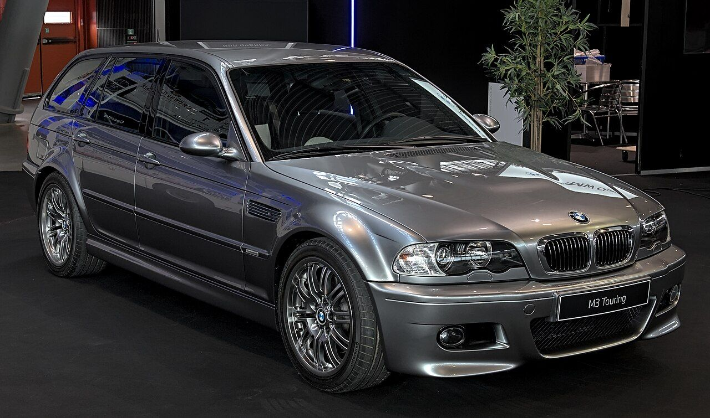
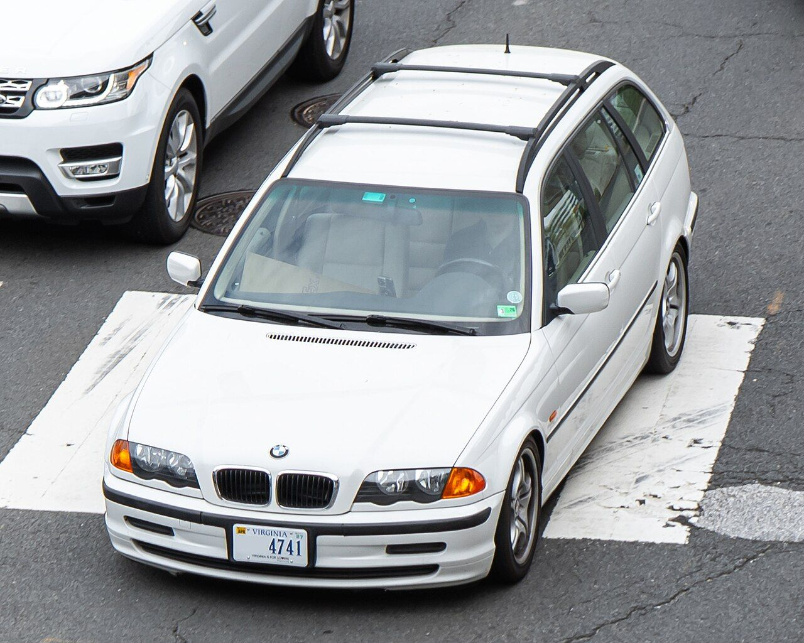
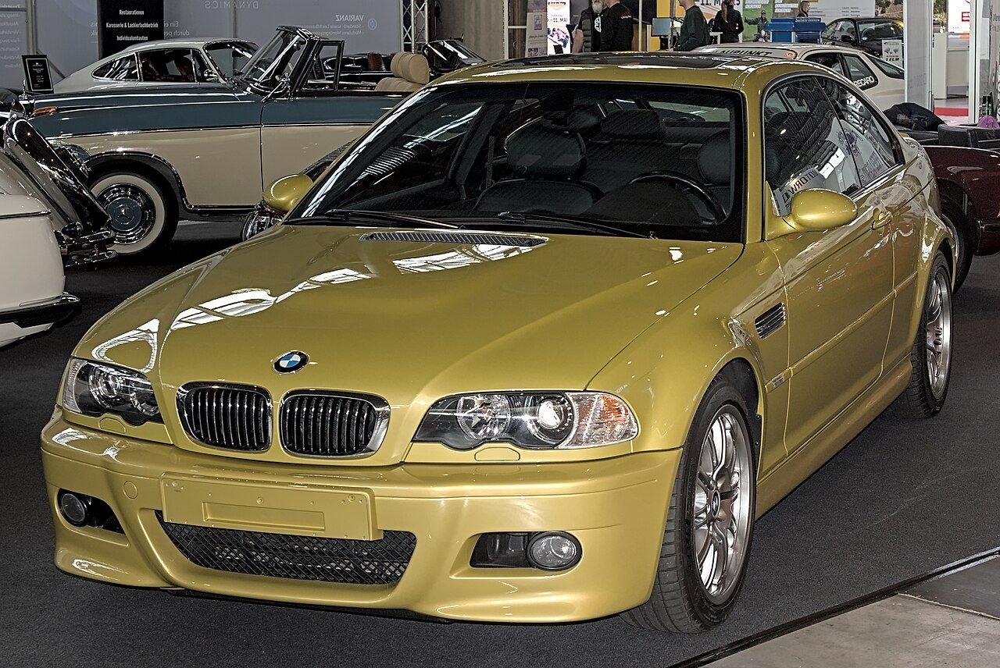
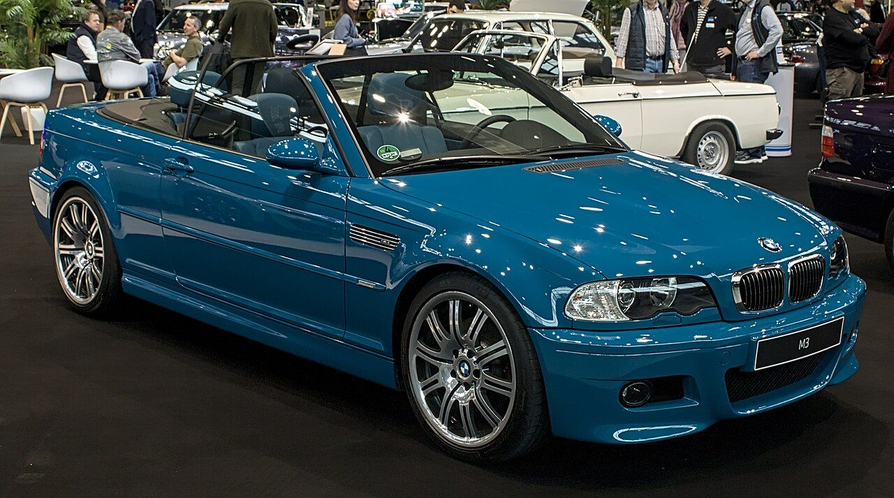
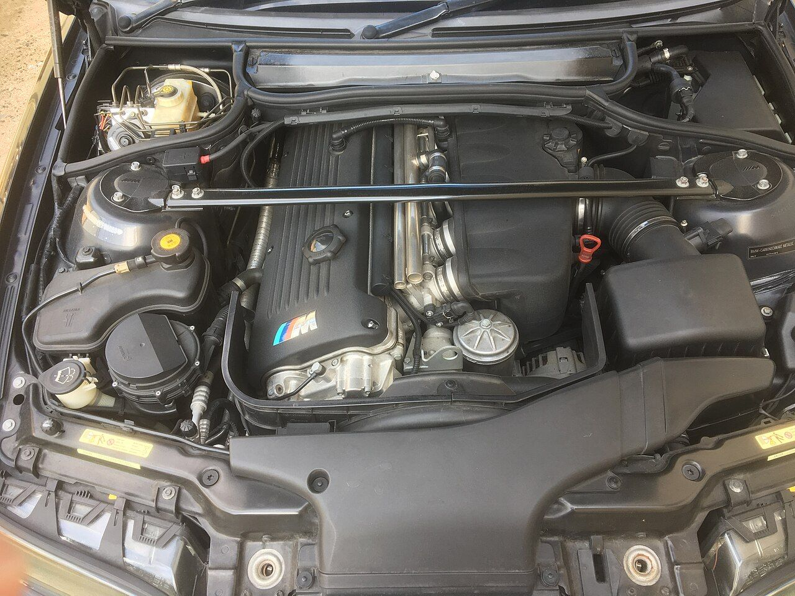
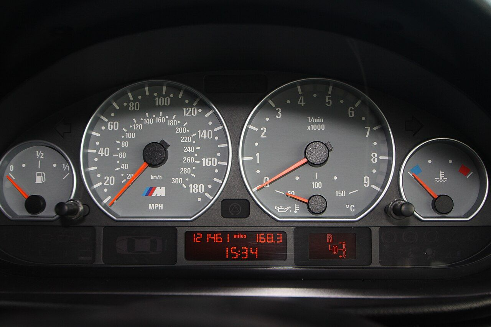
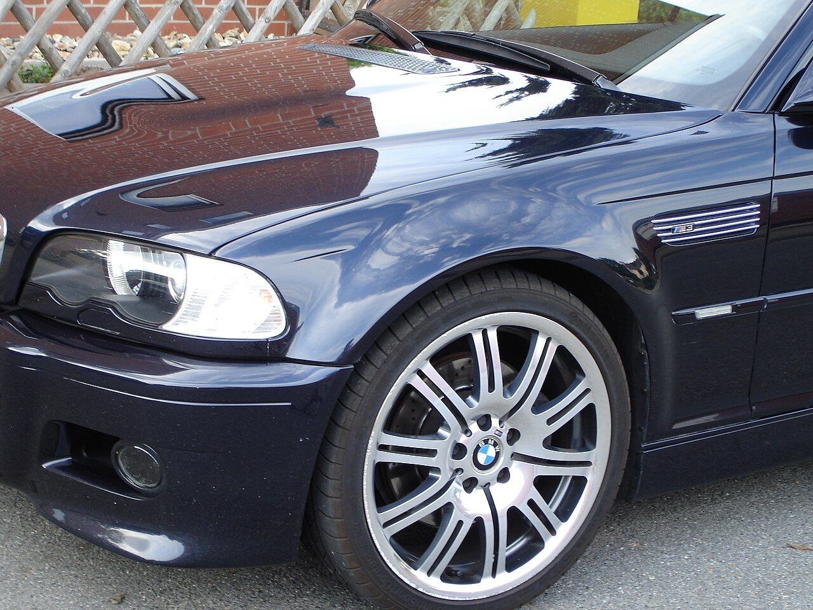
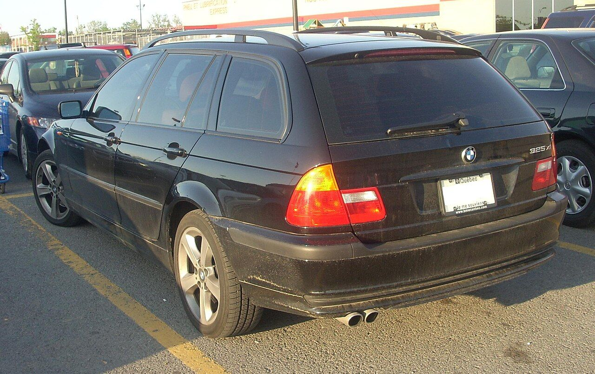
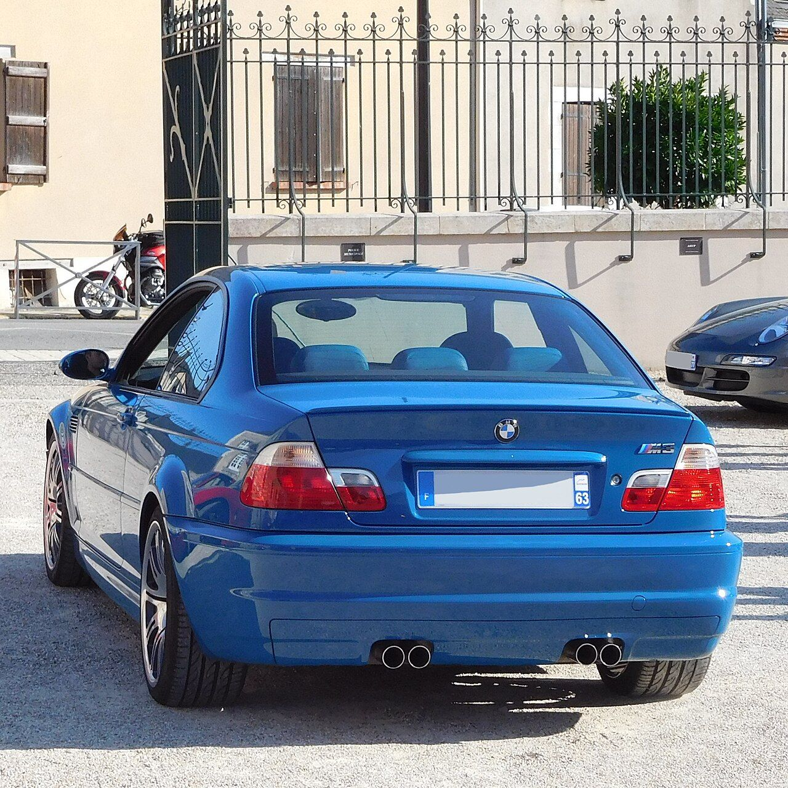
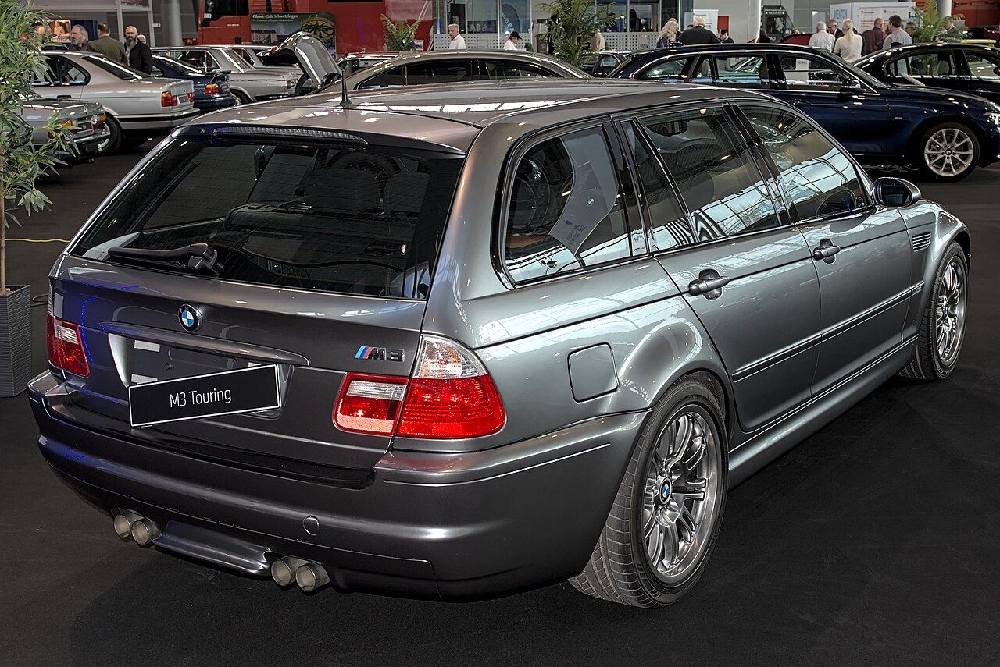

Overview
What you are building
BMW M built one working E46 M3 Touring in 2000 as an in-house feasibility study: S54 engine, six-speed manual, rear-wheel drive, Chrome Shadow metallic paint. It came down the normal Touring assembly line and then needed "only minimal manual follow-up work" to fit its M parts (BimmerFile). BMW kept it secret until the M3's 30th-anniversary "M3 Week" in September 2016. BMW's own account gives no reason it wasn't built; it says only that, unlike the E36-based M3 Compact prototype shown to journalists, "the M3 Touring served entirely in-house purposes" (BMWBlog). Later press accounts say M3 customers weren't keen (evo).


Jakob Polschak, then head of prototype building at BMW M, named the hard part: "One important thing we needed to demonstrate was that the rear doors of the standard production model could be reworked to adapt them to the rear wheel arches without the need for new and expensive tools" (BimmerFile). BMW kept the flare off the door skins: it "decided against melding the rear wheel-arch sculpting into the door", and Petroyle's cars keep standard rear doors for that reason (Autocar). Where the arch meets the rear door is still the trickiest junction on any conversion.
Finished conversions have sold for nearly $60,000 (Bring a Trailer, Aug 2024, via Top Gear) and $65,000 (Built for Backroads, Sept 2025; an all-wheel-drive car with more than $70,000 in it). A UK firm, Petroyle, plans 50 cars from £130,000 (PistonHeads).
The recipe
Documented builds follow the same pattern.
- Buy one whole M3 donor. Engine, gearbox, axle parts, brakes, modules and body panels arrive together and match, usually for less than buying them separately. A cheap convertible serves as well as a coupe; see Choose the donor.
- Move the running gear as assemblies: the S54 with its 420G gearbox, the M3 front suspension and steering, and the rear axle with the M differential. The M3 rear axle bolts to the same four body points; one shop found "the bolts are the same" (Tenza Motorsports – Supplying the S54 wagon with an M3 rear end (2021), 15:00). One UK builder dropped the donor's front subframe with the engine still on it (PistonHeads).
- Keep your Touring's body, interior, body wiring, EWS and keys. An experienced builder told a first-timer: "You're better off keeping the Touring loom and modifying it… The difference in the two looms is just too big" (PistonHeads). The one build we found that fitted the M3's body loom had to move the Touring-only circuits (rear doors, opening rear glass, rear wiper and washer) into it (PistonHeads).
- Fit the M3 fuel system. The S54 runs at 5 bar through the M3 filter-regulator and the M3's high-pressure lines. Keep your tank with a pump that passes the 5-bar test: your own, or the donor's M3 pump and baffle, which owners have fitted to the sedan tank, the same part as yours (e46fanatics). Or fit the donor's whole tank, as several Touring builds did (ThaChileanDude – Building an e46 m3 Wagon in 10 days (2024), 17:00, Calvin's Car Diary – What happened to my £200K E46 M3 Touring project (2025), 30:20, PistonHeads). The pump's wiring stays as it is. See Fuel system and Fuel-pump control.
- Make the electronics agree. The M3 engine harness and engine computer (DME) go in, with a few body-side wires moved. A vendor flashes the DME so it no longer needs the immobilizer handshake and writes your VIN into it. The M3 cluster gets a fresh memory chip carrying your VIN and then reads your true mileage from the light module. Keeping your Touring's own stability-control (DSC) unit is the documented route, and the steering-angle sensor is calibrated after the alignment. See Electronics and coding.
- Do the metalwork. Reinforce the rear subframe mounts and add the V-brace mounts a non-M body lacks, graft in the M3 trunk floor so the M3 muffler fits, weld M3 arch steel into the rear quarters, and graft on the M3 front end. Reshaping the rear doors is optional.
Why your car is a good start


- Rear-wheel drive. BMW's catalog lists one front subframe (front axle support 31111096902) for every rear-drive E46, M3 included; only the xi has its own (ETK). Keeping all-wheel drive behind an S54 has needed a modified 330xi oil pan and X3 differentials (BimmerLife), and FCP Euro's S54 xi Touring suffered poor oil flow that it put down to the all-wheel-drive refit (FCP Euro). You skip all of that.
- Already a manual. The pedal box, clutch master cylinder and clutch switch are in place, including the US (and Japan) wire that stops the car cranking unless the clutch is down (clutch switch wiring). BMW lists the same clutch master cylinder, slave cylinder and flex hose for your car and the M3. An automatic Touring would also need the manual pedals, a clutch line, the brake reservoir's sealed clutch outlet opened up and the gearbox section of the harness re-pinned; that last job caused one build's no-start (Tracks and Trails – Attempting to drive my E46 M3 Touring for the first time (2026), 1:16:20, Tenza Motorsports – 5 things they don't tell you about S54 swaps (2021), 07:20).
- Same platform. The S54 swap into non-M E46s is well documented. After fitting a 2004 S54 to a 2000 323i, an MS42 car, one owner wrote: "I only had to re-pin the X60004 connector on few places, everything else is just plug and play" (e46fanatics); an MS43 Touring also moves wires out of the E-box plug X6011, and an MS45.1 Touring adds wires to the cluster (Harness and re-pinning). Owners have bolted complete M3 rear subframes into non-M cars (e46zone). Small differences still catch people out: sensors that move to the other side of the engine bay, wheel-speed sensor plugs, the Sport button. The Parts list flags each one.
- Same floor and inner arches. BMW lists the same rear axle carrier panel (41117000246) and trunk floor for the US 325i Touring and sedan, so sedan-pattern reinforcement plates should fit (ETK: panel, ETK: Touring floor, ETK: sedan floor). The inner half of the rear wheelhouse (41148231757/758) is the same part on your Touring and the M3 (ETK).
- A sound shell saves the most time. On the UK builds, rust repair rather than the swap set the pace: Redish Motorsport called cutting out rust "the lengthiest process of this build" (Autoalex Cars – How to build an E46 M3 Touring, part 3 (2023), 20:00).
If your car is a 325xi
The owner once called this car a "325x", so decode the VIN before anything else. If it's a 325xi, the plan changes:
- Front axle. The xi has its own front subframe (31101096954) and knuckles, so "keep your front subframe" doesn't apply. You need the donor's rear-drive subframe (31111096902) with the whole M3 front axle (ETK: xi, ETK: rear-drive). One builder fitting M3 brakes to a 325xi's own knuckles had to mill the caliper brackets (e46fanatics).
- Drivetrain. Converting to rear drive removes the transfer case, front driveshaft and front axle drive; the Bring a Trailer car is a 325xi converted this way (BMWBlog). Keeping all-wheel drive needs the oil-pan and differential work described above.
- DSC. The xi uses a Bosch DSC 5.7, not the Teves MK60 (e46fanatics), so this guide's default of keeping your own DSC unit doesn't exist. You'd fit an MK60 (the donor's, if it was built from 09/2002, or a late 325i's) and adapt the DSC wiring; nobody has documented that in a Touring. The steering-angle job differs too.
- Not checked for the xi: the fuel tank, tunnel heat shields and exhaust hangers.
If the VIN says xi, budget for the second front axle and the DSC work, or look for a rear-drive 325i Touring.
How hard each job is
| Job | Difficulty | Why |
|---|---|---|
| Engine and gearbox swap | Moderate | Same platform; heavy but bolt-in. One shop rated its S54 Touring swap about 7.5 out of 10, mostly for the labor (Tenza Motorsports – Building an E46 M3 wagon is far more complicated (2021), 01:40) |
| Front and rear axle transplant | Moderate | Mostly bolt-on M3 parts |
| S54 refresh (rod bearings, VANOS, valves) | Moderate to hard | Precise work, special tools, a clean bench. Plan 3–7 days for a first rod-bearing job (Paul Vo – Rod bearing installation and torque procedure (2017), description) |
| DSC and brakes | Moderate | Keeping your Touring's DSC unit is the documented route. One S54 Touring ran the donor's unit, but nobody has published how it was coded (NAM3) |
| Rear subframe mount reinforcement | Hard | Welding plate to a thin floor, much of it overhead. BimmerWorld recommends an experienced, professional shop (BimmerWorld); one builder who did it himself concluded "take it to a shop" (Tracks and Trails – Fixing the weakest part of my E46 Touring (2025), 13:20) |
| Electronics and coding | Hard | Re-pinning connectors, the immobilizer (usually bought as a service), cluster EEPROM work, DSC coding |
| Floor and exhaust | Hard | Grafting the M3 trunk floor, V-brace mounts and hangers, a custom rear section |
| Front fenders | Hard to graft; moderate with carbon Touring fenders | Carbon fenders took a few hours of fiddling per side on one build and two days of front-end alignment on another (Tracks and Trails – What it really takes to build an E46 M3 Touring (2026), 04:00, M3projekts – Ep4, front-end alignment (2023), 01:00) |
| Rear arches | Very hard | Panel grafting, inner arches, filler work; the inner wheelhouse joint and the door junction took the most time on camera (M346 Projects – Pt 14, M3 body work (2024), 27:20) |
| Paint | Shop job for most | A full respray is normal after this much metalwork; one paint shop kept the car four months (M346 Projects – Pt 25, paint reveal (2025), 00:00) |
Decide these before you spend money
| Decision | Options | This guide's default | Details |
|---|---|---|---|
| Donor | Coupe or convertible; manual or SMG; build date; Competition package | A running manual car, same model year as your Touring or newer; built from 09/2002 if you want the option of using its DSC | Choose the donor |
| DSC and brakes | Keep your Touring's MK60 DSC unit, booster and master cylinder; or fit the donor's MK60 with its master cylinder | Keep your Touring's: one S54 Touring cleared its DSC light only by refitting its own 325i unit (e46fanatics) | DSC, brakes and steering angle |
| Immobilizer | EWS-delete flash of the donor DME with your VIN written in; a DME a vendor has virginized, synced to your EWS, since a used DME keeps its first car's code table for good (BMW ST051); or the donor's EWS and keys | Delete plus VIN, bought as a service, unless your state checks DME software: California's Smog Check fails modified software (BAR) | Immobilizer (EWS), Registration and legal |
| Cluster | M3 cluster on a new EEPROM chip carrying your VIN, done yourself or by a cluster service | Either; the cluster then reads your true mileage from the light module | Instrument cluster and mileage |
| Fuel | Your tank with a tested pump (yours or the M3's with its baffle), or the donor's tank; pump wiring unchanged or the M3 pump module | Your tank with a pump that passes the 5-bar test (yours, or the M3's with its baffle), the M3 filter-regulator and lines; pump wiring unchanged | Fuel system, Fuel-pump control |
| Front fenders | Graft genuine M3 fenders onto the rear strips of your 4-door fenders, or buy carbon Touring fenders | Your choice | Front end on a 4-door body |
| Rear doors | Leave them standard and stop the flare at the shut line, as BMW did, or reshape the door edge | Your choice | Rear arches and doors |
| Floor and exhaust | Graft the donor's M3 trunk floor; fit a new BMW M3 floor; weld in a flat panel; or keep the spare-wheel well and fit a muffler in the Touring's position, giving up the M3's rear-muffler layout (e46fanatics) | The donor's M3 floor: it mates with the same rails and brings the muffler brackets | Exhaust and the spare-wheel well |
| Springs, dampers and wheels | Coilovers, or springs and dampers rated for the Touring; 18-inch Style 67 or 19-inch wheels | Choose before the arch mock-up: the M3 coupe's springs and dampers sat too low in one Touring (Tenza Motorsports – ECS coilover install (2022), 00:40) | Suspension for Touring weight, Wheels, track and offsets |
| Shop or DIY | Reinforcement welding, paint, A/C, alignment, DME flash, cluster, exhaust | Decide now: shop lead times set your calendar | Shop briefs |
Documented builds compared
This table lists the E46 Tourings we found that were converted to M3 specification and documented well enough to compare, with BMW's own 2000 prototype first as the reference. Rows are grouped by how far each build went (full M3 body, body only, or an S54 swap that kept the Touring body) and run oldest first; problems are noted in the column where they happened, and "not stated" means the sources don't say. DME is the engine computer, EWS the immobilizer and DSC the stability control; the Exhaust column also covers the trunk floor and rear bumper.
| Build | Base car | Donor | DME, EWS and harness | DSC and brakes | Fuel | Rear arches and doors | Front end | Subframe reinforcement | Exhaust | Time and cost | Sources |
|---|---|---|---|---|---|---|---|---|---|---|---|
| Reference | |||||||||||
| BMW M prototype, Germany, built 2000, shown 09/2016 | Touring off the normal assembly line | None: factory M parts; S54, six-speed manual | not stated | not stated | not stated | Wider rear wheel housings; flare ends at standard rear doors | M3 bonnet with power dome, bigger intakes, side gills, wider front arches | not stated | Four-pipe M3 exhaust | "Minimal manual follow-up work" after the line | BMW M, BimmerFile, Rush, Autocar |
| Full M3 body | |||||||||||
| Kitchski's shop (PistonHeads), a customer car, before 09/2016 | 320i Touring (MY2000), automatic, left-hand drive | 2005 M3 CS, SMG, right-hand drive, repaired Cat C, about 55k on the clock | Touring loom kept and modified | ABS-unit plug spliced (different connector) | not stated | not stated ("the bodykit doesn't fit. At all") | Front wings "the big headache" | not stated | M3 rear bumper widened about 35 mm in the center; tip cut-outs moved | He puts such a build at £30–35k | PistonHeads p1, p2, p3 |
| E91M3 (PistonHeads), UK, 09/2016–01/2017 | 2005 320d Touring, bought with an engine fault | Rear half of a Cat C 2005 M3 convertible, for its panels | Not reached; advised to keep the Touring loom | not reached | not reached | New BMW quarters and boot floor were about £2k, so he planned to cut the convertible's | M3 bonnet, front bumper, mirrors and skirts bought | not reached | not reached | Abandoned after about three months; parts sold, car exported | PistonHeads p1, p3, p4, p5 |
| yavz (PistonHeads), UK, 02/2017–08/2022 | 318i Touring M Sport, 57k on the clock | His own M3 coupe, SMG; converted to manual in 2021 | Donor's engine and body looms with its DME; Touring-only circuits pinned in; started first time | Stock M3 brakes rebuilt; DSC not stated | M3 tank ("the pumps are different") | Donor's M3 quarters welded in; rear doors bent to match by a body shop | Wings made from M3 wings; OEM front bumper | Plates welded | M3 boot floor; donor's exhaust bracket welded on; Touring bumper's dip welded into the M3 bumper | Stalled for years (parts sold); painted 09/2021 | PistonHeads p1, p2, p3, p4, p6 |
| JMCCRNA (e46fanatics), 2018; mechanical work by a performance shop, body by a separate shop | 2003 xi Touring with a blown engine; made rear-drive (the xi gearbox mount needed a custom bracket) | M3, body style not stated | not stated | M3 DSC module; M3 wheel-speed sensors "plugged right in" | not stated | Quarters done; rear doors left flat "to follow the BMW prototype" | M3 panels and mirrors; Touring trim with M3 side markers | Reinforced (kit not stated) | Euro exhaust and the custom gearbox brace clashed | Started 10/2018; to paint 11/2018 | e46fanatics |
| Kyle and Maggie Baca, Virginia (US), 12/2018–2022; body by Mid-Atlantic Customs | 2004 325xi Touring, 5-speed manual, 114,000 mi; kept AWD (330xi oil pan, X3 diffs) | Bought separately: 76,000-mi S54; six-speed (330xi per BimmerLife, 420G per the sale listing) | Kassel tune; M3 cluster set to the car's mileage | M3 front calipers, 330i rear | M3 fuel system, S54 pump, tank baffles | M3 quarter panels welded in; doors not stated | OEM M3 aluminium hood, fenders, CSL bumper, mirrors | TMS plates; reinforced sway-bar mounts | Spare well deleted; custom 3-inch stainless exhaust | 280 h of mechanical work; over $70k; listed at $65k and sold 09/2025 | BimmerLife, Built for Backroads |
| Calvin's Car Diary with VRS Northampton, UK, 2019– | 2003 330d Touring that came with a botched M3 wing graft | 2003 M3 (a coupe in PT4, a convertible in the 2026 update) | ECU Master standalone for a forged turbo S54 | New BMW brake lines bent to shape; DSC not stated | Diesel tank out; M3 tank refurbished; rot behind it cut out | Donor quarters grafted; a section welded into the door so it flares out | M3 front with the rear of the Touring wing; gill moved forward | Some kit parts don't fit: the Touring has no rear-seat bulkhead | Donor boot floor; custom 3½-inch oval pipe | Not running 06/2026; "well in excess of £100,000" | PT4 (2020), 02:00, PT5 (2020), 07:20, PT6 (2020), 10:00, PT9 (2020), 02:20, PT9, 07:00, PT14 (2024), 16:40, PT15 (2025), 30:00, PT15, 37:20, 2026 update, 18:40, 2026 update, 36:00 |
| A San Diego owner (US), filmed 2020–23 | not stated | not stated | not stated; passed California's BAR referee after about five visits | Porsche 996/Boxster S front calipers on CSL rotors | not stated | First quarters stopped short of the door; redone with new M3 quarters | 2M fenders; replica CSL bumper; M3 mirrors (bases and doors cut) | not stated | M3 rear bumper cut to clear the hatch | not stated | Driving Cody (2020), 02:20, 04:00, 06:20, 07:00, Bimmer INVASION (2023), 10:40, 11:20 |
| puma1824 (US owner), built by M3Projekts in Hungary, 12/2021–03/2023 | US 2003 325iT, about 145k mi; gearbox not stated | US 2003 M3 convertible, about 155k mi | not stated; tuned later (2024) | M3 MK60 and speed sensor; big brake kit added later | M3 fuel tank | Welded steel M3 arches carried onto the rear doors; steel source not stated | Front fenders made by M3Projekts from M3 and Touring parts (from photos); a second set became its mould | Rear subframe and floor reinforced | M3 floor pan and stock M3 muffler; rear bumper modified | 14 months to first drive (body shop 03–05/2022, paint 07–10/2022); shipping both cars about $2k; costs not posted | e46fanatics; NAM3 p2, p4, p5, p6, p8, p10, p14, p16, p17 |
| Autoalex Cars with Redish Motorsport, UK, 03/2023–05/2025 | 330i Touring Individual (UK), 204,000 mi, already with a Quaife LSD | Imola Red M3 coupe, manual, 190,000 mi, £9,250; its gearbox later balked on track | not stated | EBC big brake kit; DSC not stated | not stated | M3 panels welded on (the donor's inner arches had rotted out); door junction still "work in progress" in 03/2024 | Back to pre-facelift: M3 bumper, bonnet, lights; carbon wings from Hungary | Redish V3 plates tied to the chassis legs; new V-brace boxes made | New BMW M3 boot floor (about £430 + VAT in 2023) for the quad exhaust | About £70,000; a second engine was needed | Donor (2023), 00:40, Pt 1 (2023), 07:40, Pt 3 (2023), 04:00, Pt 3, 04:40, Pt 3, 05:00, Pt 3, 13:20, Pt 3, 14:20, Update (2024), 03:40, Update, 09:00, Finale (2025), 01:40, Finale, 03:40, Finale, 13:40, Finale, 18:40 |
| M346 Projects, Georgia (US), 07/2023–10/2025; metalwork by a visiting friend | 2004 base-model Touring, automatic, blown engine, about 160,000 mi, no rust | 2003 M3 convertible, SMG (kept) | Donor body-harness circuits re-pinned into the wagon; his "converted" DMEs never showed readiness monitors | not stated | Regulator leaked at first start (bad O-rings) | Convertible's quarters and inner tubs welded; accident-curled lips rolled; door edges flared with a 2x4, gap rebuilt with panel bond | M3Projekts carbon fenders; M3 mirrors on M3Projekts bases | Plates bonded with 3M panel bond, not welded | Donor trunk floor and extra hangers; used CSL silencer ($400); catless headers (emissions caution) | 27 months, about four of them at the paint shop | Pt 1 (2023), 02:00, Pt 1, 06:40, Pt 8 (2024), 15:00, Pt 9 (2024), 02:40, Pt 13 (2024), 05:40, Pt 14 (2024), 00:40, Pt 14, 09:20, Pt 14, 15:20, Pt 14, 23:00, Pt 14, 30:20, Pt 14, 58:40, Pt 18 (2024), 02:20, Pt 21 (2024), 26:20, Pt 22 (2025), 02:00, Pt 22, 04:00, Headers (2024), 10:20, Pt 25 (2025), Pt 26 (2025), 43:20 |
| M3projekts (Attila Csontos), Hungary, 08–12/2023 | €800 318d Touring (M47 diesel), manual | £7,000 Cat D UK M3 convertible, manual | Touring harness converted to six-cylinder by an auto-electrician; first start the same day; EWS route not stated | M3 MK60 and the M3 sensor under the driver's seat, on the car's own connector | not stated | Both M3 quarters planned; not shown by Ep 8 | Whole M3 front fits except the fenders (plus brackets); his carbon fenders took two days to align | Usual RACP cracks found at two mounts | M3 trunk floor welded in at a body shop | Cars cost €800 and £7,000 | Ep1 (2023), 05:00, Ep2 (2023), 16:20, Ep3 (2023), 05:00, Ep3, 08:00, Ep3, 09:30, Ep4 (2023), 01:00, Ep5 (2023), 20:00, Ep6 (2023), 01:43, Ep6, 02:00, Ep6, 08:30, Ep6, 17:02, Ep7 (2023), 01:00, Ep8 (2023), 14:00 |
| SOS Customz (US body shop) for the solspeeds wagon, 2023 | not stated (an S54-swapped wagon) | not stated | Tried moving the M3's EWS, key and steering lock across to get it to start | not stated | not stated | M3 quarters joggled and plug-welded; inner structure lifted; door edges hammered out, no welding | Factory fenders kept at the mounts and door gap; M3 flare and gill spliced in | not stated | Trunk floor redone (method not stated); Touring center welded into the M3 bumper | About 30 days to paint, two people at 40–50 h a week | SOS Customz (2023), 02:00, 05:00, 14:00, 15:00, 21:00, 26:00, solspeeds Pt 4 (2023), 04:20 |
| Seller in Laguna Hills, California; sold on Bring a Trailer 08/2024 | 2001 325xi Touring, made rear-drive | 2001 M3: rebuilt S54 with CSL-style airbox, six-speed, DME, subframes, axles, diff | Donor DME; EWS route not stated | Porsche 996 calipers | not stated | Donor's flares (method not stated) | Donor bumpers, fenders, skirts, mirrors, headlights | not stated | not stated | Sold for nearly $60,000 | BMWBlog, Motor1, Top Gear |
| Sloan Motor Cars, Connecticut (US), for sale 11/2024 | 2004 325i Touring, 65,000 mi | not stated (S54 and Getrag six-speed fitted) | Kassel tune; EWS route not stated | not stated | not stated | OEM metal flares grafted on front and rear | OEM front bumper and headlights | not stated | Catless headers (emissions caution), CSL mufflers, quad tips under a modified bumper; 3.73 diff | 3,000 mi since the conversion; price on request | BMWBlog |
| Renner (US), filmed by Larry Chen, 03/2025 | 2002 Touring (per the VIN shown) | A running M3, cut up | not stated | not stated | not stated | M3 quarters contoured to the door; inner quarter and structure made in metal | Carbon front fenders | not stated | New M3 floor with the spare tub cut out and quad brackets; rear bumper made from two | not stated; claims a California-legal route, none shown | Larry Chen (2025), 01:20, 03:00, 05:20, 07:20 |
| Tracks and Trails, Ontario (Canada), 06/2025–; DIY, his first welding project | 2004 325i Touring (ex-Las Vegas), automatic, M54 | 2002 M3, manual, 240,000 km (body style not stated); the rebuilt S54 showed metal at its first oil change | DME file sent away for an EWS delete; clutch switch wired to EWS and DME; automatic gearbox plugs caused a no-fuel no-start | not stated | One of the M3 tank's prongs broke, so the M3 pump went into the Touring tank; M3 regulator fitted after failed starts | Flares butt-welded; Touring inner arch extended; flare laid over the door, door gap re-cut | M3Projekts carbon fenders; M3 bumper, hood, mirrors, skirts | Redish V3 plates MIG-welded, tank out (CAD 2,300 DIY against a 2,500 shop quote); donor's V-brace boxes welded in | Partial M3 floor panel; catless headers (emissions caution) | First start 06/2026; panels on, paint still to do 09/2026 | Intro (2025), 06:00, Teardown (2025), 03:00, RACP (2025), 13:00, Rear end (2025), 01:20, 06:00, 27:20, First drive (2026), 08:40, 47:00, 1:12:40, 1:14:00, 1:16:20, 1:17:20, Bodywork (2026), 04:00, 15:40, 17:40, 34:40 |
| M Classics, Netherlands, car for sale 11/2025 | not stated | not stated; S54 with 250,000 km, manual | not stated | not stated | not stated | Wide body; M3 coupe arches and extra door metalwork per its site (unverified) | M3 bumpers and skirts | not stated | M3 trunk floor per its site (unverified) | €69,950 asking | Autoblog.nl, M Classics (site down when checked) |
| Petroyle Restorations, Oxfordshire (UK), 2026; 50 cars planned | Any E46 Touring shell | Mechanically sound M3 whose body doesn't matter; often one with a rotten boot floor; a new S54 from BMW is offered | not stated | not stated | not stated | Steel quarter welded in as part of a larger panel; standard doors (one 03/2026 review says the arches are carbon) | Carbon front wings, sills and rear bumper | Rear axle carrier panel cracking addressed | Spare well cut out, carbon panel fitted | From £130,000 | Autocar, PistonHeads, Hagerty (2026), 06:40, 09:00, 10:00, candyshowroom (2026), 15:40 |
| Body only | |||||||||||
| A Driftworks forum owner; date and place not stated | 330d Touring | None stated | not stated | not stated | not stated | Arch sections cut from E46 front fenders, welded to the quarters for M3 19-inch wheels (unverified) | not stated | not stated | not stated | not stated | Driftworks (blocked when checked) |
| S54 swap, Touring body kept | |||||||||||
| Tenza Motorsports, US, a customer car, 12/2020–06/2022 | 2004 325i Touring (US), M56 SULEV engine, automatic | Beaten 2002 M3 ($6,500), six-speed; body style not stated | Kassel EWS-delete DME with the wagon's VIN and a tune; Kassel-coded M3 cluster with the wagon's mileage and rear-door lamps; about $1,000 | M3 front brakes; M3 and non-M wheel-speed sensor plugs didn't mate, so non-M sensors went in the M3 hubs and the ABS light came on | Sealed SULEV tank replaced by the M3 tank (a legal question on a SULEV car); tank vent nipples snapped | None (Touring body); the M3 springs sat too low and the rear tyres rubbed until coilovers went in | ZHP bumper, lip cut away to feed the M3 oil cooler | not stated | Spare well kept; non-M and M3 exhausts merged | $21,665 all in; driver's mirror and cruise control never worked | Plan (2020), 00:40, Costs (2021), 01:00, Rear end (2021), 06:40, 15:00, 5 things (2021), 07:20, 08:20, Front end (2021), 03:20, Runs (2021), 02:00, 06:28, 07:20, SULEV (2021), 01:20, Exhaust (2021), 00:40, 5 things pt 2 (2021), 03:20, 06:07, Coilovers (2022), 00:40, Total cost (2022), 01:20, 04:20, 07:20 |
| Project BMW, San Francisco Bay Area (US), 10–12/2021; a driveway on jack stands | 325i Touring (M54); gearbox not stated | Curb-damaged M3 convertible, six-speed, clean title | Not shown on camera | M3 front brakes with the M3 front axle; DSC not stated | Pumps swapped in the Touring tank; M3 fuel lines (the 325's purge line didn't suit the S54) | None (Touring body) | Touring body; M3 rack, arms and struts on the Touring subframe | not stated; Powerflex inserts in the reused subframe bushes | ZHP muffler instead of the M3 quad | "At least a seven-day project", spread over two months | Donor (2021), 02:00, Front (2021), 02:20, Day 4 (2021), 02:40, Day 5 (2021), 00:20, 03:20, 04:00, Finished (2021), 04:00 |
| ThaChileanDude with Miracle Motorwerks (US), 2024 | E46 Touring, automatic, converted to manual with M3 pedals; engine not stated | not stated | Tuned M3 DME; clutch switch wired to the EWS and the brake-switch circuit | ABS light left on | M3 tank, pumps and lines | None (Touring body) | Touring body | not stated; poly subframe bushes clocked | not stated | About 10 days; ABS light, tamper dot and check-engine light left on | 10 days (2024), 00:55, 01:56, 17:00, 19:56, 29:34, 34:48, 35:19 |
Other E46 S54 swaps worth learning from
These are sedans and coupes, not Tourings, but each one taught a wiring, coding, gearbox or fuel lesson that applies to your car.
| Build | Car | Lesson | Sources |
|---|---|---|---|
| ShopLifeTV, US, 2015–22 | 2001 330i sedan, automatic converted to six-speed, with a matched donor DME, EWS, key and cluster | The EWS's clutch/park-neutral input stopped the first start. He coded the input off instead of wiring the clutch switch to the EWS, which removes a start interlock. His advice to "realign the LCM" to a donor cluster would change the car's recorded mileage. Check-engine and traction lights came back years later. | First start (2015), 01:08, Parts (2016), 03:14, The end (2022), 05:19 |
| Import Modify, US, 2018 | 328Ci race car (MS42) with an MSS54 bought with an EWS delete | Two small E-box plugs differed (3-pin against 4-pin), so compare every plug before first start. The EWS-delete DME still needed the car's own EWS to accept the key. The same vendor flash removed emissions functions: decline those options. | Ep.36 (2018), 01:05, Ep.41 (2018), 01:49, 12:23 |
| DBO, US, 2019–21 | 2001 330Ci, manual, fitted with a complete M3 body harness | The DM-TL plug had three wires on the 330Ci and four on the M3. The M3 brake booster's holes had to be slotted to fit the firewall. The crew guessed the fuel pressure at 4 bar; BMW sets the S54 at 5 bar (BMW ST041). | Part 1 (2019), 08:44, 16:40, Part 2 (2020), 03:41 |
| UNRIVALED, 2021 | E46 sedan with an S54 from an SMG car, converted to manual | A shop's coding left the SMG donor's DME in limp mode ("still thinks it's an SMG"): the DME software has to change, not just the coding. The S54's second auxiliary water pump needs its own wiring, or the cooling system is hard to bleed. | UNRIVALED (2021), 02:02, 02:32 |
| e46fanatics "S54 swap wiring information", 2013– | A 2000 323i with a 2004 S54, and a 1998 323i with an MS43-type body harness | A few re-pins in the DME's body connector were enough on these cars, an MS42 car and one rewired for an M54's MS43; an MS43 Touring also moves wires out of the E-box plug X6011, and an MS45.1 Touring adds wires to the cluster. The four-wire map posted there from memory came from an M54 swap (MS42 to MS43); on an MS43 Touring the same wires move the other way. Use the Wiring and coding manual. | e46fanatics |
| Kalim (e46fanatics), 2011–18 | Two sedans (MS43 and MS45.1), one a 2003 325i | The M3 pump, baffle, left sender and lines went into the non-M tank, which BMW lists as the same part for the US 325i Touring. Swappers who left the pump on its stock relay found it ran, but a US DME stored a fuel-pump fault without lighting the check-engine lamp. | p.1, p.38, ETK |
| nextelbuddy (NAM3), 2020 | 2003 330i ZHP sedan (MS45.1 body harness) with an S54 | The oil-pressure lamp went out at ignition on, because the M3 routes the oil-pressure switch through the DME. One added wire from the DME connector to the cluster plus a cluster coding change fixed it; pins are in the Wiring and coding manual. | NAM3 |
What the builds teach
- The arch-to-door junction is where builds differ most. BMW's prototype and Petroyle's cars stop the flare at the shut line and keep standard rear doors (Autocar), and JMCCRNA did the same "to follow the BMW prototype" (e46fanatics). Most others carried the flare onto the door: yavz's body shop bent the doors to shape (PistonHeads), SOS Customz hammered the edges out (SOS Customz – Building a BMW E46 M3 Touring Wagon (2023), 02:00), Calvin's body man welded a section in (Calvin's Car Diary – PT9 (2020), 02:20) and Tracks and Trails laid the flare over the door and re-cut the gap (Tracks and Trails – What It REALLY Takes to Build an E46 M3 Touring (2026), 15:40). Flaring the door after the quarter is on opens the shut gap by 3–4 mm, which M346 rebuilt with panel bond (M346 Projects – Pt 22 Rear door flare finishing (2025), 01:00), and the San Diego car's first quarters stopped short of the door and were redone (Bimmer INVASION – E46 M3 Wagon in San Diego (2023), 11:20). Either way, the front of the coupe flare sits wider than a four-door body and has to be dressed in (M346 Projects – Pt 14 M3 Body Work (2024), 28:20). See Rear arches and doors.
- No M3 front fender fits a four-door body. Everything else in the M3 front end fits, give or take a few brackets (M3projekts – Ep3 (2023), 08:00, 09:30), but the fender is longer and sits further out (Tracks and Trails – What It REALLY Takes to Build an E46 M3 Touring (2026), 02:20); one shop called the wings "the big headache" (PistonHeads). Builders grafted steel (SOS Customz – Building a BMW E46 M3 Touring Wagon (2023), 05:00, Calvin's Car Diary – PT9 (2020), 07:00) or bought M3Projekts' carbon Touring fenders, which still took two days to align on one car (M3projekts – Ep4 Frontend alignment (2023), 01:00) and hours of trim fitting on another (M346 Projects – Pt 18 M3 front end installed (2024), 08:00). A graft that stops the arch line short is shown on Calvin's second Touring (Calvin's Car Diary – PT5 (2020), 07:20). See Front end on a 4-door body.
- The rear underside gets rebuilt, not just cut. The M3 silencer won't clear the spare-wheel well, so every full-body build that shows its floor replaced it: with a new BMW M3 floor (Redish Motorsport – BMW M3 Touring build: Part 1 (2022), 04:40), the donor's floor (M346 Projects – Pt 14 M3 Body Work (2024), 00:40), part of an M3 panel (Tracks and Trails – I spent $10,000… rear end (2025), 01:20) or a carbon panel (Autocar). The Touring floor also lacks the M3 silencer's extra hangers (Redish Motorsport – BMW M3 Touring build: Part 1 (2022), 06:00, Tracks and Trails – rear end (2025), 03:20) and the V-brace mounting boxes (Tracks and Trails – rear end (2025), 06:00, Autoalex v2 – Building an E46 M3 Touring: Massive update (2024), 04:00). Three builds welded subframe plates, with the tank out (Autoalex Cars – Part 3 (2023), 15:20, Tracks and Trails – Fixing the weakest part… (2025), 09:00, PistonHeads); M346 bonded his, and nobody has compared the two (M346 Projects – Pt 14 M3 Body Work (2024), 23:00). Parts of one kit wouldn't fit Calvin's Touring, which has no rear-seat bulkhead (Calvin's Car Diary – PT15 (2025), 30:00). The builds that kept the well ran a non-M or ZHP muffler instead (Tenza Motorsports – Mixed exhaust (2021), 00:40, Project BMW – This S54 swap wagon pulls hard (2021), 04:00). See Exhaust and the spare-wheel well and Rear subframe mount reinforcement.
- The builds that bought an EWS delete started; the ones that tried to sync struggled. Tracks and Trails sent his DME file away for a delete (Tracks and Trails – Attempting to Drive my BMW E46 M3 Touring for the First Time (2026), 1:12:40), and Tenza bought a Kassel DME with the delete, the wagon's VIN and a matching cluster for about $1,000 (Tenza Motorsports – M3 touring build finally runs! (2021), 02:00, Tenza Motorsports – 5 things they don't tell you, part 2 (2021), 06:07). After a delete, the car's own EWS still checks the key and releases the starter (BMW ST051, Import Modify – Ep.41 S54 Swap, First Start! (2018), 12:23). Two S54 Tourings that tried to sync a used or virginized DME to their own EWS couldn't: one moved to the donor's EWS and key and still didn't start (e46fanatics); the other had been running on two keys, the M3's at the antenna and its own in the lock, and its thread ends unresolved (e46fanatics). Keep the clutch switch wired to the EWS, as Tracks and Trails and ThaChileanDude did (Tracks and Trails – Attempting to Drive… (2026), 08:40, ThaChileanDude – Building an e46 m3 Wagon in 10 days (2024), 19:56). See Immobilizer (EWS).
- The M3 tank or pump went in without reported trouble; the regulator and lines are what caught builders out. M3 tanks went into five of the Tourings above (PistonHeads, Tenza Motorsports – Total build cost (2022), 05:00, ThaChileanDude – Building an e46 m3 Wagon in 10 days (2024), 17:00, Calvin's Car Diary – PT15 (2025), 30:20, NAM3), and Tracks and Trails put the M3 pump into his Touring's tank (Tracks and Trails – rear end (2025), 27:20). His car then wouldn't start until he fitted the M3 filter-regulator (Tracks and Trails – Attempting to Drive… (2026), 1:14:00); M346's regulator leaked at first start (M346 Projects – Pt 13 Engine Start! (2024), 05:40); Project BMW found the 325's fuel and purge lines didn't suit the S54 (Project BMW – S54 Engine Swap Wagon RUNS (2021), 00:20). A US SULEV (M56) Touring has a sealed tank of its own, which Tenza replaced (Tenza Motorsports – No more SULEV! (2021), 00:20), so check your engine code before you plan, and check that changing a SULEV car's fuel system is legal where you live. See Fuel system.
- Wheel-speed sensors and the DSC unit can leave the ABS light on. M3s built before 09/2002 have an MK20 DSC with inductive sensors and gray plugs; your Touring and later M3s have the MK60's active sensors with blue plugs (BMW ST056). That likely explains why Tenza found the M3 and non-M wheel-speed sensor plugs wouldn't mate on its 2004 Touring with a 2002 donor; it fitted non-M sensors in the M3 hubs and got an ABS light (Tenza Motorsports – 5 things they don't tell you, part 2 (2021), 03:20, Tenza Motorsports – M3 touring build finally runs! (2021), 07:20), while the M3 sensors "plugged right in" on a 2003 xi Touring (e46fanatics), so check your plugs before you order. One S54 wagon never cleared its DSC light with an M3 MK60 and went back to the 325i unit (e46fanatics), another ran on both (NAM3), and three builds above used the M3 unit (M3projekts – Ep5 S54 install (2023), 20:00, NAM3, e46fanatics). ThaChileanDude's ABS light was still on after the swap (ThaChileanDude – Building an e46 m3 Wagon in 10 days (2024), 34:48). See DSC, brakes and steering angle.
- Small wiring differences caused the no-starts and the lights left on. Tracks and Trails' no-fuel no-start came from automatic-gearbox plugs that look the same but are wired differently (Tracks and Trails – Attempting to Drive… (2026), 1:16:20). A 2001 325iT lost its oil and battery lamps because the M3 harness routes them through the DME (e46fanatics); Tenza's driver's mirror and cruise control never worked (Tenza Motorsports – Total build cost (2022), 07:20); ThaChileanDude's tamper dot and check-engine light stayed on (ThaChileanDude – Building an e46 m3 Wagon in 10 days (2024), 35:19). The coolant-level and washer plugs move sides and had to be extended on several cars (Tracks and Trails – Attempting to Drive… (2026), 22:40, M3projekts – Ep5 S54 install (2023), 04:00, Tenza Motorsports – 5 things they don't tell you (2021), 00:40). For a US inspection, M346's "converted" DMEs never set their readiness monitors (M346 Projects – Pt 26 Final Wagon Reveal (2025), 43:20), while a swap builder who keeps stock US software apart from the EWS delete reports every monitor ready (e46fanatics). Three builds above run catless headers, which a US road car may not do. See Troubleshooting and Registration and legal (US).
- Rust and life, not the swap, set the schedule and the bill. Autoalex's donor lost its inner arches as soon as it was stripped, cutting out rust was "the lengthiest process", and the car took about three years, two engines and £70,000 (Autoalex Cars – Part 1 (2023), 07:40, Autoalex Cars – Part 3 (2023), 20:00, Autoalex Cars – It Took 3 Years And £70,000… (2025), 18:40). Calvin's car is still not running after seven years and more than £100,000 (Calvin's Car Diary – I have big news… (2026), 18:40), and Petroyle's donors often come with rotten boot floors (Hagerty – "New" BMW E46 M3 Touring (2026), 06:40). yavz's build stalled for years and E91M3's was sold off after three months (PistonHeads, PistonHeads). For scale, M346 started from a rust-free wagon and finished in 27 months of mostly DIY work (M346 Projects – Pt 1 (2023), 02:00, M346 Projects – Pt 26 Final Wagon Reveal (2025)), and SOS Customz did the metal and body in about 30 days with two full-time people (SOS Customz – Building a BMW E46 M3 Touring Wagon (2023), 26:00). See Plan and budget.
Plan and budget
Check your own Touring first
Before you buy a donor, make sure your Touring is the car this guide assumes. Most checks cost nothing; Phase 0 of the build records the results.
| Check | How | What the answer means |
|---|---|---|
| Model and build date | Decode the VIN: 325i or 325xi, build date, option codes | An xi changes the plan (If your car is a 325xi). The build date sets the facelift front (from 09/2001), how modules are coded (ZCS before 09/2001, the vehicle order after) and which DME you have |
| Engine and tank | Engine code on the block or in the VIN decode; look at the tank | You want an M54B25 with a plastic tank. An M56 SULEV car has a CAN-controlled pump module, a sealed metal tank and no return line (ETK), so the fuel plan doesn't apply as written; one M56 Touring took the M3 tank, which changes a certified evaporative system, so ask your state first (Tenza Motorsports – No more SULEV (2021), 00:20, Registration and legal). BMW's 2002 bulletin introduced the M56 with automatics (BMW B11 75 02). Read one way, BMW's catalog lists a five-speed for the US 325i M56 Touring (ETK); read another, that gearbox sits in groups shared with other engines, and the only M56 gearbox-module harness it lists is for automatics (ETK), so a manual M56 is probably a conversion. Either way a manual isn't proof of an M54: check the engine code and the tank |
| DME | Read the label in the E-box | MS43 on cars built to 02/2003, MS45.1 from 03/2003 (ETK); forums and Kassel's chart call the second "MS45". No label? The MS45.1 has the leak-test heater wire in X60004 pin 2 and wires in pins 5 and 15; the MS43 has the heater wire in the E-box plug X6011. On a car built in 02 or 03/2003, or a 325xi, check rather than assume (manual). It sets your re-pin list |
| DSC, not ASC only | Label on the hydraulic unit, or the option list | BMW also lists ASC-only units for US Tourings, and an ASC-only car has no steering-angle sensor (ETK); BMW's 2003 US spec sheet for the 325i Sport Wagon lists DSC (BMW USA). Cars built before 09/2001 also have an early MK60 with analog yaw sensors (e46fanatics) |
| Rear axle carrier panel (RACP) | Clean and inspect all four subframe mounts top and bottom, the ends of the V-shaped beam and the rail-to-floor spot welds, using CMP's criteria (CMP, part 1, part 2) | Cracks are repaired before plating. A torn panel is a body-shop job: BMW's 21 kg replacement (41117000246) is reported discontinued by US vendors (Turner, unverified) |
| Rust | Rear arch inner lips, sills and jacking points, around the tank and brake-pipe brackets, battery box, floor | On one Touring Redish found the jacking points delaminating, corrosion behind the tank brackets and holes in the battery box (Autoalex Cars – Part 3 (2023), 03:00, 12:40) |
| Options | Climate control (automatic IHKA or manual IHKR), console switch center, xenon lights, mirror harness on facelift doors, cruise | A/C is confirmed working with IHKA; nobody has confirmed IHKR (e46fanatics); facelift Touring doors have ribbon-cable mirror harnesses that M3 mirrors don't plug into (M346 Projects – Pt 21, M3 mirror retrofit (2024), 00:20) |
| Coding kit | Build it and prove it on the unmodified car: INPA reads the cluster, light module and DSC, and NCS Expert reads the vehicle order (FA) or key code (ZCS) | Fix the cable, port or software before taking any backup; Phase 0 then saves every module's coding and the cluster and light-module EEPROMs. See Factory documentation and coding kit |
Choose the donor




Buy one complete, running E46 M3 with a manual gearbox. A running car lets you test the engine, gearbox and electronics before they come apart. The builder of two Hungarian conversions puts it simply: "Coupe or Cabrio/Vert doesn't really matter… better if she is mechanically fine" (M3projekts – Cheapest UK M3 donor, Ep7 (2023), description).
- Model year: the same as your Touring or newer. EPA policy and state engine-change rules generally want the engine to be the same model year as the chassis or newer (see Registration and legal). A 2003 Touring can take an engine from a 2003–06 M3; a 2005 needs a 2005 or 2006. Choose a donor whose underhood emissions (VECI) label shows a US 50-state certification; in Massachusetts the emissions category matters too (see Massachusetts).
- Build date. Several parts change with production date:
| Part | Earlier cars | Later cars | What it means for you |
|---|---|---|---|
| Engine computer | MSS54, to about 09/2003 | MSS54HP, from about 09/2003 (NAM3) | Either works. Keep the DME with its own engine harness, which also changes at 09/2003 (ETK) |
| DSC unit | Teves MK20, to 09/2002: 43-pin plug and a separate pre-charge pump (ETK) | MK60, from 09/2002 (Competition unit from 12/2004): the same 47-pin plug as your Touring's (ETK) | Matters only if you'd use the donor's DSC. An MK20 won't plug into your harness |
| Master cylinder and booster | 34312282343 and 34332282193, to 09/2002 | 34317838638 and 34332282622, from 09/2002 (ETK) | Only for the donor-DSC route |
| Rod bolts | M11 twelve-point, reused, on engines built up to 12/12–13/2002 | M10 E-Torx, new every time, tightened in three cycles (BMW SI B11 04 04) | Vendors and ETK give 02/2003 for the change; go by the bolt heads, not the date. Late engines need 12 new bolts |
| Instrument cluster | Coding index 20–22 | Redesign clusters, coding index 23–24, roughly 2003 on (e46fanatics) | Prefer a redesign cluster: it properly supports the M Track light and brake-force display. The backlight wire changed at 09/2002, so an older cluster in a later Touring needs a wire added, and a newer cluster in an older Touring a light-module update (e46fanatics) |
| Rear wheel-speed sensors | Early type, to 09/2002 | Later type, from 09/2002; your Touring changed at 09/2001 (ETK) | Check the plugs on both cars before you order. BMW lists the same sensors, but on a 2004 Touring with a 2002 donor the M3 and non-M plugs didn't mate (Tenza Motorsports – 5 things they don't tell you, part 2 (2021), 03:20), while a 2003 xi Touring took the M3 sensors (e46fanatics) |
| Competition package (ZCP) | — | From 12/2004: a quicker rack (shared with the CSL), 345 × 28 mm front rotors and 19-inch Style 163 wheels (ETK: rack, ETK: rotor) | Nice to have, not needed |
- Manual, not SMG. SMG cars cost less (one estimate says 20–30%, unverified), but you'd add the manual shift parts and clutch hydraulics an SMG car lacks, a manual gearbox-harness section (Redline) and manual DME software. The MSS54's hardware is the same for both gearboxes, but BMW released separate manual and SMG software, so an SMG donor's DME needs a reflash or a vendor's conversion, not just coding (NAM3, ECUWorx). One SMG-donor DME that a local shop "coded" stayed in limp mode (UNRIVALED – Watch this before you S54 swap your BMW (2021), 02:02). The PistonHeads Touring's builder converted an SMG donor.
- Coupe or convertible. Convertibles usually cost less (see the price table below), and for this conversion they give up almost nothing:
- BMW lists separate M3 convertible quarter panels (41357894541/542), but the arch is almost certainly the same pressing as the coupe's. Both cars have the same rear track, wheels and body width, and the same filler flap, bumper brackets and side skirts meet the flare (ETK: quarter, ETK: flap, BMW USA). Check with a profile gauge or cardboard template at three or four stations across the flare before you cut.
- A convertible quarter covers the whole outer skin from the door shut line to the tail light, the part a Touring needs; it lacks only the coupe's C-pillar. Its arch flange sits on the convertible's heavy inner side frame, so expect more spot welds to drill (ETK). It brings the same M3 trunk floor, front fenders, hood and bumper as a coupe.
- One owner-built Touring used both quarter sections and the trunk floor from a 2003 M3 convertible (M346 Projects – Pt 1, M3 part out (2023), 06:40).
- M3 convertible front seats don't fit a Touring (e46fanatics), and the convertible's front struts are different parts from the coupe's (ETK).
- Damage and rust you can accept. A bent shell is fine if the parts you need are intact: drivetrain, axle parts, front panels (hood, fenders, headlights, bumper), both rear arch areas and the trunk floor around the muffler. Rust is the bigger risk. E46 rear-arch rust starts at the inner arch, hidden under seam sealer (Redish), and Redish says M3 inner arches "are always rotten out" (Autoalex Cars – Part 3 (2023), 04:20), and Autoalex's cheap coupe donor lost its inner arch as soon as it was stripped (Autoalex Cars – Part 1 (2023), 07:40). That car revved cleanly, but its frame and subframes turned out to be "in seriously bad condition" (BMWBlog).
- Paperwork. Get the title or salvage paperwork and a bill of sale, and photograph the VIN plates and engine number; your state may ask for proof of the engine's year.
Test it while it still runs. Some tests need the seller's agreement; do the rest before teardown.
| Test | How | Record or look for |
|---|---|---|
| Drive it | Fully warm; every gear; listen at warm idle | A knock at idle; clean shifts into all six gears and reverse; diff clunk or whine. One 190,000-mile donor's gearbox later refused a gear on track (Autoalex Cars – It took 3 years and £70,000 (2025), 13:40) |
| Fault codes | Scan every module with INPA and save the lists | Stored faults in the DME, DSC, cluster, airbag and EWS |
| Module IDs | Record each module's part number and software; read the DME's ID and its stored VIN slots (AIF) with Tool32 (ECUWorx); back up the cluster EEPROM with PA-Soft | Unit types (MK20 or MK60, MSS54 or HP) and the cluster's coding index. Send the DME data with the DME if a vendor flashes it |
| Compression and leak-down | Warm engine, all plugs out | Compression of about 11–12 bar (160–174 psi) minimum, about the same on every cylinder: a figure from a forum compilation, so confirm it in TIS (Flow compilation, p.47). No leak-down figure turned up; judge how even the six cylinders are |
| VANOS | Tool32 or INPA VANOS tests; listen for rattle; if allowed, take the valve cover off and look at the exhaust-hub tabs and the oil-pump disc (Beisan) | VANOS faults, and the test readings to compare after the refresh (Phase 12); a cracked hub tab means a new hub |
| Fuel pressure | Gauge on the feed, pump run through a relay bypass, BMW's method (BMW ST041) | 5.0 ± 0.2 bar, still above 4.5 bar after 20 minutes (Bentley, quoted on e46fanatics) |
| A/C | Run it on max | Cold air and a compressor that engages. Then have a shop recover the refrigerant before you open anything; venting it is prohibited (EPA) |
| DSC and ABS | Warning lights at start; a careful hard stop on a quiet road | Lights out, ABS working |
| Measurements | On level ground at normal ride height, at each corner: the heights of the hub center, the arch lip and a body point both cars share, and how far the lip sits outboard of the tire (Measure and mock up before you cut). Photograph the B-pillar tire placard and the underhood A/C and emissions labels | Your hub-to-body and hub-to-lip targets for the Phase 6 mock-up, the tire pressures and the A/C charge |
| Donor option | Price seen | Source |
|---|---|---|
| Running E46 M3 | 2005 coupes $37,275–$45,150 and 2005 convertibles $12,750–$31,500, in sales from Dec 2024 to Jan 2026 (from search extracts) | Hagerty |
| Rough donors used for conversions | $6,500 for a curbed 2002 M3 that needed a clutch (2021); £7,000 for an insurance-write-off convertible (UK, 2023); £9,250 for a rusty 190,000-mile coupe (UK, 2023). In Canada in 2025, manual M3s with over 400,000 km were asking more than CAD 20,000 | Tenza Motorsports – S54 swap costs (2021), 01:00, M3projekts – Ep7 (2023), 01:00, Autoalex Cars – I bought a cheap E46 M3 (2023), 00:40, Tracks and Trails – Can I do it? (2025), 07:40 |
| Salvage or wrecked M3 | A salvage-title convertible already missing its rear end, about $4,500 (bought around 2018); a clean-title 2003 six-speed with salvage history, $7,100 (April 2019) | autoevolution, e46fanatics |
| Used S54 with DME and harness, about 200k miles | About $3,500 asking locally, $6,000 and up on eBay and Copart (June 2025). The same thread suggests a whole '03.5-on convertible donor for under $9–10k | NAM3 |
| Complete used M3 rear axle | €1,650 (Germany, 2023) | M539 Restorations – Project Cologne PT13 (2023), 00:40 |
Budget
These ranges assume you do the labor. Rows marked "estimate" are planning figures, not quotes. Vendor prices were checked in October 2026 unless a date is given; £ and € prices are as listed, before shipping and import costs.
| Item | Range (USD) | Basis |
|---|---|---|
| Donor M3 | $8,000–$20,000 | Estimate; recent prices under Choose the donor. Add travel or transport: one build spent about $1,000 collecting its cars (Tenza Motorsports – Total build cost (2022), 01:40) |
| Rod-bearing parts | $750–$1,100 | BimmerWorld's OEM kits are $753.99 for engines built to 2/03 and $844.99 from 4/03, with new M10 bolts (BimmerWorld); upgraded bolts or coated bearings cost more (estimate). Shops charge $1,625 (EAS); Mr Vanos in the UK charges £1,995, including a new oil pump, ARP bolts and two engine mounts (Mr Vanos) |
| VANOS refresh | $155–$1,135 | Beisan's seal and rattle kit is $155 (Beisan); BimmerWorld's kit with a new exhaust hub is $979.99 without seals (BimmerWorld) |
| Other engine seals, gaskets, chain guide, shims | $500–$1,500 | Estimate |
| Clutch, dual-mass flywheel, pilot bearing, bolts | $600–$1,800 | Estimate |
| 420G seals and gear-identification switch | $100–$300 | The switch is about $78 (NAM3); seals estimate |
| Axle refresh: subframe and diff mounts, RTABs, arms, end links | $800–$2,000 | Estimate |
| Brakes: pads, rotors, M3 front hoses | $600–$1,500 | Estimate |
| Dampers and springs, or coilovers | $1,200–$3,500 | Estimate |
| Rear subframe reinforcement and V-brace mounts | $250–$700 in parts | The MSW kit is about $155–$160 (Morehead); Redish's plates were £180, plus £125 for six tank and brake-pipe brackets, in 2023 (Autoalex Cars – Part 3 (2023), 16:00); aftermarket V-brace boxes were "like a hundred bucks" in 2025 (Tracks and Trails – I spent $10,000 on my E46 Touring's rear end (2025), 07:40). Shop labor: $800–$1,200 quoted in 2019, about $2,200–$2,400 with bushings and an alignment (e46fanatics); one 2025 Canadian quote was CAD 2,500, against CAD 2,300 to do it yourself including a new welder (Tracks and Trails – Fixing the weakest part of my E46 Touring (2025), 13:20) |
| Trunk floor and exhaust rear section | $800–$3,000 | The donor's floor, or a new BMW M3 floor at about £430 plus VAT in 2023 (Autoalex Cars – Part 3 (2023), 13:20); custom rear section estimate. One builder found a used CSL muffler for $400 in 2024 (M346 Projects – Pt 9, CSL muffler (2024), 02:40) |
| Fuel: M3 filter-regulator, lines, pump | $250–$900 | Estimate |
| Cooling refresh | $400–$900 | Estimate |
| A/C: recovery on both cars, drier, O-rings, evacuate and charge | $300–$700 | Estimate |
| DME: EWS delete with your VIN written in (manual software if SMG) | $100–$349, plus shipping | Kassel charges $109 for the delete plus $20 for the VIN, or $349 for its engine-swap coding with every swap option (Kassel). DUDMD charges $215–$225 (DUDMD). RPM charges $300 (October 2026) (RPM). Severn charges $100–$200 depending on shipping, and its page says "off-road use only" (Severn). For the sync route, RPM's used-DME EWS programming is $300 (RPM) |
| Coding kit: laptop, K+DCAN cable, PA-Soft interface, 10 A charger | $300–$800 | Estimate; less if you own a suitable laptop |
| Cluster: new EEPROM done yourself, or a service | $50–$400 | Estimate. One Touring build paid Kassel about $1,000 including shipping for the DME tune, EWS delete and cluster mileage together (2021, Tenza Motorsports – 5 things they don't tell you, part 2 (2021), 05:40) |
| Wiring: terminals, repair leads, depinning keys | $100–$300 | Estimate. Redline's plug-in E46 S54 swap harness is $265 and needs an EWS-deleted DME (Redline) |
| Body materials | $500–$2,000 | Estimate, using donor steel; new-steel prices are in the tip below |
| Front fenders | $0–$2,000 | Grafting the donor's costs only materials; carbon Touring fenders are €1,400 before VAT (M3Projekts) |
| Paint (full respray) | $6,000–$15,000 | Estimate; varies widely by region and shop |
| Tires, alignment, fluids, hardware | $1,500–$2,500 | Estimate |
| Tools you don't own yet | $1,000–$3,000 | Estimate: welder, respirator and extraction, test gauges, torque wrenches, engine stand. One builder's MIG welder was about CAD 1,200 (Tracks and Trails – Fixing the weakest part of my E46 Touring (2025), 13:00) |
| Contingency | 10–15% | Estimate; every documented build met work it hadn't planned |
| Total | About $27k–$75k | Including contingency; before selling leftovers |
Selling what you don't use (the M54, the 5-speed, the MS43 or MS45.1 DME, replaced 325i axle parts, donor interior and panels) can recover $2k–$5k (estimate). Hold back the fallback parts listed under Space, storage and logistics.
For comparison, Autoalex's UK build with specialist help cost about £70,000, including two engines (Autoalex Cars – It took 3 years and £70,000 (2025), 18:40), and the all-wheel-drive Touring that sold for $65,000 had more than $70,000 in it (Built for Backroads). A US S54 swap that kept the non-M body and spare-wheel well came to $21,665 all in, including both cars and a budget paint job (Tenza Motorsports – Total build cost (2022), 01:20). With finished cars selling for $60k–$65k, build this because you want the car, not as an investment.
Time
Rough durations for one person working evenings and weekends. These are planning estimates; the last column shows what builders reported.
| Phase | Weekends | Evidence |
|---|---|---|
| Buy, test and strip the donor | 4–8 | One builder stripped a convertible donor in about a week (M346 Projects – Pt 1, M3 part out (2023), 02:00) |
| Strip your Touring | 2–4 | |
| Subframe mounts and floor | 4–8 | Cutting one V-brace mounting box off a donor "took all day" (Tracks and Trails – I spent $10,000 on my E46 Touring's rear end (2025), 06:20) |
| Rear arches (and doors, if you reshape them) | 8–16 | A professional shop took about four weeks, two people at 40–50 hours a week, for the whole body from first cut to paint (SOS Customz – Building a BMW E46 M3 Touring wagon (2023), 26:00) |
| S54 and axle refresh (in parallel with the bodywork) | 6–10 | Plan 3–7 days for a first rod-bearing job (Paul Vo – Rod bearing installation and torque procedure (2017), description); Beisan quotes 7 or more hours for a DIY VANOS job (Beisan) |
| Reassembly: axles, engine, fuel, cooling, exhaust | 8–12 | |
| Wiring, coding, first start, shakedown | 4–8 | Allow a week or two for the DME and cluster to visit a vendor; RPM quotes 1–2 business days after arrival, with overnight shipping both ways (RPM) |
| Front end, paint and trim | 4–8, plus shop time | One paint shop kept the car four months (M346 Projects – Pt 25, paint reveal (2025), 00:00) |
Real builds:
| Build | Who did the work | Timeline |
|---|---|---|
| Autoalex Cars: UK 330i Touring, coupe donor | Specialist (Redish Motorsport) | Started March 2023, handed over May 2025 (Autoalex Cars – It took 3 years and £70,000 (2025), 03:20, 06:20) |
| "To Europe and back": US 2003 325iT, convertible donor | A shop in Hungary | Picked up December 2021, bodywork March–May 2022, first test drive March 2023 (e46fanatics) |
| M346 Projects: US 2004 Touring, convertible donor | Owner, with a visiting metalworker | July 2023 to October 2025, including four months at the paint shop (M346 Projects – Pt 1 (2023), 00:00, Pt 26, final reveal (2025), 00:00) |
| Tracks and Trails: 2004 325i Touring (automatic) | Owner, his first welding project | Cars bought by June 2025, first start June 2026, body panels on by September 2026 with paint still to do (Tracks and Trails – Can I do it? (2025), description, Attempting to drive (2026), 1:17:20, What it really takes (2026), 34:40) |
Keep the scope to the recipe: a turbocharged Touring on a standalone ECU, started in 2019, still wasn't running in June 2026 (Calvin's Car Diary – I have big news about my £200,000 E46 M3 Touring (2026), 18:20).
Factory documentation and coding kit
BMW's documentation is the reference for every standard procedure, torque and wiring diagram this guide doesn't print. Load the right VIN: one Touring swapper found the diagrams changed once he entered his wagon's VIN, and a Bentley page that didn't match his car misled him (e46fanatics).
| Source | Use it for | Where |
|---|---|---|
| BMW TIS (newTIS) | Repair instructions, tightening torques, technical data and capacities, body dimensions (group 51 00), alignment values; wiring diagrams (WDS) by VIN | newTIS (it runs a browser check, so open it in a normal browser). Read body-side diagrams with your Touring's VIN and engine-side ones with the donor's. One builder found it lacked the right MSS54 DME diagram (e46fanatics) |
| BMW WDS (Wiring Diagram System), public mirror | Wiring diagrams, DME pin tables, connector views and component locations; the manual's pin tables name the drawing behind every wire | wds.psjr.org. It has no VIN filter: pick each drawing by the models and build dates in its title. ISTA shows the diagrams for your exact VIN; BMW's official portal sold a one-day subscription for $32 in October 2026 (BMW AOS) |
| ETK parts catalog | Part numbers, which models use a part, changes by build date | RealOEM or bmwfans.info; search by VIN |
| Bentley E46 service manual | A printed manual for the 325i; a seller listing says it also covers the 2000–05 M3 (unverified) | Bentley Publishers |
| BMW service bulletins | SI B11 04 04: S54 rod bearings, bolts, torques, oil and break-in. SI B12 09 13: inspections fail when the DME holds the wrong VIN | SI B11 04 04, via NAM3, SI B12 09 13, via NHTSA |
| BMW training manuals | How the systems work: E46 M3 (ST041), MS S54 engine management (ST055), EWS (ST051) | ST041, ST055, ST051 |
| SGBD job documentation | The jobs, status bits and fault numbers Tool32 uses, for the S54's DME (MSS54DS0.PRG) and the other modules |
SGBD documentation, a community transcription of BMW's job files |
| "Flow" E46 M3 torque compilation | A forum PDF of the M3's fasteners built on RealOEM printouts, with a TIS alignment page. Cross-check only; confirm in TIS | Google Drive, via NAM3 |
Coding kit. Buy it early and prove it on your unmodified Touring before you need it. Setup steps are in the Wiring and coding manual.
- Laptop: a dedicated Windows 10 or 11 laptop, 32- or 64-bit, running Windows natively (not in a virtual machine or Boot Camp), with its charger plugged in. BMW Standard Tools 2.12 installs on Windows 7–11, so older advice that it needs Windows XP is out of date (e46fanatics).
- Cable: a K+DCAN USB cable with an FTDI chip and a switch that bridges OBD pins 7 and 8. On an E46 only the DME talks on pin 7; the cluster, light module and DSC are on pin 8, so an unbridged cable can't read them (e46fanatics, NAM3). Set it to COM1 with a 1 ms latency timer (NAM3).
- PA-Soft interface: PA-Soft (BMW Scanner 1.4) needs its own interface for cluster and light-module EEPROM work. Its driver is the step most likely to fail on Windows 10 and 11, so install it first (e46fanatics, NAM3).
- Software: BMW Standard Tools 2.12 (INPA, Tool32, NCS Expert, WinKFP) with E46 data files, plus NCS Dummy and an NCS profile that allows editing, such as Revtor's or FISTER (ECUWorx). Two owners' INPA builds, labelled 5.00 and 5.0.2, had no MK60 steering-angle page, while builds 3.0.1 and 4.4.7 are reported to have it; Tool32 runs the job either way (e46fanatics, e46fanatics). One owner was told to use NCS Expert 3.0.x after 4.x gave "no response" errors (a single report) (NAM3). BMW's dealer software, ISTA, is optional.
- Power: a battery charger or power supply of at least 10 A on the car whenever you code or flash (ECUWorx).
- For the cluster, if you do it yourself: an EEPROM programmer (R270 type), a hot-air rework station and a blank M35080 chip (e46fanatics). A cluster service replaces all three.
- Not enough on their own: BimmerGeeks' ProTool reads E46 faults but can't code an E46 (BimmerGeeks); Carly lists only comfort and lighting coding (Carly); the Foxwell NT530 does resets, not module coding (BimmerWorld).
Tools and test equipment
- Lifting and moving: a two-post lift makes this far easier. Without one you need tall jack stands, an engine hoist with a load leveler, a transmission jack, an engine support bar, an engine stand, a low table or dollies for dropping subframes, and wheel dollies to move the stripped shell. Read Safety before anything heavy comes out.
- Measuring and testing: two torque wrenches (one covering about 5–60 Nm, one reaching 300 Nm for the hub nuts), a torque-angle gauge, a compression tester and a leak-down tester, a fuel-pressure gauge with an adapter and a relay bypass jumper, a mechanical oil-pressure gauge with an M12×1.5 adapter for the oil-pressure-switch port (Flow), a cooling-system pressure tester, a multimeter, a vernier caliper for panel thickness, a profile gauge for arch shapes, and a tape measure and plumb bob for ride height and body diagonals. Toe plates and a camber gauge are optional.
- Engine bench: Plastigauge in the green PG-1 grade FCP Euro uses (FCP Euro – S54 rod bearing replacement DIY (2022), 01:20), feeler gauges and valve shims, E-Torx sockets E10, E12 and E14, and a 12-point 12 mm socket for M11 rod bolts. From Beisan's VANOS procedure: BMW's crank-turning socket 83300491056 (or a 36 mm 12-point socket on early engines, which have four Torx bolts at the crank hub; later engines take a 27 mm hex adapter), and a 32 mm fan wrench with water-pump pulley holder 83300491046 for the left-hand-thread fan clutch (Beisan). If the VANOS unit comes off, add the S54 timing set (cam bridge, locking pins, crank pin) and a transfer-gear holder (ECS Tuning – S54 valve adjustment and VANOS rebuild (2025), 01:30).
- Driveline and chassis: a clutch alignment tool, a flywheel lock, an O2-sensor socket, a spring compressor for the front struts, bushing press kits (trailing-arm bushings, subframe and diff mounts), a ball-joint separator, an inner tie-rod tool, a pressure bleeder with an airtight cap or a slave-cylinder bleed tool, and a brake-line bender: BMW supplies straight pre-flared lines (Calvin's Car Diary – What happened to my £200K E46 M3 Touring project (2025), 37:20).
- Body: a MIG welder set up for thin sheet (wire, gas and settings: Welding settings and safety), spot-weld drill bits and a spot-weld chisel, cut-off and flap discs, a hole punch for plug-weld holes, butt-weld clamps, clecos and panel clamps, copper or aluminum backing paddles, hammers and dollies, long sanding boards, and a plastic welder if you graft the rear bumpers.
- Electrical: depinning keys and a crimper for BMW's terminal families, a multimeter, labels and heat-shrink. Turner sells 12- and 23-piece depin sets (Turner, unverified). Coding hardware is under Factory documentation and coding kit.
- Safety equipment: a respirator rated for metal fume plus local extraction, two fire extinguishers and a fire blanket, welding blankets, and eye, face and hand protection.
Space, storage and logistics
For 18–30 months you'll store two cars' worth of parts: a stripped Touring shell, an engine on a stand, the donor's axle assemblies and your own, panels, glass and boxes of small parts. Plan the space before you buy the donor.
- Room to work: one bay for the Touring shell on wheel dollies, with room to open its doors and weld around it; a bench and the engine stand; shelving or wall racks for panels, axle assemblies and labelled bins; and dry storage for parts waiting to be sold. The donor needs a second bay or a driveway spot only until it's stripped.
- Strip the donor fast. Test it, take everything on the Parts list, cut out the steel you need, then let the shell go. One builder stripped his donor in about a week (M346 Projects – Pt 1, M3 part out (2023), 02:00). Protect what you store: one builder's power-steering line kinked in storage and had to be replaced (Tracks and Trails – Attempting to drive my E46 M3 Touring for the first time (2026), 1:05:20).
- The donor shell and its title. Sell or scrap the shell through a licensed dismantler or scrapyard; Autoalex's went to a new owner (Autoalex Cars – Part 2 (2023), 13:40). Ask your DMV what happens to the donor's title when the car is dismantled, and keep copies of the title, bill of sale and the VIN-plate and engine-number photos for the engine-change paperwork (Registration and legal).
- Fluids and refrigerant. Have a shop recover the A/C refrigerant from both cars before either system is opened; venting it is prohibited (EPA). Drain oil, coolant, brake fluid and fuel into labelled containers and take them to a recycling center.
- Your Touring off the road. Ask your insurer about a storage policy and your DMV whether to keep the car registered during the build.
What to sell, and when. The right-hand column is the guide's one list of fallback parts: your way back if the DSC, cluster, cruise or fuel route doesn't work out. The phases point here.
| Safe to sell early | Hold until the car has passed inspection |
|---|---|
| The M54, 5-speed gearbox and clutch | Your Touring's DSC unit, booster and master cylinder, and the donor's |
| The MS43 or MS45.1 DME and engine harness, once you've tagged its X60004 wires | Your Touring's original cluster, with its EEPROM backup |
| 325i axle parts you've replaced: rack, control arms, struts, rear subframe, trailing arms, brakes | The donor DME's original file, and the donor's EWS and keys |
| Touring front panels you've replaced: hood, fenders, bumper, headlights | The donor's clutch-switch module, if you fitted a new M3 one (your Touring's doesn't work with the MSS54) |
| Donor interior, glass, doors and trunk lid; a convertible's top | The donor's body harness and connector pigtails, a source of terminals and missing wires |
| The fuel pump and tank you didn't fit, and the donor's fuel-pump module | |
| The donor's wheel-speed sensors, if it's an MK60 car (built from 09/2002); an MK20 donor's don't fit your harness |
Shop briefs
Give any shop a written brief. These cover the jobs this guide suggests outsourcing.
| Job | Ask for | Tell them |
|---|---|---|
| A/C, before teardown | Recover the refrigerant from both cars | The donor's compressor and lines are coming out; you'll cap every opening |
| A/C, after first start | A new drier (64538377330 or 64536917658) and O-rings, a vacuum test, and a charge by weight to the underhood label | The system has been open for months; the drier and condenser are the same parts on both cars (ETK: M3, ETK: Touring). Bring your photo of the label |
| Subframe reinforcement welding | Underside plates at all four mounts plus the topside work: the rosette welds over the rear mounts, the floor tied to the rails, and V-brace mounting boxes | It's a Touring with no rear-seat bulkhead, so kit parts that brace against one won't fit (Calvin's Car Diary – What happened to my £200K E46 M3 Touring project (2025), 30:00). Keep the kit's spacer plates; no structural foam; the tank, fuel lines and EVAP parts are out. See Rear subframe mount reinforcement |
| Paint | A full respray (or the panels you list), including door shuts, jambs, under the hood and the tailgate opening; the color code from the body tag | What you've prepped and what they must finish. The M3 panels were fitted in primer, so gaps are set. For a color change, ask whether the doors come off and the glass comes out, as on one build (M346 Projects – Pt 23, paint shop prep (2025), 03:00) |
| Exhaust fabrication | A rear section from the M3 mid-pipes to the M3 muffler (or your choice), hung from the M3 brackets on the outer underbody | Keep the M3 catalysts, all four O2 sensors and the secondary-air parts. Check clearance to the floor, tank, bumper and tires at full bump; fit heat shields; set the tips to your bumper cut-outs. See Exhaust and the spare-wheel well |
| Wheel alignment | BMW's E46 M3 values, set at the car's loaded ride height, with before and after printouts | The M3 values are a target, since the Touring sits differently (Wheel alignment). You'll calibrate the steering-angle sensor afterwards |
| DME flash | An EWS delete with your Touring's full 17-character VIN written in; manual software if the donor was SMG; otherwise stock US software, since a Euro file can drop US emissions functions | Decline secondary-air, rear O2, catalyst and EVAP deletes: they're illegal on a road car. Ask that every readiness monitor still runs; one builder's modified DMEs never set them (M346 Projects – Pt 26, final reveal (2025), 43:20). Send the fault list, hardware number and AIF you saved. If your state checks software, ask whether their file passes (Registration and legal) |
| Cluster service | Your Touring's VIN in the M3 cluster, with the odometer set so it takes your true mileage from the light module; the M3 coding index kept; rear-door warning lights added if offered | Send a photo of your current odometer. Never let anyone change the light module's mileage to match a cluster. Owners name Kassel, Fixels and RPM Motorsport (NAM3) and Huggins Racing (e46fanatics); Kassel added the rear-door warnings for one Touring (Tenza Motorsports – 5 things they don't tell you, part 2 (2021), 05:40) |
| Machine shop, if you fit ARP rod bolts | Resize the rods after the new bolts go in, as ARP's sheet requires (ARP) | Mark every rod and cap |
Safety
- Lifts and stands. The car's center of gravity moves when the engine or rear axle comes out. Strap it to a two-post lift or put stands under the end that's getting lighter, and reposition the lift arms; one builder supported the rear once the engine was out (Tracks and Trails – Removing the M54 drivetrain (2025), 06:20). Lower subframes level: studs pass through them (Tenza Motorsports – Supplying the S54 wagon with an M3 rear end (2021), 04:40).
- Fuel. Drain and remove the tank, filler neck and EVAP parts before you weld or grind anywhere near the rear of the car, and cap every line. Store fuel in approved cans away from the work.
- Battery and electronics. Disconnect the battery before welding, unplug the DME and alternator, and clamp the welder's ground close to the weld, never through suspension parts (Garagistic K0536).
- Fire. BimmerWorld warns that BMW's factory chassis coating "can be extremely flammable" (BimmerWorld). Strip coatings and seam sealer back from the weld, keep two extinguishers and a fire blanket at hand, and stay with the car until everything has cooled.
- Fumes. Reinforcement plates are often zinc-coated, as CMP's 2.5 mm plates are (CMP), and weld-through primer is zinc-rich. Zinc fume causes metal fume fever, so use local extraction or a respirator rated for metal fume (OSHA). Settings and test coupons: Welding settings and safety.
- Airbags. Disconnect the battery and follow BMW's procedure before removing the steering wheel or anything else with an airbag.
- Brakes. Don't drive until the pedal is firm, then prove the ABS with a careful hard stop on a quiet road (DSC, brakes and steering angle).
Parts list
"Source" says where each part comes from: Donor M3, Keep (from your Touring), Buy new, or Fabricate. Take every donor part before the shell goes; anything you miss turns up months later. In the web version you can filter by source and tick parts off as you get them. Part numbers come from BMW's parts catalog (ETK). To see which models use a part, add its number to https://bmwfans.info/parts-catalog/, for example 31111096902. Check every number against your VIN on RealOEM before ordering. Single-use fasteners, seals and fluids are under Consumables and single-use parts.
Engine and engine bay
| Part | Source | Notes |
|---|---|---|
| S54B32 engine, complete with ancillaries | Donor M3 | Keep the alternator, starter, A/C compressor, power-steering pump, intake, airbox, sensors, and the secondary-air pump and valve with it |
| M3 engine support arms; new engine mounts | Donor M3 | The arms set the engine's position; check oil-pan clearance to the rack before tightening. Fit new mounts |
| M3 engine harness with its E-box branch and gearbox-module harness | Donor M3 | Take the E-box fuse carrier and every E-box plug: X6011, X6021, X6053 and X6054, and the battery feed X64101/X64102 (WDS, manual). Keep the gearbox-module harness with it: its X6053 halves don't mate with a Touring's. The harness changes at 09/2003 (ETK) |
| M3 DME (MSS54 or MSS54HP) | Donor M3 | Keep it with its own harness; EWS delete with your VIN, see Immobilizer (EWS) |
| M3 accelerator pedal | Donor M3 | Your pedal's wires use the same X60004 pins on all three DMEs, and both cars list the same pedal module, 35426786282 (WDS, ETK); take the M3's as a spare |
| Radiator, fan clutch 11527831619, electric auxiliary fan 64546988914 and shroud | Donor M3 | The M3 fan and shroud are M3 parts but use the same 3-pole connector, and the fan's control wire needs no re-pin (ETK, WDS) |
| Coolant expansion tank 17112283344, thermostat, hoses | Buy new | The plastic tank gets brittle with age (BimmerWorld). It sits on the other side of the engine bay from the 325i's, so extend or re-route the level-sensor lead (Tracks and Trails – Attempting to drive (2026), 22:40) |
| Expansion-tank bracket and secondary-air pump frame bracket | Donor M3 | A non-M engine bay doesn't have them; cut them off the donor and weld them in (Tracks and Trails – Attempting to drive (2026), 23:20, M3projekts – Ep8, trunk floor (2023), 10:00) |
| Heater valve | Keep, or Donor M3 | The US M3's valve (64118369807) carries an auxiliary water pump whose two wires aren't in your harness; your plain valve (64118369805, also the CSL's) fits the S54 with no wiring (NAM3, ETK). With the M3 valve, wire and code the pump: without it, one car was hard to bleed (UNRIVALED – Watch this before you S54 swap your BMW (2021), 02:32, manual) |
| Washer reservoir, pump and level sensor | Donor M3 | The M3 reservoir sits low behind the bumper; extend the pump and sensor leads (Tracks and Trails – Attempting to drive (2026), 23:00, M3projekts – Ep5, S54 install (2023), 04:00) |
| Engine oil cooler, lines and brackets | Donor M3 | Sits under the radiator and breathes through the M3 bumper's lower opening |
| Power-steering reservoir, lines and cooler | Donor M3 | Must match the M3 rack; both hoses differ from the 325i's (e46fanatics) |
| A/C lines | Donor M3 | Have the refrigerant recovered first; see Shop briefs |
| A/C condenser | Keep | Same part (64538377614) on both cars (ETK) |
| Exhaust manifolds, catalysts, O2 sensors | Donor M3 | Keep every emissions part for inspection |
| E-box housing, DME and injector relays, engine ground strap | Keep | The same parts on both cars (ETK: E-box, ETK: relay, ETK: ground) |


Fuel
| Part | Source | Notes |
|---|---|---|
| M3 fuel filter 13327831089, regulator housing 13537830368, 5-bar regulator 13531404089 | Buy new | They replace the 325i's one-piece filter-regulator 13327512019 on the same bracket (13321435583) and cover (ETK). Fit them before the first start (Tracks and Trails – Attempting to drive (2026), 1:14:00) |
| M3 vacuum hoses and tube to the S54's air distribution pipe | Donor M3 | The S54 regulator is referenced to engine vacuum; your 325i's hose is only a vent (e46fanatics) |
| M3 fuel lines: front feed 16122229410, rear feed 16122229409, return 16122229411 | Donor M3 | M3-only parts. The M3's high-pressure lines have quick-disconnect fittings where the Touring's are barb and clamp, and no adapter is documented (ETK, e46fanatics). Feed and return swapped caused one swap's no-start (NAM3) |
| M3 fuel pump 16142229684 and baffle 16112229656 | Donor M3 | Owners have fitted both into the non-M sedan tank, the same part as your Touring's (e46fanatics, ETK). Or keep your pump if it passes: 5.0 ± 0.2 bar and at least 1.12 L in 30 s at 12 V (e46fanatics); then check that the M3 rear feed line's quick-disconnect fits its outlet, or keep your rear feed line and adapt at the filter (Fuel system). Test whichever you fit |
| Fuel tank, left sender, filler neck | Keep | Or fit the donor's whole tank, as several Touring builds did (ThaChileanDude – Building an e46 m3 Wagon in 10 days (2024), 17:00, PistonHeads). An M56 SULEV car's sealed tank is a different case: one was replaced with the M3 tank, but that changes a certified evaporative system, so ask your state first (Tenza Motorsports – No more SULEV (2021), 00:20, Registration and legal). Don't drop a tank with its vent hoses attached: the plastic nipples snap and aren't sold separately (Tenza Motorsports – Supplying the S54 wagon with an M3 rear end (2021), 06:40) |
| Fuel-pump relay K96 | Keep | BMW's drawings put its coil on X60004 pin 10 on both the MS43 and the MS45.1 (WDS). In documented swaps the US MSS54 drives it from that pin with no wiring change, leaving a stored pump fault that doesn't light the check-engine lamp (e46fanatics); prove it on your car (Fuel-pump control) |
| M3 fuel-pump module (EKP) 61357892976 | Donor M3 | Hold it even if you don't fit it: it's the fix if your state objects to the stored fault. ETK lists this number for the US coupe (ETK); a convertible's module sits behind the right rear side trim, so check its label. Don't clear the fault by flashing Euro software: the pin tables mark the EVAP leak-test circuits as US-only, so a Euro file may not run them (pinout sheet) |

Gearbox and driveline
| Part | Source | Notes |
|---|---|---|
| Getrag 420G six-speed | Donor M3 | Fits the non-M tunnel. Reseal it and change its oil while it's out (seals under Consumables) |
| Gear-identification switch 23142229113 | Donor M3 | Sits on the 420G, wired in series with the clutch switch; the MSS54 needs the pair for cruise control and idle control (ETK, BMW ST055). About $78 new (NAM3) |
| Gearbox support 22312229198 and mounts 22322282340 | Donor M3 | Your Touring's support (22316769911) is a different part; fit new mounts |
| Shift carrier, lever, selector rod, bushings | Donor M3 | Matched to the 420G; fit new bushings |
| Clutch master cylinder, slave cylinder, flex hose | Keep | Same part numbers on both cars (21526773670, 21526785966, 21526774267) |
| Clutch hard line 21522229675 and hose bracket 21522229699 | Donor M3 | M3-only parts. BMW lists a clutch delay valve for your 325i's line but not for the M3 (ETK); a few early-M3 owners report a differently designed valve (e30sport) |
| Dual-mass flywheel 21212229900, clutch set 21212282667, release bearing | Buy new | A dual-mass flywheel with an OEM-type clutch is the quietest road setup (NAM3); the M3 clutch is 240 mm (ETK). Bolts and pilot bearing are consumables |
| M3 driveshaft 26112229240 | Donor M3 | Use it complete (1,404 mm); don't build a shaft from two different ones |
| Flex disc (guibo) 26112226527 and center mount 26122282495 | Buy new | The M3 guibo uses longer M12 bolts with single-use nuts |
Front axle and steering
| Part | Source | Notes |
|---|---|---|
| Front subframe | Keep | Same part (31111096902) on every rear-drive E46, M3 included; use the donor's instead if you drop it with the engine |
| M3 steering rack 32132229397 (32132282642 on ZCP), tie rods, power-steering lines | Donor M3 | M3 tie rods are their own parts (inner 32112228785/786, outer 32212229367/368) |
| M3 control arms 31122229453/454 and arm brackets 31122229623/624 | Donor M3 | Replace worn ball joints and bushings |
| M3 struts, knuckles, hubs | Donor M3 | M3 hubs (31222229501) and struts (coupe: 31312283103/104; a convertible's carry other numbers) are their own parts, and the M3 knuckle takes a bigger ball-joint taper (ETK) |
| M3 front brakes: calipers, carriers, 325 × 28 mm rotors (345 × 28 mm on ZCP) | Donor M3 | Fit new pads and rotors. Hoses and pipes: Brakes and DSC |
| Front sway bar and end links | Donor M3 | Fit new end links |
| Front reinforcement plate 51717893609 | Donor M3 | The Touring's (51717028433) is a different part. Fit new bolts (BMW SI B11 04 04) |
| Steering-shaft lower joint 32301094700 | Keep | Same part on both cars (ETK); fit new bolts |
| M3 front underbody heat shields | Donor M3 | Marked M, and wider to clear the M3 control-arm brackets (Project BMW – S54 swap in a driveway, day 4 (2021), 00:20) |
Rear axle
| Part | Source | Notes |
|---|---|---|
| M3 rear subframe 33312282490 | Donor M3 | Bolts to the same body points with the same bolts (ETK) |
| M3 push rod (front crossmember) 33312229295 | Donor M3 | Tubular steel where your Touring's is cast aluminum (Morehead). Keep your reinforcement kit's spacer plates under it (PS Designs) |
| M3 V-brace 33312229899 with three M10 bolts 33306760652 | Donor M3 | M3-only; ties the rear axle carrier to the body (ETK, BMW ST041) |
| V-brace mounting boxes | Donor M3 | A non-M body has grommets where the M3 has threaded M10 mounts (Autoalex Cars – Part 3 (2023), 05:00). Cut the boxes off the donor with their reinforcement panel and plug-weld them in, or buy aftermarket lower boxes (Tracks and Trails – I spent $10,000 on my E46 Touring's rear end (2025), 06:00) |
| M3 subframe mounts: front 33312283573/574, rear 33312283419 (two) | Buy new | M3-specific parts |
| M3 differential 33102282480 (large case, Redish: type 210/215; 3.62:1, M variable lock) | Donor M3 | One part for every E46 M3 (ETK), at 3.62:1 per BMW USA's 2002–03 spec sheets; later BMW documents print 3.64:1 (see Key numbers). Redish sells BMW Motorsport's 4.10 gear set (now 23008437087, £1,054 in October 2026) (Redish) |
| Differential front mount 33172282484 | Buy new | M3 part |
| Half-shafts | Donor M3 | Bolts are consumables |
| Trailing arms 33322229685/686 with hubs, brakes and parking-brake shoes | Donor M3 | The arms and the parking-brake shoe kit (34416761293) are M3 parts |
| ABS wheel-speed sensors | Keep | Your MK60's active sensors (blue plugs) suit the M3 hubs: BMW uses the same pulse wheels on the MK20 and MK60, and the current sensors are listed for both cars (BMW ST056, ETK). An M3 built before 09/2002 has the MK20's inductive sensors with gray plugs, which don't fit your harness. That likely explains why a 2004 Touring's plugs didn't mate with its 2002 donor's (Tenza Motorsports – 5 things they don't tell you, part 2 (2021), 03:20), while a 2003 xi Touring took an M3's "right in" (e46fanatics). Read the wheel speeds in INPA before you rely on them (manual) |
| Upper and lower control arms | Keep | Same parts on both cars (lower 33326770813, upper 33326781625/626); replace worn ones |
| Rear sway bar 33552282181 (21.5 mm) and links 33552283743 | Donor M3 | The non-M bar hits the M3 diff |
| Parking-brake cables | Keep | Same part numbers on both cars (34411165020/021) |
| Rear springs and dampers rated for the Touring | Buy new | The Touring's own rear dampers (33526750783 standard, 33526750784 sport or rough-road) are shared with the convertible, M Sport II cars take the sedan and coupe sport damper (33522282099), and the M3's (33522283105) is a coupe part (ETK). The M3 coupe's springs and dampers sat too low in one Touring (Tenza Motorsports – ECS coilover install (2022), 00:40) |
| Rear subframe reinforcement kit listed for the Touring | Buy new | CMP's Stage 1 underside plates, Stage 1.5 chassis-rail plates and Stage 2 RACP beam cover the Touring: CMP lists them for "All E46 non-M, E46 M3 (Excluding Hatch)" (CMP). Other kits are compared in Rear subframe mount reinforcement. Kit parts that brace against the sedan's rear-seat bulkhead won't fit a Touring (Calvin's Car Diary – What happened to my £200K E46 M3 Touring project (2025), 30:00) |
Brakes and DSC
This list follows the default route: keep your Touring's DSC unit, booster and master cylinder, the combination that cleared the DSC light in a documented S54 Touring (e46fanatics). Why, and the alternative: DSC, brakes and steering angle.
| Part | Source | Notes |
|---|---|---|
| DSC hydraulic unit and module (MK60) | Keep | Calibrate the steering angle after the alignment. The alternative is the donor's MK60, from a car built 09/2002 or later; an MK20 won't plug in (ETK) |
| Brake booster and master cylinder | Keep | Yours are booster 34336779682 and master cylinder 34316752541 (to 02/2001) or 34336785666 (from 02/2001) (Brakes and bleeding). For the donor-DSC route BMW lists the M3's master cylinder 34312282343 (to 09/2002) or 34317838638 (from 09/2002) and booster 34332282193 or 34332282622 (ETK); nobody has documented whether the M3 master cylinder suits your booster |
| Booster vacuum hose | Donor M3 | On the M3 it meets the booster from the other side (Tenza Motorsports – 5 things they don't tell you (2021), 07:40); check its route to your booster at mock-up |
| Brake pipes, front and rear, and rear brake hoses | Keep | From 09/2002 the M3 uses the same front pipes as your Touring, and the rear pipes and hoses are the same parts on both cars; only the front hoses differ (ETK: Touring, ETK: M3 from 09/2002). The M3 front pipes 34322282275/277 belong to M3s built before 09/2002, with the MK20, and aren't needed (ETK) |
| M3 front brake hoses 34322229723 | Buy new | M3-only (ETK). Old hoses split: Autoalex's donor had split flexi hoses (Autoalex Cars – Part 1 (2023), 00:40) |
| DSC yaw and lateral sensor cluster | Keep | Tourings built from 09/2001 already have the CAN-type sensor the M3 MK60 uses; earlier cars have analog sensors (e46fanatics) |
| Steering-angle sensor | Keep | Calibrate it after the alignment. ASC-only Tourings don't have one (ETK) |
| Donor's DSC unit, master cylinder and booster | Donor M3 | Hold them until the car passes inspection: they're the other route |
Electronics
| Part | Source | Notes |
|---|---|---|
| M3 instrument cluster | Donor M3 | Needs a new M35080 EEPROM carrying your VIN and no mileage of its own, so that it takes your true mileage from the light module (e46fanatics, NAM3). PA-Soft alone can't rewrite a used cluster's VIN or mileage (e46fanatics). On one Touring built before 09/2001 the light module didn't pass the mileage across (e46fanatics). M3 clusters have no rear-door warning lights and over-read about 8.9% by design (e46fanatics). Or use a cluster service (Shop briefs) |
| Your Touring's cluster | Keep | Hold it as the fallback, with its EEPROM backup |
| Light module (LCM), EWS, keys, lock cylinders, body module (GM5) | Keep | The light module holds your car's true mileage and VIN (e46fanatics); make the cluster match it, never the reverse |
| M3 clutch-switch module 61319122700 | Donor M3, or buy new | Required. The M3 module outputs +12 V with the pedal up, which the MSS54's clutch and gear-switch chain needs; your Touring's (61319231129) switches to ground and doesn't work with it (NAM3). Two S54 builds cured no cruise with it (e46fanatics, NAM3). Keep its wire to EWS pin 8, which stops the car cranking without the clutch |
| M3 console switch unit (61316925520 coupe, 61316925521 convertible) | Donor M3 | Optional, for the Sport button; your 325i's (61316925498) has none (ETK: convertible). Two new wires run from X60004 pins 15/16 to the switch connector's pins 17/18, and a Touring with only a DSC button also needs terminal 30, terminal R and K-bus wires to that connector (ETK, e46fanatics, NAM3, manual). M Track is a coding option of the donor's MY2003-on MK60 only; a cluster with the M Track symbol is optional (ECUWorx) |
| Donor EWS and keys | Donor M3 | Only for the donor-EWS route, which leaves you carrying two keys; see Immobilizer (EWS) |
| Coding kit | Buy new | See Factory documentation and coding kit |
Body
| Part | Source | Notes |
|---|---|---|
| M3 hood 41617894223, headlights, kidney grilles, front bumper with carrier | Donor M3 | The M3 bumper mounts on fender supports 51118195295/96; Tourings built from 09/2001 don't have them, so buy a pair (Garagistic) |
| Front panel (radiator support) | Keep | Same part (51717111691) on the Touring, coupe and M3 |
| M3 front fenders 41357894337/338 to graft, or carbon Touring fenders | Donor M3 | Carbon Touring fenders are €1,400 before VAT (M3Projekts); see Front end on a 4-door body |
| Front and rear wheel-arch liners, splash shields | Donor M3 | Both front and rear liners are needed (M3projekts – Ep3, M3 parts on the Touring (2023), 09:30). The M3-only "coverings" 51712695667/51717895936 may be the rear liners (unconfirmed) (ETK) |
| M3 rear arch steel: outer skin with the inner lip | Donor M3 | From a coupe or a convertible; see Choose the donor. Your inner wheelhouse half is already the M3's part (41148231757/758). New-steel prices are under Budget |
| M3 fuel filler flap 51172695524 and surround | Donor M3 | Shaped to the M3 quarter; graft it with the right-side arch. The hinge differs by donor body (coupe 51172695527, convertible 51178151955) (ETK). With the flap moved outboard, check that your filler neck still reaches it and seals |
| M3 trunk floor 41127895619 with muffler brackets 41122494844 and 41112493931 | Donor M3 | Mates with the same rails and axle carrier panel (ETK); new, it was about £430 plus VAT in 2023 (Autoalex Cars – Part 3 (2023), 13:20). Coupes also have front reinforcement 51717894229; the convertible's list doesn't include it (ETK: convertible) |
| Extra exhaust hangers | Donor M3 | The M3 muffler hangs on two mounts on the left and one on the right (Redish Motorsport – M3 Touring build part 1 (2022), 06:00); a non-M floor has one, on the driver's side (Tracks and Trails – I spent $10,000 on my E46 Touring's rear end (2025), 03:20). Cut the missing ones off the donor |
| Heat shields around the muffler | Donor M3 | Take any shields fitted around the M3's muffler and floor, or make your own: the muffler now sits under the cargo floor and near the tank. Check the M3's underbody diagrams in ETK |
| Fuel-tank and brake-pipe brackets | Buy new | Corroded on most of these builds; Redish's set of six was £125 in 2023 (Autoalex Cars – Part 3 (2023), 16:00) |
| Rear bumper | Keep and modify | Cut for the quad tips, or graft its tailgate section into the M3 bumper; see Rear bumper, skirts and trim |
| M3 rear bumper cover and side brackets | Donor M3 | Only for the bumper graft; the same parts on the M3 coupe and convertible (ETK) |
| Inner-arch fill strips, gusset plates at the sill and door junction, door-edge extensions if you reshape the doors | Fabricate | Measure your panels at a cut edge and match the thickness; LBL's M3 arch sections are 1.2 mm (m3cutters, unverified). One build needed a plate for a moon-shaped gap where the new quarter met the sill (M346 Projects – Pt 14, M3 body work (2024), 46:00) |
| Paint | Buy new | Shop or DIY |
Wheels and interior
| Part | Source | Notes |
|---|---|---|
| Wheels: Style 67 18-inch (8J ET47 front, 9J ET26 rear) or ZCP 19-inch | Donor M3 | See Wheels, track and offsets |
| Tires: 225/45R18 front, 255/40R18 rear (or 19-inch equivalents) | Buy new | |
| M3 steering wheel 32342282020 | Donor M3 | BimmerWorld lists it as fitting any E46 with the round sport airbag (BimmerWorld) |
| M3 mirrors and their mirror modules | Donor M3 | They don't bolt to 4-door doors; M3Projekts sells adapter bases for €239–459 before VAT (M3Projekts). Facelift Touring doors have ribbon-cable mirror harnesses, so one builder fitted older-type door harnesses from a sedan (M346 Projects – Pt 21, M3 mirror retrofit (2024), 00:20) |
| M3 side skirts | Donor M3 | Fit them with OEM M3 rocker clips, which are taller than non-M clips (e46fanatics); coupe skirts are a few millimeters shorter than the Touring's own (M3projekts – Ep3, M3 parts on the Touring (2023), 05:30) |
| M3 front seats, shift knob and boot, badges | Donor M3 | Optional; M3 convertible front seats don't fit (e46fanatics) |
Consumables and single-use parts
Buy these new. Part numbers come from ETK, BMW's SI B11 04 04 and the "Flow" compilation of ETK pages (Flow); confirm each by VIN. Torques for these fasteners are under Torque values in the Appendix.
| Part | Source | Notes |
|---|---|---|
| Rod bearings: blue 11247835440 (rod side), red 11247835439 (cap side) | Buy new | Standard size (ETK) |
| Rod bolts 11247834310 (12) | Buy new | Only for engines with E-Torx (M10) rod bolts; M11 twelve-point bolts are reused in their own holes (BMW SI B11 04 04) |
| VANOS seals and oil-pump disc; exhaust-hub sprocket bolts; upper chain guide and tensioner | Buy new | Beisan's kit and disc (Beisan); BMW's updated Torx sprocket bolts replace hex bolts that shear (ECS Tuning – S54 valve adjustment and VANOS rebuild (2025), 48:51); the upper guide is often worn thin by about 85,000 miles (BimmerWorld) |
| Engine gaskets and seals: CPV O-ring, valve-cover gasket and spark-plug-tube seals, oil-pan gaskets, pickup-tube O-ring, rear main seal, water-pump and thermostat gaskets | Buy new | One builder lists oil-pan cover gasket 11137832023 (engines to 04/2003) or 11137834886 (after) (Paul Vo – Rod bearing installation and torque procedure (2017), description); BMW's SI seals the pan joints with Hylomar (SI) |
| Oil filter set 11427833769 and drain-plug sealing ring 07119963151 | Buy new | |
| Exhaust manifold gaskets and nuts; anti-seize for the O2 sensors | Buy new | |
| Flywheel bolts 11222243051 (8) | Buy new | ETK marks them "required for repair" (ETK) |
| Pressure-plate screws 21207548052 (6) | Buy new | M8 10.9, micro-encapsulated (ETK) |
| Pilot bearing 11211720310 | Buy new | (ETK) |
| 420G seals: input 23121228493, selector shaft 23127501582, output 23121222769 | Buy new | |
| Guibo bolts 26117635643 and self-locking nuts 26127536563 | Buy new | (ETK) |
| Half-shaft bolts 33211227664 (12) | Buy new | The Flow compilation says always replace |
| Diff front bolt 33177840535; rear drive-flange collar nuts 33411133785 | Buy new | Only if you disturb them |
| Front axle fasteners: M14 self-locking nuts 31106774714 (control arms and strut tops), ball-joint nuts 31106777806, tie-rod-end nuts 32216769539, strut clamp bolts 31306779487, top-mount nuts 31316769731, reinforcement-plate bolts 31106772199 (12), steering-joint bolts 32306778609 | Buy new | Self-locking or stretch fasteners |
| Rear axle fasteners and bushings: subframe collar nuts 33326760374, damper top-mount and rod nuts, RTABs | Buy new | |
| Brake pads and rotors, front and rear | Buy new | |
| Master-cylinder nuts 07129906196 | Buy new | Only if the master cylinder comes off |
| Fuel: regulator O-rings 13531720251 and 13531720252 and regulator lock ring 13531736234; pump lock ring and seal; hose clamps | Buy new | Regulator parts per the M3's filter-regulator diagram (ETK). One builder's regulator leaked at first start on old O-rings (M346 Projects – Pt 13, engine start (2024), 05:40); replace the one-time clamps on the tank (M346 Projects – Pt 14, M3 body work (2024), 21:40) |
| A/C drier 64538377330 or 64536917658, and O-rings | Buy new | The same parts on both cars (ETK); the shop supplies the compressor oil |
| Fluids: BMW 10W-60 engine oil, MTF-LT-2 gearbox oil, SAF-XJ+FM diff oil with friction modifier, power-steering fluid as marked on the M3 reservoir cap, BMW coolant and distilled water, brake fluid | Buy new | Specifications and quantities: Fluids and capacities |
| Body consumables: weld-through primer, epoxy primer, seam sealer, cavity wax, underbody coating, body filler, scrap steel for test coupons, body hole plugs | Buy new | Leave out structural foam until all welding is done (BimmerWorld) |
| Blank M35080 EEPROM | Buy new | For the cluster; one builder used an "080D0WQ" chip (e46fanatics) |
| BMW pre-crimped repair leads and terminals; 0.35 mm² wire for the new X60004 pin-5 ground and the cluster lamp wires; heat-shrink and harness tape | Buy new | Match each terminal to the one already in the cavity, by its ETK family and wire size; ETK doesn't say which family goes where (ETK, manual) |
Step-by-step build
The build runs in three stages, with bench work in parallel (Figure 3). Phases 0 to 2 come first: prove your tools on the unmodified Touring, record its baseline, and test the donor while it still runs.
- Stage 1, strip and metalwork (Phases 4–6). All welding happens while the car is stripped and the fuel tank is out: subframe mounts, floor and rear arches (and the doors, if you reshape them). You fit-check the M3 rear axle and muffler before you close the floor, and mock up the axle with your final springs, dampers, wheels and tires before you cut the arches.
- Stage 2, mechanical (Phases 7–12). Axles, fuel, engine, cooling, exhaust, wiring and coding, then the first start and shakedown with the M3 front end fitted in primer.
- Stage 3, finish (Phase 13). Final bodywork, paint, trim and inspection.
If you would rather paint once with the car empty, you can move paint to the end of Stage 1. You give up the chance to fix gaps and clearances found during the shakedown without touching fresh paint.
Time puts the phases on a calendar, with the bench work running alongside.
How to use the phases. Each phase says what to do and in what order, and links to the deep dives and the Wiring and coding manual for how. Torques are in Torque values and fluids in Fluids and capacities. Each phase ends with a Done when table: the checks, what a pass looks like, and what to do if one fails. Don't cover a phase's work with the next one until every check passes.
Keep the fallbacks. Hold on to the parts on the hold list in Space, storage and logistics, among them your Touring's DSC unit, brake booster, master cylinder and cluster, until the car has passed inspection. In one S54 Touring the M3's DSC unit never cleared its fault, and refitting the Touring's own unit cured it (e46fanatics). Plan where two cars' worth of parts will live first: Space, storage and logistics.
Watch the whole order: two DIY series film a complete conversion: Tracks and Trails – building an E46 M3 Touring (2025), 06:00, on a North American 325i Touring, and M346 Projects – SMG Touring build Pt 1 (2023), 06:40, on a US Touring with a convertible donor. Treat their exhaust as a warning, not a model: both cars ended up with catless headers (Tracks and Trails – first drive (2026), 47:00, M346 Projects – Euro header install (2024), 10:20). Keep the M3's catalysts and every other emissions part (Registration and legal).
Phase 0: Paperwork and baseline
- Decode your VIN and note the build date and option codes. Then confirm what you have (Check your own Touring first explains each check):
- A rear-drive 325i, not an xi. If it's an xi, read If your car is a 325xi first.
- An M54B25 engine with a plastic tank, not the M56 SULEV. BMW's bulletin introduced the M56 for 2003 with automatics, for California, New York and Massachusetts (Vermont from 2004). BMW's catalog can be read as listing a five-speed for the US 325i M56 Touring, but only in groups shared with other engines, and its M56 gearbox-module harness is for automatics only, so a manual M56 is probably a conversion. Either way a manual doesn't prove an M54: check the engine code and the tank. An M56 car has a pump controller, a metal tank and no return line, and the fuel plan doesn't apply (BMW B11 75 02, ETK: gearbox, ETK: pump controller).
- The DME: an MS43 if built to 02/2003, an MS45.1 from 03/2003; confirm it on the label (ETK, manual). The re-pin list depends on it.
- DSC, not ASC only. BMW lists ASC-only units for US Tourings, mostly up to 09/2001, and those cars have no steering-angle sensor (ETK).
- Facelift or not. Tourings built from 09/2001 have the facelift front, which matters for fenders and bumper supports, and store their options as a vehicle order (FA) instead of the older key code (ZCS) (BMW ST406). That matters when an M3 module has to accept your car.
- Climate control: automatic (IHKA) or manual (IHKR). A/C has only been confirmed working with the S54 on IHKA cars, so test it early on an IHKR car (e46fanatics).
- The console switch panel. Some Tourings have only a DSC button; the M3 Sport button then needs the M3 switch unit and its power feeds as well as two DME wires (Tenza Motorsports – 5 things part 2 (2021), 08:45).
- Get the factory documentation (Factory documentation and coding kit). Pull wiring diagrams (WDS) with your Touring's VIN loaded for the body side and the donor's for the engine side. One Touring swapper found the diagrams changed once his car's VIN was loaded (e46fanatics).
- Ask your state what an engine change needs, and get the answer in writing: put the questions for your state program to it (Registration and legal). In Massachusetts, write to MassDEP and the RMV Title Division as set out in Massachusetts, and photograph your Touring's underhood emissions (VECI) label: its LEV, ULEV or SULEV category matters there. In California every engine change goes to a BAR Referee, and Smog Check fails modified DME software that doesn't match an OEM or CARB-approved configuration (BAR, BAR, 2021). Wherever software is checked, ask whether a VIN-matched EWS-delete flash passes before you choose your immobilizer route.
- Build and prove the coding kit on the unmodified Touring, before you change anything (Wiring and coding manual: before you start). The usual failures are a cable without pins 7 and 8 bridged (an E46's body modules talk on pin 8) and a COM port that doesn't match
obd.ini(e46fanatics, NAM3). PA-Soft needs its own interface, and its driver is the step most likely to fail on Windows 10 and 11 (e46fanatics). The software circulates through forums and vendors, not BMW. - Back up everything with the Touring's original modules fitted, as the manual's Session 1 and backup list describe: the FA or ZCS, with screenshots of the option list, production date and type code (e46fanatics); each module's coding file (
FSW_PSW.TRC) for the cluster, light module (LCM), GM5, DSC, EWS and climate control (ECUWorx); the cluster and LCM EEPROMs, read with PA-Soft (e46fanatics); and every module's part number and fault list. Photograph the odometer, and note the mileage the cluster and the LCM each hold. With the DME still in, run its leak-test jobs and tag each X60004 wire with what it does: on an MS45.1 that settles which pin carries the leak-test pump (manual). - Inspect your own shell. Check the rear axle carrier panel (RACP) at all four subframe mounts, top and bottom, against CMP's list of failure points (CMP, part 1, part 2). Check the rear arches (rust starts at the inner lip, Redish), sills, jacking points, battery box and the floor round the tank brackets. A badly cracked RACP changes the plan: BMW's 21 kg replacement panel (41117000246, ETK) is reported discontinued (Turner, unverified).
- Record the baseline: on level ground, at normal ride height and placard tire pressures, measure at each corner the heights of the hub center and the arch lip, as you'll measure the donor in Phase 1, and note the fuel level. It's your reference for the arches and for any state rule on ride height (Massachusetts). Then the last alignment printout, and photos of the engine bay, the DME box (E-box), the harness routing and the underside. Check that the A/C blows cold, and book a shop to recover its refrigerant before teardown (Phase 4).
Watch: 50sKid – coding the vehicle order (2017), 08:52 reads the FA from an E46's cluster.
Done when
| Check | Pass | If it fails |
|---|---|---|
| Coding kit | INPA shows two solid black dots and reads the DME, cluster, LCM, EWS and DSC; NCS Expert reads the FA or ZCS | Bridge pins 7 and 8, match the COM port, try another INPA build. Don't back up or code anything until this works |
| Backups | FA or ZCS screenshots, a coding file per module, cluster and LCM EEPROM files and fault lists, stored in two places | Repeat. Never change a module you haven't backed up |
| Your car | Engine code, tank, DME, DSC, climate control and switch panel recorded | M56, xi or ASC only: re-plan the fuel, axle or DSC parts before you buy a donor |
| Shell | RACP, arches, sills and jacking points inspected and photographed | Cracks: plan their repair for Phase 5. Torn or rotten floor: get a body-shop quote before you buy the donor |
| Your state | Written answer on what the engine change needs | No answer yet: don't buy the donor |
Phase 1: Buy and inspect the donor
- Shortlist manual M3s that meet the model-year rule (Choose the donor). Ask for the VIN, build date and a photo of the engine number. If you might use its DSC unit, prefer one built 09/2002 or later. From then the US M3 has an MK60 with the same 47-pin plug as a Touring built from 09/2001; earlier M3s have an MK20 with a 43-pin plug and a separate pre-charge pump (ETK, from 09/2002, ETK, to 09/2002).
- Inspect with the checklist in Choose the donor. Do a compression test and a leak-down and compare the cylinders. One compilation gives about 11–12 bar minimum for the S54, about the same on every cylinder (Flow torque compilation, p.47; confirm in TIS).
- Confirm the panels you need are straight and sound: hood, fenders, headlights, bumper, both rear arch areas including the inner lips, and the trunk floor. M3 inner arches rust from the inside (Redish); one builder's donor lost its inner arch as soon as it was stripped (Autoalex Cars – Part 1 (2023), 07:40).
- Collect the title or salvage paperwork and a bill of sale. Photograph the engine number and VIN plates; inspectors and insurers may ask for them.
- Before teardown, while it runs, record what you can't test later. How to run each test, and what to look for, is in the Test it while it still runs table:
- Modules: every module's part number, software version and fault list, read with INPA. Note whether the DSC is an MK60 or an MK20.
- DME: its identity, fault memory and AIF data (the record that holds the VIN), read with Tool32 and saved before it goes to a vendor (ECUWorx).
- Cluster: its EEPROM, read with PA-Soft and kept untouched (e46fanatics).
- VANOS: Tool32's timing and leak tests on a warm engine, to compare with after the refresh (MSS54 job reference).
- Fuel pressure: 5.0 ± 0.2 bar (72.5 ± 2.9 psi) (Bentley, quoted on e46fanatics).
- Road test: every gear without a grind, no diff clunk, clutch, steering, brakes, ABS and DSC, and A/C that blows cold.
- Labels: photos of the B-pillar tire placard and the underhood A/C and emissions labels.
- Arch targets: on a level floor, at all four corners, the heights of the hub center, the arch lip and a body point both cars share, such as the floor beside each rear subframe mount, and how far the lip sits outboard of the tire's sidewall. Subtract to get each corner's hub-to-body and hub-to-lip figures: they give you the M3's stance and where your new arches go in Phase 6 (Measure and mock up before you cut).
- Book refrigerant recovery for the donor while it can still be driven or towed to a shop.
Watch: Autoalex Cars – Part 1 (2023), 00:40 inspects a donor M3 on a ramp: split brake hoses, a bulging tire, and a trunk floor cracked by an old impact on the rear brace.
Done when
| Check | Pass | If it fails |
|---|---|---|
| Engine | Compression and leak-down even across cylinders; VANOS tests and fuel pressure recorded | Low or uneven: budget a head or engine job, or walk away |
| Electronics record | Module IDs and faults, DME identity and AIF, and cluster EEPROM saved | Repeat before anything is unplugged |
| DSC | Unit type noted: MK60 or MK20 | MK20: plan to keep your Touring's DSC (option A) |
| Measurements | Hub, lip and body-point heights and lip offsets at four corners, with hub-to-body and hub-to-lip worked out; placard and labels photographed | Measure before the car is lifted or stripped |
| Paperwork | Title or salvage paperwork and bill of sale in hand; engine number and VIN plates photographed | Don't buy without them |
Phase 2: Strip the donor
Have a shop recover the A/C refrigerant before you open any line; venting it is prohibited (EPA). Drain the engine oil, coolant, gearbox, diff, power-steering and brake fluid, and the fuel tank, into approved containers, and dispose of them properly (Safety).
Label both halves of every connector with matching tags and photograph everything before it comes apart. Bag and tag fasteners by assembly. Support or strap the car before the engine or an axle comes out: its balance shifts on stands or a lift (Safety).
Work down the Parts list and tag every Donor M3 line as it comes off. Easy to miss:
- Cabin: cluster; the console switch unit with the Sport button (61316925520 on a coupe, 61316925521 on a convertible; ETK, ETK); the M3 clutch-switch module (61319122700, ETK); accelerator pedal; shift lever and carrier; mirrors; and the steering wheel if you want it (disarm the airbag per BMW's procedure first).
- Engine bay: the complete engine harness with the DME, its gearbox-module harness and the whole E-box branch: the fuse carrier, the E-box plugs X6011, X6021, X6053 and X6054, and the battery feed X64101/X64102 (manual). Also the brackets for the expansion tank and secondary-air pump, which a non-M body doesn't have (Tracks and Trails – first drive (2026), 23:20); radiator, both fans, oil cooler and lines; power-steering reservoir, lines and cooler; A/C lines; and the DSC unit with its lines and the master cylinder, plus the brake booster if you plan DSC option B.
- Underside: the fuel filter-regulator with its vacuum hoses, and the M3 fuel lines (16122229409, 16122229410, 16122229411, ETK); the complete exhaust with hangers and heat shields; the front heat shields, which differ on the M3 (Project BMW – S54 into a Touring (2021), 00:20); the driveshaft; the clutch hard line; and the M3 front brake hoses (34322229723), which are M3-only (ETK), though new ones are better (Brakes and DSC). The brake pipes can stay with the shell: an M3 built from 09/2002 uses the same pipes as your Touring (Brakes and bleeding).
- Engine and gearbox: with a lift you can drop the front subframe with the engine still on it, as one UK builder did (PistonHeads); otherwise remove the gearbox and lift the engine out the top. Keep the gear-identification switch (23142229113) on the 420G; cruise control needs it (NAM3).
- Front axle and steering: the rack with its tie rods and lines, control arms and brackets, struts, knuckles, hubs, brakes, sway bar and links, and the front reinforcement plate.
- Rear axle as one unit (FCP Euro, part 1): subframe, diff, trailing arms with brakes and parking-brake shoes, half-shafts, sway bar, the tubular push rod (33312229295) and the V-brace (33312229899) (ETK). If you'll fit the V-brace, also cut out its body mounting boxes with their reinforcement panels (Phase 5).
- Wheel-speed sensors, from an MK60 donor (built from 09/2002): the same active type as your Touring's, so keep them as spares. An MK20 donor's are inductive sensors that don't fit your harness or suit your MK60 (manual). That's why a 2004 Touring with a 2002 donor found the plugs didn't mate (Tenza Motorsports – 5 things part 2 (2021), 03:15), while a 2003 xi Touring took the M3 sensors (e46fanatics, Driveline and rear axle).
Remove the front panels: hood, fenders, headlights, bumper with its carrier and supports, kidney grilles and liners.
Cut out the metal you'll graft (Rear arches and doors), drilling out spot welds where you can instead of cutting:
- both rear arch areas with generous margins: the outer skin plus as much of the inner wheel tub as you can get, or "you're going to have a gap" (M346 Projects – Touring build Pt 14, body work (2024), 33:00);
- the fuel filler flap with its surround;
- the trunk floor around the muffler, with its front reinforcement (51717894229) and the muffler brackets (41122494844, 41112493931) (ETK).
Before you cut the arches, make cardboard templates of each flare at three or four stations. They show up accident damage now and help you check shape and symmetry in Phase 6.
Sell what you won't use, such as SMG parts, the donor interior and glass, and a convertible's top. Keep the donor's DSC unit until your DSC plan has worked.
Dispose of the shell and its title the way your state requires (Space, storage and logistics).
Watch: DBO – pulling an E46 M3 engine (2019), 27:01; M346 Projects – SMG Touring build Pt 1 (2023), 06:40 cuts the quarters and trunk floor from a convertible donor.
Done when
| Check | Pass | If it fails |
|---|---|---|
| Parts | Every Donor M3 line on the parts list removed, tagged, photographed and stored dry | Missing or damaged: order it now, while you can still compare it with the donor |
| Fluids | Refrigerant recovered (receipt kept); all fluids drained and disposed of | Recover before any A/C line is opened |
| Body steel | Arches with inner tubs, filler surround and floor section cut with margins; templates made | Rotten or damaged donor steel: plan new BMW or aftermarket panels now (Rear arches and doors) |
| Shell | Shell and title disposed of as your state requires | Keep the donor's paperwork and engine-number photos either way |
Phase 3: Bench work
This runs alongside Phases 4 to 8. The axles must be ready for Phases 7 and 8, the engine for Phase 9, the DME for Phase 11 and the fenders for Phase 12.
- Refresh the S54 on a stand (S54 refresh on the stand): rod bearings, VANOS, valve clearances, seals, rear main seal, water pump, thermostat and engine mounts.
- Identify the rod bolts by their heads, not the build date. E-Torx (E12) heads are M10 bolts: always new, and tightened in three full cycles. Twelve-point (12 mm) heads are M11 bolts: reused, each in its own hole, and tightened once. BMW warns that not following the M10 procedure "will result in serious engine damage" (BMW SI B11 04 04).
- Check the clearances with Plastigauge using the old bolts, and fit new M10 bolts only for final assembly: each check would use up one of a new bolt's tightening cycles. BMW's figure is 0.040–0.070 mm (BMW TIS 11 24 571). Some videos quote 0.03–0.07 mm; use BMW's.
- Clutch and flywheel: new flywheel bolts and pressure-plate screws (both single-use) and a new pilot bearing (Torque values, Consumables and single-use parts).
- Service the 420G while it's out: new input, selector-shaft and output seals (ETK printout in the Flow compilation, p.74), the gear-identification switch if it's worn, and new shifter bushings. Fill it in Phase 9, once it's in the car and level.
- Rebuild the axles: M3 subframe and diff mounts, rear trailing-arm bushings, worn arms, ball joints and end links, and the brakes. Fit the rear control arms to the subframe before the diff: one arm bolt can't go in with the diff in place (Tracks and Trails – perfecting the Touring's rear end (2025), 33:20). Keep powder coat out of the bushing bores. If a diff output flange comes out, mark its bolt first and refit it to the mark, which keeps the bearing preload (Flow compilation, pp.80–81). Fit the diff to the subframe here and torque its mounts on the bench, where you can reach them: front M14 bolt 200 Nm (148 ft-lb), rear M12 Torx bolts 20 Nm + 90° (Driveline and rear axle). Leave the rubber-bushed joints snug; you torque them at ride height in Phase 7.
- Send the DME away if you chose the delete route (Immobilizer (EWS), Shop briefs). Order the EWS delete and your Touring's full VIN. If the donor was an SMG car, add the manual (HS) software or a transmission-swap change: coding alone left one swapped car's SMG DME in limp mode (UNRIVALED – watch this before you S54 swap (2021), 02:02, NAM3). Decline every secondary-air, O2-sensor, catalyst and EVAP delete. Don't accept a Euro software flash either: it may drop US-only emissions functions such as the fuel-tank leak test, whose pins the DME tables mark "USA" (pinout sheet). The alternative, syncing the DME to your EWS, works only with a virgin DME: a used one has its rolling-code table burned in for good (BMW ST051).
- Prepare the M3 cluster now if you use a cluster service: your VIN, set to take your car's true mileage, and the rear-door warning LEDs that M3 clusters lack (e46fanatics, Instrument cluster and mileage). Otherwise do it in Phase 11.
- Graft the M3 front fenders off the car, if you're using genuine fenders (Front end on a 4-door body).
- Driveshaft: bolt a new flex disc to the shaft's front flange, with the M3's bolts and new self-locking nuts, at 115 Nm, turning the bolt and not the nut; its gearbox side waits for Phase 9. Fit a new center mount (Driveline and rear axle).
- Choose and buy the springs, dampers, wheels and tires you'll run (Suspension for Touring weight, Wheels, track and offsets); Phase 6 builds the arches around them. One S54 Touring on moved-over M3 coupe suspension sat so low that its rear tires rubbed (Tenza Motorsports – coilovers (2022), 00:40).
Watch: FCP Euro – S54 rod bearings (2022), 20:51 shows the three M10 cycles; Paul Vo – rod bearing torque procedure (2017), 08:00; ECS Tuning – S54 VANOS rebuild (2025), 17:30, which fits E39 M5 (S62) diaphragm springs and plates; FCP Euro – S54 valve adjustment (2022), 17:19; FCP Euro – E46 M3 clutch (2022), 17:19; FCP Euro – E46 M3 control arms and bushings (2020), 12:23.
Done when
| Check | Pass | If it fails |
|---|---|---|
| Rod bearings | Plastigauge reads 0.040–0.070 mm on every rod (old bolts); final bolts fitted and tightened to the procedure for their type | Out of range: measure the crank journals. BMW lists 0.25 mm undersize shells (ETK), which means a machine shop |
| VANOS | New seals and oil-pump disc; exhaust-hub tabs intact or the hub replaced (Beisan); the cam bridge sits flat and the crank pin slides in after reassembly (ECS Tuning – S54 VANOS rebuild (2025), 55:11) | Re-time before the covers go on |
| Valves | Intake 0.18–0.23 mm, exhaust 0.28–0.33 mm, measured below 35 °C (BMW S54 module) | Re-shim |
| Clutch and 420G | Flywheel and pressure plate on new bolts, torqued and marked; three new gearbox seals; gear switch fitted | Fix it now; later it's a gearbox-out job |
| Axles | Bushings, mounts and arms renewed; the diff on the subframe with its mount bolts torqued; bolts torqued and marked, rubber-bushed joints left snug | Re-press any bushing that went in crooked |
| DME | Back from the vendor with a written list of changes: EWS delete, your VIN, manual software if needed, and nothing else | Any emissions function removed: send it back |
| Running gear | Springs, dampers, wheels and tires in hand for the Phase 6 mock-up | Don't start Phase 6 without them |
Phase 4: Strip your Touring
- Have a shop recover the Touring's A/C refrigerant before you open any line (EPA), and cap every opening.
- Disconnect the battery. Drain the oil, coolant, power-steering fluid and brake fluid.
- Drain the fuel. Run the tank as low as you can beforehand, then pump the rest into approved containers, outdoors or with good ventilation and an extinguisher at hand (Safety). The E46 tank is a saddle tank whose left half empties through a siphon jet driven by the return flow (BMW ST055), so check that half separately.
- Remove the exhaust, driveshaft, M54 engine and gearbox, front suspension and steering, and rear axle. Two Touring builders took the front end off and pulled the engine out of the front (Tracks and Trails – M54 removal (2025), 01:00, Project BMW – S54 swap in a driveway (2021), 00:20). Support or strap the car before each heavy part comes out, and again after: the balance shifts (Safety).
- Drop the fuel tank and remove the filler neck, which runs right past the right-rear arch you'll be welding. Cap every line, and remove the EVAP parts near that arch; a fuel expansion-tank bracket sits among the rear wheelhouse parts (ETK). BimmerWorld calls tank removal "recommended, but not required" for the subframe welding alone (BimmerWorld); with the arches to weld as well, take it out.
- Remove the rear seats, cargo-floor trim and carpet, rear trim, rear door cards, wheel-arch liners and battery. Strip sound-deadening back from every weld line.
- Remove the M54 harness and DME for resale. The body harness stays.
- Sell the M54, 5-speed, MS43 or MS45.1 DME and engine harness, the 325i axle parts and the Touring's front panels. Keep the fallback parts in the hold list under Space, storage and logistics.
- Pressure-wash the underside and let it dry, then look again with everything off: the RACP from above and below, the rails, the inner arches, and the floor behind the tank and brake-pipe brackets, where builders have found trapped rust (Autoalex Cars – Part 3 (2023), 12:40).
Watch: Tracks and Trails – M54 removal (2025), 06:20 supports the rear once the engine is out.
Done when
| Check | Pass | If it fails |
|---|---|---|
| A/C | Refrigerant recovered (receipt kept); every opening capped | Already empty: note it. The drier is replaced in Phase 10 anyway |
| Fuel | Both halves of the tank drained; tank, filler neck and EVAP parts out and stored away from the work area | Fuel left in the left half: drain it through its sender opening |
| Support | Shell stable on stands or the lift with the engine and axles out | Re-position the supports before anyone works under it |
| Fallback parts | Every part on the hold list in Space, storage and logistics labelled and stored | Don't sell them yet |
| Inspection | Underside clean and dry; new findings photographed and added to Phase 5 | Plan the extra repairs before you buy plates |
Phase 5: Metalwork 1, subframe mounts and floor
This is the point of no return: once you cut into your Touring's floor, it can't easily go back to stock, so finish Phases 0–4 and be sure of the plan first. The reinforcement and the floor are one job. The tops of the rear mounts sit at the front corners of the spare-wheel well, so opening the well gives you access to them (CMP, part 2). Rear subframe mount reinforcement has the procedure, and Exhaust and the spare-wheel well has the floor options and cut rules. Below is the order. The floor closes only after the axle and muffler have been tried in place.
If you're keeping the well and fitting a muffler in the Touring's own position, as some S54 Touring builders do (e46fanatics), reach the mount tops through trunk-floor windows in step 5 and close them with the kit's patch plates in step 9 (BimmerWorld). Skip step 8.
- Get the welding right first (Welding settings and safety). Weld test coupons in the real panel thicknesses and break them. Set up fume extraction and a fire watch, and keep every fuel and EVAP part away from the work.
- Measure the body diagonals across the rear and the front subframe mounting points, and write them down (Welding settings and safety shows how). BMW's body dimensions are in TIS group 51 00 (newTIS).
- Clean to bare metal and repair what Phases 0 and 4 found: stop-drill and weld cracks, and re-weld failed spot welds.
- Weld the underside plates, with the kit's spacers as its instructions say.
- Open the spare-wheel well by the cut rules, keeping the RACP and the flanges along both rails whole. Drilling out the factory spot welds keeps the flanges intact; for a donor-floor graft, drill out the same welds on both floors (M346 Projects – Touring build Pt 14, body work (2024), 00:40).
- Weld from above through the opening: the three rosette welds on top of each rear mount (BimmerWorld), any failed rail-to-floor spot welds, and topside rail plates if you fit them; CMP's list the Touring (CMP). Some kits' cabin-side pieces won't fit, because a Touring has no partition wall behind the rear seat (Calvin's Car Diary – PT15 (2025), 30:00). Then the front mounts: their top welds sit under the rear seat, and reaching them "requires cutting into the floor of the cabin" (CMP, part 2). Weld a patch over the opening afterwards.
- V-brace, if you'll fit it. A Touring has grommets where the M3 has threaded mounts for its V-brace, so builders weld in mounting boxes cut from the donor or bought (Autoalex Cars – Part 3 (2023), 05:00, Tracks and Trails – perfecting the Touring's rear end (2025), 06:00). Weld them in now, with the rest of the underside work.
- Fit-check before you close the floor. Clamp or cleco the new floor section in, bolt up the M3 rear subframe with its diff, and hang the M3 muffler. Check its clearance to the floor and the subframe, and where the hangers fall. The M3 muffler hangs from two mounts on the left and one on the right; the Touring floor has one on the left and none on the right, so weld the donor's brackets in now (Redish Motorsport – Touring build Part 1 (2022), 06:00). Then take the axle and muffler out again.
- Close the floor with the donor's M3 section, a new BMW M3 floor (still sold in 2023, Autoalex Cars – Part 3 (2023), 13:20) or a ribbed flat panel no thinner than the original, welded to every flange at about the factory spot-weld spacing (Exhaust and the spare-wheel well). Check that the battery tray and cargo-floor supports still fit.
- Measure the diagonals again and compare.
- Protect everything: weld-through or epoxy primer, seam sealer on both sides, underbody coating outside and cavity wax in the box sections. No structural foam while there's welding still to come; it makes welding "more difficult and dangerous" (BimmerWorld).
Watch: Tracks and Trails – RACP plates on a Touring (2025), 07:20; M346 Projects – Touring build Pt 14, body work (2024), 00:40 swaps in the M3 floor; Tracks and Trails – perfecting the Touring's rear end (2025), 03:20 shows the muffler hangers.
Done when
| Check | Pass | If it fails |
|---|---|---|
| Test coupons | Broken coupons tear the metal, not the weld; plug welds penetrate without blowing holes | Change the settings and repeat before you weld the car |
| Repairs | Every crack stop-drilled and welded; failed spot welds re-welded | Grind out and re-weld |
| Reinforcement | Underside plates, rear-mount rosette welds, front-mount top welds and any rail plates and V-brace boxes done, with penetration visible from inside where you can see | Grind out and re-weld before any sealer goes on |
| Fit check | M3 subframe and muffler clear the new floor; hanger brackets line up | Move the bracket or reshape the floor before closing |
| Diagonals | Match your before-welding figures | Stop. Compare with BMW's body dimensions in TIS and get a body shop with a jig to check |
| Protection | All seams sealed both sides, primed, coated and cavity-waxed | Finish it now; it won't be reachable later |
Phase 6: Metalwork 2, rear arches
- Mock up the rear axle as Measure and mock up before you cut describes, with your final dampers, wheels and tires (Suspension for Touring weight) and the springs out. Jack each hub until its hub-to-body height matches the donor's from Phase 1, or your own target if your springs will set the car higher or lower. No BMW ride-height figure was found for this car, so the donor is your reference.
- Find full bump: with the spring still out, jack each hub until the bump stop is fully compressed, and check the tire's position there. The new arch has to clear it.
- Mark the targets: where each new lip must sit around its tire, at the donor's hub-to-lip height and lip offset, checked from the car's center line so both sides match.
- Check the donor steel against your templates. BMW gives the M3 convertible the same rear track and body width as the coupe, so its arch almost certainly matches (BMW USA), but compare before you cut. One builder's donor arches had accident damage and curled in at the bottom (M346 Projects – Touring build Pt 14, body work (2024), 58:40).
- Weld in the arches (Rear arches and doors): the outer skin; the inner arch extended, or the donor's inner tub grafted; the gaps at the rocker and door filled; and the front of the flare dressed in, because the coupe's flare sits wider than a four-door body there (M346 Projects – Touring build Pt 14, body work (2024), 28:20). Graft the M3 filler flap and surround with the right-side arch.
- Before you seal the right quarter, trial-fit the Touring's filler neck to the M3 filler pot. The new arch sits about 25–30 mm further out (HARD Motorsport, e46fanatics), and a neck that doesn't reach or seal will fail the EVAP leak test.
- Decide the doors with them shut and aligned: leave them standard and stop the flare at the shut line, as BMW did, or reshape their trailing edges (Rear arches and doors).
- Epoxy-prime, seam-seal and cavity-wax. Leave filler work for Stage 3.
- Remove the mock-up axle.
Watch: M346 Projects – Touring build Pt 14, body work (2024), 27:20 grafts the inner tub; Tracks and Trails – bodywork (2026), 12:40; M346 Projects – Pt 22 door flare (2025), 00:20.
Done when
| Check | Pass | If it fails |
|---|---|---|
| Symmetry | Lip heights above the hub centers, and lip offsets from the center line, match side to side | Re-check the mock-up corner heights before you rework metal |
| Bump clearance | The tire clears the lip and inner arch with the bump stop fully compressed | Rework the inner arch or lip now |
| Doors | Doors open and close freely; shut gaps match the originals (feeler gauges) | Rework the door edge or the flare's leading edge |
| Filler | The neck reaches and seals in the M3 filler pot; the flap opens and closes | Rework before the quarter is sealed |
| Inner lip | A sealed, double-skin edge all round | Weld and seal the gaps before primer |
Phase 7: Fit the M3 rear axle and fuel system
Do the fuel system first, while the tank is still easy to drop again.
- Pump: keep your Touring's pump and test it, or fit the M3 pump with the M3 baffle. Owners have fitted both into sedan tanks, which are the same part as the Touring's, though the outlet fitting differs (e46fanatics, ETK). With your own pump, check that the M3 rear feed line's quick-disconnect fits its outlet, or keep your rear feed line and adapt at the filter (Fuel system). Refit the tank.
- Filter-regulator and lines: fit the M3 filter, regulator housing and 5-bar regulator on your Touring's bracket, and the M3 chassis lines or adapted fittings. The M3 uses quick-disconnect fittings where the Touring has barbs and clamps (e46fanatics). Check feed and return before you connect them: swapping them caused one swap's no-start (NAM3). Route the regulator's vacuum hose toward the engine's air distribution pipe (Fuel system).
- Test the pump at 5 bar before anything covers it. Bridge the K96 relay socket with a relay-bypass switch, as BMW's own test does, and put a gauge on the end of the front feed line in the engine bay (BMW ST041, part 2). Check the relay socket's pins on WDS for your VIN.
- Raise the rear axle on a table or jack, keeping the subframe level as it goes up over the studs (Tenza Motorsports – M3 rear end (2021), 04:40). The subframe hangs on four mounts: at each front mount an M12×1.5 stud screwed into the body (90 Nm) with a self-locking collar nut (77 Nm), and at each rear mount one M12×1.5×116 bolt (77 Nm). Torque the studs before the axle goes up, line up the front studs before the rear bolt holes, set the push rod with the kit's spacer plates over the front studs under their collar nuts, then torque the nuts and rear bolts and the push rod's bolts (Driveline and rear axle). Fit the V-brace if you fitted its mounts.
- Fit springs and dampers rated for the Touring, the M3 sway bar and links, the half-shafts with new bolts, brake lines, your own wheel-speed sensors (or an MK60 donor's) (Driveline and rear axle), and your parking-brake cables. Torque the joints that don't need ride height as they go in: the trailing-arm brackets to the body and the two ball-joint bolts at each trailing arm.
- Adjust the parking-brake shoes (Brakes and bleeding). You bed them in during the shakedown.
- Fill the diff with BMW's limited-slip oil (Fluids and capacities).
- Torque the rubber-bushed joints at loaded ride height, so the bushings aren't pre-twisted: the trailing-arm through-bolts, the control-arm bolts at the subframe and the damper lower bolts, which BMW's diagrams mark (Flow compilation, pp.16–17), and the anti-roll bar's brackets and links, which are rubber-mounted too (Driveline and rear axle). With the body on stands, jack under the axle until the car just starts to lift off them (Tracks and Trails – perfecting the Touring's rear end (2025), 40:20). Paint-mark every fastener.
Watch: Tracks and Trails – perfecting the Touring's rear end (2025), 35:00 raises the M3 axle into a Touring and torques the bushed joints at ride height.
Done when
| Check | Pass | If it fails |
|---|---|---|
| Fuel pressure | 5.0 ± 0.2 bar (72.5 ± 2.9 psi) static; above 4.5 bar (65 psi) 20 minutes after switch-off (Bentley, quoted on e46fanatics) | Bleeds down more than 0.5 bar: clamp the hoses to find whether the pump's check valve or the regulator leaks, as BMW's test does (BMW ST041, part 2). Low pressure: regulator O-rings, filter, then the pump |
| Fuel flow | At least 1.12 L in 30 s at 12 V, collected as TIS 13 31 describes (Bentley, quoted on e46fanatics) | Replace the pump: a Touring pump, or the M3 pump and baffle |
| Fuel leaks | None at any joint with the system pressurised; feed and return confirmed | Fix before the axle goes in |
| Rear axle | Studs, collar nuts and rear bolts torqued; every fastener paint-marked; the rubber-bushed joints done at loaded height; push rod on its spacers | Re-torque at the right height |
| Diff | Filled to the fill plug | Top up, check the plugs' seals |
| Parking brake | Rear wheels turn freely with the lever down and lock with it up | Re-adjust the shoes |
Phase 8: Fit the M3 front suspension and steering
- Fit the M3 rack, control arms and brackets, struts, knuckles, hubs and brakes to your front subframe (or the donor's). If you're installing the donor's subframe with the engine on it, combine this with Phase 9. If you replace the front hubs (31222229501), each takes a new collar nut at 290 Nm (214 ft-lb) (Torque values).
- Center the steering: wheel straight ahead, and the notch in the steering shaft lined up with the coupler's bolt hole (FCP Euro – S54 rod bearings (2022), 39:54). Fit a new pinch bolt (BMW SI B11 04 04). Before you fit a replacement rack, check that its hard lines clear the subframe; one aftermarket rack's didn't (50sKid – rack replacement (2018), 23:35).
- Connect the power-steering lines, fit the sway bar and end links, and fit the front reinforcement plate with new bolts.
- Brakes: fit the parts for the DSC option you chose in DSC, brakes and steering angle. Option A keeps your Touring's DSC unit, booster and master cylinder and adds the M3 front brake hoses (ETK). Your brake pipes stay: from 09/2002 the M3 uses the same front pipes as your Touring, and the rear pipes and hoses are the same on both cars (Brakes and bleeding). Option B fits the M3 DSC unit with its master cylinder. With an MK20 donor, use option A.
- Test, fill and bleed: test new hard lines with low-pressure air first, about 20 psi (NAM3), then fill and bleed conventionally (Brakes and bleeding). A dry or replaced DSC unit also needs INPA's pump routine once it can talk to INPA (Phase 11).
- Leave the front rubber-bushed joints snug. You torque them at ride height once the engine is in (Phase 12).
Watch: FCP Euro – E46 M3 control arms and bushings (2020), 15:58; 50sKid – rack replacement (2018), 12:35, on a non-M car with the same rack mounting.
Done when
| Check | Pass | If it fails |
|---|---|---|
| Fasteners | Torqued and paint-marked, except the rubber-bushed joints, which stay snug for Phase 12 | Re-torque |
| Steering | Wheel straight with the rack centered; full lock both ways without binding or line contact | Re-index the coupler; re-route lines |
| Brake lines | Air test holds; after filling, no weeps at any union with the pedal held hard | Re-make the union; replace crushed flares |
| Pedal | High and firm after bleeding | Bleed again before you go on |
Phase 9: Install the S54 and 420G


- Bolt the engine and gearbox together with the clutch and flywheel you fitted in Phase 3. Fit the M3 engine arms, new mounts and the 420G's gearbox support. Fit the secondary-air valve before the engine goes in (M3projekts – Ep5 (2023), 14:00).
- Lower the engine in from above, or raise it in on the subframe. Unbolt the oil-cooler lines so the cooler clears the crossmember (Project BMW – S54 on jack stands (2021), 01:20). One Touring builder had to drop the front subframe to get the S54 in (Tracks and Trails – first drive (2026), 55:40).
- Before you tighten the engine mounts, check the gap between the oil pan and the steering rack and subframe. Route the power-steering lines clear of the pan and sway bar: one M3 owner's lines wore a mark into his pan (Paul Vo – rod bearing torque procedure (2017), video description).
- Fit the shift carrier and lever with new bushings, then the complete M3 driveshaft: bolt its flex disc to the gearbox's output flange at 115 Nm (the shaft side was done in Phase 3), and fit the center mount (Driveline and rear axle).
- Fit the M3 clutch hard line and bleed the clutch (Brakes and bleeding). Clamping the flexible hose while you change lines keeps most of the air out (Throttle House – E46 clutch delay valve removal (2016), 00:26).
- Fill the 420G to its fill plug with the car level (Fluids and capacities).
Watch: Project BMW – S54 into a Touring (2021), 05:20 installs the engine and gearbox together; FCP Euro – E46 M3 clutch (2022), 26:34 fits the 420G.
Done when
| Check | Pass | If it fails |
|---|---|---|
| Oil pan | Clear of the rack and subframe; power-steering lines clear of the pan and sway bar | Check the engine sits on the M3 arms correctly; re-route the lines |
| Mounts | Engine and gearbox mounts torqued and marked | Re-torque |
| Clutch | Pedal firm and returns; the slave's pushrod moves its full stroke (check from below with a helper) | Bleed again; bench-bleed the slave (Brakes and bleeding) |
| Driveshaft | Flex disc and center mount torqued; center bearing preloaded forward (the Flow compilation gives 4–6 mm, p.79) | Loosen, preload and re-torque |
| Gearbox | Filled to the fill plug, no leaks at the seals | Fix a leaking seal now |
Phase 10: Cooling, intake and exhaust
- Fit the radiator, both fans, the oil cooler and lines, and a new expansion tank (Cooling and oil cooler). The M3 expansion tank sits on the other side of the engine bay from the Touring's, on the donor brackets from Phase 2.
- Fit the intake and airbox, and the power-steering reservoir, lines and cooler. The M3's brake-booster vacuum hose connects on the opposite side (Tenza Motorsports – 5 things (2021), 07:40).
- Route every sensor lead now. The coolant-level sensor moves sides with the tank, the M3 washer tank sits low behind the bumper, and the radiator-outlet sensor lead has to reach the M3 radiator's sensor. Your 325i already reads that sensor; the one build that had to extend the lead was a Euro 318d diesel Touring (Tenza Motorsports – 5 things (2021), 00:40, M3projekts – Ep6 (2023), 07:31). Extend leads with proper terminals or soldered, heat-shrunk joints, and list each one for the Phase 11 checks.
- A/C: fit the lines with new O-rings and a new drier, and keep the system capped for the shop. The drier and condenser are the same parts on both cars (ETK, M3, ETK, Touring).
- Exhaust: fit the M3 manifolds, catalysts and O2 sensors (label the sensor plugs so they can't be swapped), the secondary-air parts and the mid-pipes, then build the rear section around the new floor on the hangers from Phase 5 (Shop briefs). Keep every emissions part.
- Heat shields: fit shields over the muffler where it runs under the new floor, and near the tank, cargo floor and battery: the donor's, or ones you make.
- Clearance: with the suspension compressed, check that the exhaust clears the floor, tank and tires. One Touring's aftermarket Remus system (engine not stated) touched the inside of its 255/35-18 rear tires until the owner switched to 245/40-18 (e46fanatics).
- Fill and pressure-test the cooling system (Fluids and capacities). The S54's system pressure is 2 bar (Flow compilation, p.60); test it with a cooling-system pressure tester before the first start.
Done when
| Check | Pass | If it fails |
|---|---|---|
| Cooling | Holds 2 bar (29 psi) on the tester with no drop and no leaks | Find and fix the leak before the first start |
| Exhaust | Clears floor, tank and tires with the suspension compressed; heat shields fitted; new gaskets and nuts | Re-hang, or modify the rear section |
| A/C | New drier and O-rings; system closed and capped for the shop | Replace any O-ring you reused |
| Sensor leads | Every plug reaches its sensor without strain | Extend or re-route it now |
Phase 11: Wiring, immobilizer and coding
Work in this order. Pin lists, terminals and each coding session are in the Wiring and coding manual; the reasoning is in Electronics and coding. Steps 9 to 12 follow the manual's coding sessions 2 to 5, in order, and Phase 12 continues with sessions 6 to 9.
- Diagrams: BMW's WDS drawings for your build dates, on the public mirror the manual links, or ISTA by your VIN; the manual's tables name the drawing behind every wire (manual: engine harness and DME). Switch the ignition off whenever you plug or unplug a DME connector (BMW ST055).
- Engine harness and E-box: route the M3 engine harness, and fit its whole E-box branch with the fuse carrier, its gearbox-module harness and the DME. Compare each E-box plug (X6011, X6021, X6053 or X60531, X6054 or X60541, and X64101/X64102) with its mate, cavity by cavity, before you join them (E-box plugs): a mismatch at X6053 gave circuit-low codes on all six injectors in one swap (e46fanatics).
- Re-pin the body side from the move table for your DME: MS43 (to 02/2003) or MS45.1 (from 03/2003) (Harness and re-pinning). The moves cover the leak-test heater, the clutch signal, the cluster's three lamps and its start feedback, the brake-light switch's test contact and a recommended ground at X60004 pin 5, and on an MS45.1 the leftover wires in pins 5 and 15 (and 19, if fitted) come out. On an MS43, move the heater out of X6011 pin 7 before the clutch wire goes in. Re-pin; don't cut and splice. The four-wire move in older forum posts came from a different swap; on an MS43 Touring those wires move the other way (e46fanatics).
- Fuel-pump trigger: leave your Touring's pump wiring as it is. BMW's drawings put the K96 relay on X60004 pin 10 on both the MS43 and the MS45.1, and builders report the US MSS54 drives it from that pin; the M3's pump-module wire on X6021 pin 1 finds no mate in a 325i (Fuel-pump control, manual). Never connect the US DME's pulsed pump output to the relay. Expect a stored fault, location 1 (0x01), that shows in INPA but doesn't light the check-engine lamp (e46fanatics).
- Clutch, cruise and Sport button: fit the M3 clutch-switch module, 61319122700. The 325i's doesn't work with the MSS54's clutch chain, and two S54 builds cured no cruise with the M3 part (e46fanatics, NAM3). Its signal now crosses into the M3 harness at X6011 pin 7 and runs through the 420G's gear switch to X60002 pin 20; its wire to EWS pin 8, the start interlock fitted to US and Japanese cars, stays. The Sport button is optional (manual).
- Other body-side items: the rear-door LEDs in the M3 cluster; the heater valve, either your plain valve or the M3's with its auxiliary pump wired and coded, since an unwired pump made one builder's cooling hard to bleed (UNRIVALED – watch this before you S54 swap (2021), 02:32, manual); and the sensor leads from Phase 10.
- Check before first power-up: steps 1–19 of the manual's checks. With the battery off and the DME unplugged, prove every moved wire end to end and open to ground, and measure the coils, injectors, sensors and leak-test module. With the battery on, check the DME's feeds and grounds. Then, battery off again, the DME and every other module plugged in, measure the CAN bus: about 60 Ω between X60004 pins 36 and 37, back-probed at the DME, from BMW's two 120 Ω resistors (BMW ST040). Don't measure at the diagnosis socket: an E46's has no CAN pins, only the K-lines on pins 7 and 8 (WDS).
- First power-up: battery on a charger, ignition on, no cranking: steps 20–29. INPA should reach every module, the pump should prime once (
STEUERN_EKPclicks K96), and the DME's status bits should follow the brake, the Sport button and, with a gear engaged, the clutch. The clutch module, brake switch and oil-level sensor are electronic, so these bits, not a meter, prove them. - DME VIN (manual, Session 2): read the DME's VIN slots with Tool32 and check that the vendor wrote your Touring's full 17-character VIN. If not, write it into the next free AIF slot (ECUWorx). Inspection testers read the VIN from the DME (BMW SI B12 09 13).
- Immobilizer (Session 3): with an EWS-deleted DME there's nothing to sync; check that your EWS still reads the key and the clutch interlock (NAM3). The sync route works only with a virgin DME (Immobilizer (EWS)).
- Cluster (Session 4): fit the M3 cluster prepared to take your car's true mileage from the LCM (Instrument cluster and mileage). Never write a mileage into the LCM: it holds your car's record, and the replacement cluster must show the true mileage (49 U.S.C. §32704). On a pre-09/2001 (ZCS) car the LCM may not pass the mileage across, so check (e46fanatics).
- DSC (Session 5): code the unit you chose and initialise its VIN and steering angle (DSC, brakes and steering angle). This calibration is provisional; the final one comes after the alignment in Phase 12. If an M3 unit won't clear "VIN not initialized", refit your Touring's unit (option A), as one S54 Touring owner had to (e46fanatics).
- Bleed the DSC unit with INPA's routine if it was dry or replaced, using a firm pedal, then bleed conventionally again (Brakes and bleeding).
- Clear the faults in every module, cycle the ignition and read them again. Vehicle-order changes, body modules and headlight coding (Sessions 8 and 9) wait until the car runs, in Phase 12.

Watch: 50sKid – coding an E46 DSC unit (2016), 31:14, then the INPA VIN and steering-angle initialisation at 33:47; Tenza Motorsports – 5 things part 2 (2021), 08:45 wires the Sport button into a Touring.
Done when
| Check | Pass | If it fails |
|---|---|---|
| Moved circuits | Each reads continuity end to end, with no short to ground | Re-seat the terminal; re-check the drawing for your car |
| CAN bus | About 60 Ω between X60004 pins 36 and 37, with every module plugged in | About 120 Ω: a terminating module unplugged or cut off (manual, step 19) |
| Modules | INPA reaches the DME, cluster, LCM, EWS, DSC and the rest | One module missing: its power, ground and bus wires. Several: the cable's pins 7 and 8 |
| Warning lamps | With the engine off, the red oil-pressure lamp and the charge lamp are lit | Oil lamp out: the X60004 pin 11 wire to cluster pin 13, and the cluster's CAN_OELDRUCKSCHALTER coding (NAM3, manual) |
| Cluster | Shows your car's true mileage (compare with your Phase 0 photo), with no tamper dot | VIN mismatch between cluster and LCM (Troubleshooting) |
| DME VIN | A generic OBD-II scanner shows your Touring's full VIN | Write the AIF again |
| Clutch chain | In Tool32, with a gear engaged, STAT_KRAFTSCHLUSS_EIN reads 1 with the pedal up and STAT_KUP_EIN 1 with it down; in neutral both stay fixed (MSS54 job reference) |
The M3 clutch module, the gear switch, the X6011 pin 7 crossing |
| Fuel pump | One prime at key-on; STEUERN_EKP clicks K96 |
X60004 pin 10 to K96's coil wire (Fuel-pump control) |
| Fault memory | Only location 1 (0x01), the pump fault, and, after a delete, possibly 130 (0x82) | Fix every other fault before the first start (Troubleshooting) |
Phase 12: Front end, first start and shakedown
Fit the front end in primer.
- Fit the grafted fenders, hood, headlights, kidney grilles and bumper with its carrier and supports; Tourings built from 09/2001 need the M3 bumper's fender supports added (Front end on a 4-door body). Keep the bumper's lower opening and ducting: the oil cooler breathes through it (MotoIQ).
- If the M3 headlights differ from your Touring's (halogen or xenon, levelling sensors), check their wiring now. Their light-module coding is the last coding session, at the end of this phase, and you aim them then, at ride height; don't drive after dark before that.
Before the first start.
- Fill the engine with 6.5 L (6.9 US qt) of 10W-60, BMW's figure after a rod-bearing job (BMW SI B11 04 04), and the power-steering system with the fluid marked on the M3 reservoir's cap (Fluids and capacities). Look under the car for drips.
- Charge the battery and keep it on a charger of at least 10 A for the whole session. One swap's first start failed on a flat battery (Tenza Motorsports – first start (2021), 03:55).
- Fit a mechanical oil-pressure gauge at the oil-pressure switch's port, which is threaded M12 × 1.5 (Flow compilation, p.58). On a tee, the switch stays connected and the red cluster lamp gives you a second reading.
- Fit the fuel-pressure gauge at the fuel-pressure fitting that TIS 13 31 shows (BMW ST041, part 2).
- Ignition on, engine off: in Tool32 load
MSS54DS0.PRG, runIDENTandFS_LESEN, and save both results. This is step 1 of the manual's Session 6, which the rest of this phase follows (MSS54 job reference).
Prime the oil.
- Stop fuel and sparks: pull the fuel-pump relay (K96) and the injector relay (K6327, ETK), and unplug the six ignition coils. On the S54 the injector relay is what powers the injectors (BMW ST055).
- Test the start interlock: with the clutch up, the starter must not turn; with it down, it cranks. That's the clutch switch's wire to EWS pin 8, fitted to US and Japanese cars (BMW ST051).
- Crank in short bursts, with pauses to let the starter cool, until the gauge shows oil pressure and holds it while cranking and the red oil lamp goes out. The tachometer should move while you crank: the DME sees engine speed (the manual's steps 30–32).
- Refit the relays and the coil plugs.
Reset the adaptations and let the throttles learn. Do steps 2 to 5 of Session 6: clear the adaptations and the faults from cranking with the relays out, let the throttles run their key-on self-test, and check that STAT_WDK_ADAPT_WERT reads 0 and the clutch, brake and Sport inputs respond (BMW ST041, part 1). Then, with the key on, the pump primes: check 5.0 ± 0.2 bar (72.5 ± 2.9 psi), and look along the lines, the filter-regulator and the rail for leaks.
Start it.
- Start without touching the accelerator. Watch the oil gauge first: pressure must show at once. If it doesn't, switch off.
- Let it idle. Look for fuel, oil, coolant and power-steering leaks, and listen for knocking or VANOS rattle.
- Bleed the cooling system as it warms (Cooling and oil cooler), and check that the electric fan runs.
- At hot idle, check:
- oil pressure at least 0.7 bar (10 psi), a figure from the Flow compilation, p.49 to confirm in TIS;
- fuel pressure below 5 bar with the vacuum hose connected; BMW's diagram shows 3.8 bar with part-throttle vacuum (BMW ST041, part 2);
- a steady idle, and fuel trims (
STATUS_LAMBDA_ADD_1and_2) near zero. A positive value means the DME is adding fuel to make up for a lean mixture (BMW ST041, part 3).
- Still warm, run the VANOS timing and leak jobs (Session 6, step 7) and compare them with the donor's readings from Phase 1; BMW's limits weren't found.
- Read the faults in every module. Expect only location 1 (0x01), the pump fault, and, after a delete, possibly the immobilizer's 130 (0x82), which doesn't stop the engine starting (NAM3). Fix anything else before you drive. If it starts and then dies, that isn't the immobilizer: see the manual's Won't start.
- Switch off, let it cool, top up the coolant and check the oil.
- Refit the oil-pressure switch. Take off the mechanical gauge and its tee and screw the switch back into its port at 27 Nm (20 ft-lb) (Torque values). At the next key-on the red lamp lights, and it goes out once the engine runs, with no oil at the switch.
Shake it down, align it, then finish the coding.
- Brakes: with a firm pedal, make progressive stops on a quiet road, then a careful hard stop from moderate speed. ABS should pulse and the car stop straight. Bleed again after the first few drives (NAM3). Bed in the parking-brake shoes on an empty road (Brakes and bleeding).
- Wheel speeds: in INPA's DSC status, all four should agree while rolling. An M3 built before 09/2002 has sensors that don't suit your harness, and one S54 Touring got an ABS light, never diagnosed, with non-M sensors in its M3 hubs (Tenza Motorsports – first start (2021), 07:18), so check this before you go further (DSC, brakes and steering angle).
- Short drives near home, then check the paint marks, wheel-bolt torque, fluid levels and fault memory.
- Fuel gauge: starting near empty, add a measured amount and check that the gauge, the range and Tool32's
STATUS_TANKINHALT_LESENfollow it. Nobody has reported an M3 cluster on the Touring's tank senders, and the leak test relies on the reading (manual). - Speedometer: compare with GPS. The M3 cluster over-reads by about 8.9% by design (e46fanatics).
- Alignment: torque the front rubber-bushed joints with the car's weight on its wheels, then have the car aligned to BMW's E46 M3 figures at its own loaded ride height (Wheel alignment, Shop briefs).
- Then calibrate the steering-angle sensor (Session 7) and run the DSC compensation routines, with the wheel straight, no pressure on the brake and the car level (DSC, brakes and steering angle). It comes after the alignment, not before, because the calibration takes the wheel's position at that moment as straight ahead (Evan Goyuk – E46 steering-angle calibration in INPA (2020), 02:48).
- Vehicle-order changes and body modules (Session 8): none need swap coding if you kept your Touring's vehicle order. If you change it, for example for M Track with an M3 MK60, code the other modules one at a time and reset the DME adaptations again.
- Headlights (Session 9): if the M3 headlights differ from your Touring's, code the light module for them. Then aim them, at ride height.
- A/C: have a shop vacuum-test the system and charge it by weight from the underhood label, then check it blows cold.
Break in the engine and set the readiness monitors.
- Drive 1,200 miles (1,930 km) below 5,500 rpm and 105 mph (169 km/h), BMW's figures after new rod bearings (BMW SI B11 04 04). Include closed-throttle coast-downs in gear, so the fuel cuts off: that's when the DME learns the crankshaft wheel, and its misfire detection is less sensitive until it has (BMW ST041, part 3).
- Checks during the break-in. BMW's bulletin gives none, and it says no oil service is needed at the end of the break-in (same SI). Our suggestion, logged on the break-in worksheet: at every fuel stop, the oil level and a look for leaks; after the first few drives, the paint marks, wheel-bolt torque, fluid levels and fault memory, and a second brake bleed; after the first few heat cycles, the coolant level; at about the halfway mark, every module's faults again; at 1,200 miles, the oil and filter.
- Change the oil and filter at the end of the break-in (our recommendation, not BMW's), and look for metal in the drained oil and the filter.
- Don't clear codes or disconnect the battery in the weeks before an inspection: both reset the readiness monitors (NYVIP3). Drive the MSS54 readiness plan in Inspection readiness and the manual. The fuel-tank leak test is the slow one: it runs with the engine off after at least 20 minutes of driving that followed at least 5 hours parked, with the tank 15–85% full, and only every second time those conditions are met (BMW ST041, part 3). The DME reads the fuel level from the cluster, so check the gauge first.
Watch: M346 Projects – Pt 13 first start (2024), 03:27 primes the oil before refitting the pump fuse; Tenza Motorsports – first start (2021), 05:38; Evan Goyuk – E46 steering-angle calibration in INPA (2020), 02:48.
Done when
| Check | Pass | If it fails |
|---|---|---|
| Oil before firing | The gauge shows pressure while cranking with fuel and sparks disabled | Stop. Check the oil level, the pickup tube's O-ring and the pump before cranking again |
| Start interlock | The starter turns only with the clutch down | The clutch-switch wire to EWS pin 8 |
| Throttles | STAT_WDK_ADAPT_WERT = 0 after the reset; steady idle |
Repeat the reset with the battery on charge; check the throttle wiring |
| Shifts | Revs drop cleanly between gears | Rev hang: check the clutch-switch chain first, then that the DME runs manual software. In one non-M automatic-to-manual swap the cause was a tune written for an automatic (e46fanatics) |
| Hot oil pressure | At least 0.7 bar at hot idle (compilation figure; confirm in TIS) | Switch off and find the cause before you drive |
| Oil-pressure switch | Refitted at 27 Nm with the gauge off; no oil at the port; the red lamp lights at key-on and goes out running | Re-tighten; check the switch and its port for damage |
| Fuel | 5.0 ± 0.2 bar at key-on, lower at idle with vacuum; no leaks | Vacuum hose, regulator, then the Phase 7 checks |
| Cooling | Temperature steady, no air in the system, fan cycles | Bleed again; with the M3 heater valve, check its pump's wiring and coding |
| Brakes and ABS | Firm pedal; ABS pulses in a hard stop; the car stops straight | Bleed again with INPA's routine; check the wheel-speed readings |
| Alignment | Printouts before and after, with every value inside BMW's E46 M3 tolerances, set at the car's loaded ride height (Wheel alignment) | A value the shop can't reach: a bent part, or a bushed joint torqued at the wrong height |
| Steering angle | Calibrated after the alignment; INPA reads 0° with the wheel straight (Evan Goyuk – E46 steering-angle calibration in INPA (2020), 03:19); DSC lamp out | Recalibrate; a sensor that won't hold 0° may be faulty (DSC, brakes and steering angle) |
| Break-in | 1,200 miles below 5,500 rpm and 105 mph done; the checks along the way logged; oil changed; no metal in the oil or filter | Metal: stop driving and find its source |
| Readiness | A generic scanner shows every monitor ready. New York, for example, fails a 2001-or-later car with more than one not ready (NYVIP3) | Fuel-tank leak test stuck: check its conditions, the leak-test wiring and the filler-neck seal (Inspection readiness) |
| Fault memory | Only location 1 (0x01), the pump fault, and possibly 130 (0x82) after an EWS delete | Troubleshooting |
Phase 13: Paint, trim and paperwork
- Final bodywork: filler, guide coat, block sanding and panel gaps.
- Paint. Most builders paint the whole car so the new arches and front panels match. Brief the paint shop on what you've prepared, the colour, and whether the jambs and engine bay are included (Shop briefs).
- Fit trim and badges, the side skirts (with M3 rocker clips), the mirrors (on adapter bases if they're M3 mirrors) and the rear bumper with its quad-tip cut-outs (Rear bumper, skirts and trim).
- The Touring's tailgate opening drops lower than the M3 bumper allows, so builders graft the Touring bumper's center section into the M3 bumper (Tracks and Trails – bodywork (2026), 28:00).
- Facelift Touring doors use ribbon-cable mirror wiring; M3 mirrors need the older door harness (M346 Projects – Pt 21 (2024), 00:20).
- If you flared the doors, their rubbing strips need reshaping to follow the flare (Calvin's Car Diary – PT9 (2020), 04:20).
- Pre-inspection check:
- all lights, side markers and rear reflectors (keep the reflectors on the modified bumper), and headlight aim;
- horn, wipers and washers;
- brakes, parking brake and tires;
- ABS, DSC, airbag and check-engine lamps light at key-on and then go out;
- no exhaust leaks;
- readiness monitors set, and a generic scanner reads your Touring's VIN from the DME.
- Inspection, registration and insurance (Registration and legal). In California the car goes to a BAR Referee first (BAR).
- Once it has passed, sell the fallback parts.
Watch: M346 Projects – making an E46 M3 Touring rear bumper (2024), 00:20.
Done when
| Check | Pass | If it fails |
|---|---|---|
| Pre-inspection check | Every item above passes | Fix it before the appointment |
| Inspection | Passed; in California, the Referee label fitted | Fix what the inspector lists; for an emissions fail, see Inspection readiness |
| Paperwork | Registration and title updated as your state requires; agreed-value insurance in place | Keep receipts, photos and the donor's paperwork together for the insurer |
Deep dive: chassis and drivetrain
This chapter explains how and why for each mechanical job. Torques appear at the step that needs them; the full table is in Torque values, oils and capacities are in Fluids and capacities, and single-use fasteners are in Consumables and single-use parts. Values marked "Flow" come from a forum compilation of RealOEM and BMW TIS printouts, not from BMW itself (Flow PDF, via NAM3). Where TIS gives a figure, use TIS. Group numbers such as "TIS 11 24" point you to BMW's own procedure.
Rear subframe mount reinforcement
What cracks. The floor panel the rear subframe bolts to (the rear axle carrier panel, RACP), not the subframe itself. Torque reversals from the diff flex the mounts; the spot welds fail first, then cracks spread through the floor (CMP, part 1). BimmerWorld describes the floor as two sheets with a gap between them, with the mount gussets tack-welded to the bottom sheet only, and says most cracks begin at three rosette welds on top of the rear-most mounts (BimmerWorld). Worn subframe bushings add movement and fatigue.
Why do it on a Touring. CMP says every E46 built after about February 2000 shares the same RACP, with cracks common on coupes, sedans, Tourings and convertibles (CMP, part 1, part 2). BMW's catalog agrees: the US 325i Touring, the sedan and the M3 coupe list the same RACP repair panel (41117000246), and the Touring and sedan share the trunk floor (41127062570), rails and battery tray. Only the rear-seat backrest differs, where a Touring cross member (41148253150) takes the place of the sedan's partition (ETK: floor, trunk floor, partition). So a 2007 forum claim that the wagon floor is "slightly different… for more cargo space" doesn't hold at the mounts, and its "the subframe mounting points are not reinforced" only means no stronger than the sedan's. Tourings do crack, among them an Alpina B3 3.3 Touring "with extensive subframe cracks" (e46fanatics). Your conversion feeds M3 torque into a body without the M3's extra gussets, weld points and C-pillar reinforcement (BMW ST041), and CMP says failures are worst on M3s. No source calls reinforcement mandatory, but by Phase 5 the exhaust, driveshaft, subframe and tank are already out, which is most of the labor.
Check your own floor. Look for cracks close to each mount, at the ends of the panel's V-shaped beam, along the spot welds joining the chassis rails to the boot floor, and along the RACP's front edge (CMP, part 2). A 2001–05 Touring has the later mount insert, which CMP identifies by two rectangular indents on the vertical face in front of the rear mounts; on these cars cracks spread through the RACP rather than tearing the insert out (CMP, part 1). If the floor is badly torn, BMW's repair is the whole 21.3 kg RACP (41117000246), a body-shop job, and US vendors list it as discontinued (ETK; Turner, unverified).
Kits and the Touring. No kit maker publishes Touring-specific cargo-side plates or instructions. The steel is the sedan's, so sedan-pattern plates should land in the same places, but dry-fit and trace before you cut. On one Touring, parts of a kit wouldn't fit because the Touring has no partition wall behind the rear seat (Calvin's Car Diary – PT15 (2025), 30:00).
| Kit | Touring fitment | Cargo-side (topside) parts |
|---|---|---|
| CMP Stage 1 underside plates | "All E46 non-M, E46 M3 (Excluding Hatch)" (CMP) | None |
| CMP Stage 1.5 Chassis Rail Plates | Same wording (CMP) | Tie the RACP to the rails under the boot trim; 2.5 mm zinc-coated steel |
| CMP Stage 2 rear weld-in RACP beam | Same wording; fit Stage 1.5 first (CMP) | A beam welded in from above |
| CMP front weld-in beam | No: coupes and sedans with split folding seats only (CMP) | — |
| Redish/PS Designs V3 | Not named; used on two Touring conversions (Autoalex – build part 3 (2023), 14:20, Tracks and Trails – Touring RACP (2025), 01:20) | Four pieces fitted from above (Hack Engineering) and plates tying the RACP to the chassis legs; £180 for the plates plus £125 for six replica tank and brake-pipe brackets, July 2023 (Autoalex, 16:20) |
| Turner TDR4675412 | Rogue lists the wagon (Rogue) | New sheet metal for the mount tops (Turner, unverified) |
| Properparts 99–06 | "Convertible, Coupe, Sedan and Wagon"; 16-gauge (1.5 mm) (Properparts) | Not stated |
| DriftShop Competition | Every E46 except the Compact; a buyer says there are no instructions (DriftShop) | Not stated |
| BimmerWorld, Garagistic, Revshift | All E46; Touring not named (BimmerWorld, Garagistic, Revshift) | Plates to close trunk-floor windows |
| Condor plate kit | "E46 coupe & sedan"; Touring not listed (Condor – plate install, coupe (2019), description) | Two square trunk block-off plates; 14-gauge plates |
| Morehead MSW | Touring not named (Morehead) | None; four mount plates and two crossmember spacers |
| Vorshlag trunk frame-to-floor kit | Non-M and M3; Touring not named (Vorshlag) | Fitted after the mounts are reinforced, through a section cut from the upper trunk floor |
| Rogue RACP brace, Turner top-side brace | Coupe and sedan only (Rogue via BimmerWorld; Turner, unverified) | Bolt-in trunk braces |
Sources disagree on whether the cargo-side work is needed on cars built after early 2000. PS Designs makes its trunk-floor plates optional on them (PS Designs/Redish); BimmerWorld says "Partial reinforcement (skipping the trunk portion) is not advised" (BimmerWorld). With M3 torque going in and the floor already open, do it.
Where the mounts sit. On the Touring, as on the sedan, the rear mounts sit under the front edge of the steel spare-wheel well, within about 120 mm (5 in) of each chassis rail, and the front mounts sit under the rear-seat base. In front of the well the RACP is spot-welded to the rails along a flange, and behind the mounts it joins the crumple structure on each side of the well (CMP, part 2). In the cargo area only trim covers this: Touring base panels, cover lids, a right-hand tray and side trims (ETK: cargo trim). If you take the well out (options 1–3 in Exhaust and the spare-wheel well), you reach the tops of the rear mounts through that opening instead of cutting separate windows.
Procedure (assembled from the Garagistic, Morehead, BimmerWorld and CMP instructions and two Touring builds). It is one sequence with the floor work in Exhaust and the spare-wheel well: the floor closes only after the axle and muffler have been tried in place.
- Prepare as in Welding settings and safety: fuel system and battery out, fire watch, fume extraction, test coupons. Strip the cargo trim, carpet, sound deadening and rear seat to bare steel.
- Measure the body diagonals before the first weld (same section).
- Strip the underside: exhaust, driveshaft, rear subframe and suspension, fuel tank, underbody panels and liners near the welds (Morehead). The plates can't be worked past the tank (Tracks and Trails – Touring RACP (2025), 02:00).
- Inspect all four mounts from below, as above.
- Clean to bare metal around each mount: paint, seam sealer and factory coating all come off. Clean mill scale off the plates and grind zinc coating off where you'll weld.
- Repair before reinforcing. Drill a small hole at the tip of any crack to stop it, weld the crack, and repair failed spot welds (Morehead).
- Underside plates. Each large plate fits one mount; test-fit and mark them. Tack the kit's spacers first, then the plates, with weld-through primer on their backs (Tracks and Trails – Touring RACP (2025), 07:20). Plug-weld through the plate's holes; over a double-skinned area, "drill through the first layer of sheet metal only" so the plate fuses to the structure behind (Garagistic K0536). Weld the perimeter in short stitches, moving between mounts to spread the heat.
- Open the floor by the cut rules in Exhaust and the spare-wheel well: never through the rail-to-RACP flange, or within about 120 mm of the rails, unless you'll rebuild it. If you keep the well, cut BimmerWorld's windows instead: butt the trunk plate against the seam across the floor, trace it, and cut about ¼ in (6 mm) inside the line (BimmerWorld).
- Topside welds. On each rear mount, weld the three rosette welds on top, then weld the upper and lower layers together at each existing spot weld (BimmerWorld). Stitch failed spot welds along the rail-to-RACP flange (CMP, part 2), then fit the rail plates: CMP's, or Redish's, which Tracks and Trails welded from inside the trunk (Tracks and Trails – Touring RACP (2025), 11:20). CMP's Stage 2 beam follows the rail plates.
- Front mounts. Their top welds sit under the rear-seat cushion, and CMP calls them "often neglected" (CMP, part 2). Tracks and Trails drilled out the rear-seat tabs to reach them and welded over the factory welds (Tracks and Trails – Touring RACP (2025), 05:40), and Redish reinforces "underneath the rear seat panel" on Tourings (Autoalex – build part 3 (2023), 04:00). Patch any opening you cut.
- V-brace mounting boxes, if you'll fit the M3 V-brace (below).
- Mock up before you close the floor. Hang the M3 rear axle and muffler in place, or leave the floor open until the Phase 6 mock-up, so the floor height and hangers suit the exhaust.
- Close the floor (see Exhaust and the spare-wheel well).
- Measure the diagonals again and compare them with your first readings.
- Protect it: epoxy primer, seam sealer on every joint (both sides), underbody coating outside and cavity wax inside (Tracks and Trails – Touring rear end (2025), 09:40). If you want BMW's structural foam in the mount cavities, inject it last: foam makes later welding "more difficult and dangerous" (BimmerWorld). Trim the cargo carpet if it no longer lies flat.
Weld, don't glue. Morehead: "Do not attempt to epoxy reinforcements… It does not work." BimmerWorld calls glue pointless because the mount tops must be welded anyway. One Touring builder bonded his plates with panel adhesive (M346 Projects – pt 14 (2024), 23:00); nobody has compared the two, and the kit instructions say weld.
Push rod, V-brace and spacers. The M3 subframe comes with a tubular steel push rod (front crossmember, 33312229295) in place of the non-M cast-aluminium part, bolted to the body with four M8 bolts (ETK: M3 carrier, Morehead). Fit it with your kit's spacer plates, which make up for the plate thickness; PS Designs calls them "ESSENTIAL" and gives 25 Nm for the four bolts (PS Designs/Redish). The M3 also has a V-shaped brace (33312229899) that "connects the rear axle carrier to the body" (BMW ST041), held by three M10×35 10.9 bolts at 59 Nm + 90° (ETK, PS Designs/Redish). Your body has nowhere to bolt it: "on the non-M models, there's nothing there" (Tracks and Trails – Touring rear end (2025), 06:00), and Redish says the Touring has grommets where the M3 has M10 threaded receivers (Autoalex – build part 3 (2023), 05:20). Builders added the mounting boxes in four ways: cut the donor's boxes off and plug-weld them at the factory weld points, a full day's work (Tracks and Trails, 06:20); bought an aftermarket lower box, "like a hundred bucks" (07:40); had new boxes fabricated (Autoalex v2 – update (2024), 04:20); or used the brackets in M3Projekts' kit (M3projekts – trunk floor (2023), 10:00). The boxes carry axle loads, so weld them as carefully as the plates, with the floor still open.
Stiffer subframe mounts. BimmerWorld recommends urethane or solid subframe mounts "even on street cars", noting that BMW's bracing of the front mounts only moved the stress elsewhere (BimmerWorld). Stiffer mounts pass the subframe's load into the floor more directly, so fit them only with the full underside and topside reinforcement.
Watch: Tracks and Trails – Touring RACP (2025), 07:20, Tedward – subframe cracks (2020), 10:57 (E46 M3 trunk-floor step; chapters only checked), O'Leary's – reinforcement done right (2024), 08:07, Condor – plate install, coupe (2019), description (Condor's kit lists the coupe and sedan only, not the Touring). Read: StanceWorks DIY and the photo instructions from Garagistic and BimmerWorld.
Exhaust and the spare-wheel well
On a non-M E46 the M3's transverse rear muffler sits where the spare-wheel well is. BMW had to make room on the M3 too: the coupe's boot floor was modified for the larger silencer, whose mounts sit "on the outer ends of the under body" (BMW ST041), and an M Mobility tire kit replaced the spare wheel to free space for a "40 liter half-shell muffler with four outlets" (BMW S54 module). Petroyle cuts the Touring's well out and inserts a carbon-fiber panel (Autocar).
Choose the floor:
| Option | What it takes | Notes |
|---|---|---|
| 1. The donor's M3 trunk floor | Drill it out along its factory spot welds and weld it in at the same points | The best fit: BMW built it for the same rails and RACP, with the muffler brackets (41122494844, 41112493931). A coupe's floor adds a front reinforcement (51717894229); a convertible's has two floor supports instead (ETK: coupe, convertible). A UK 318i Touring conversion used it (PistonHeads) |
| 2. A new BMW M3 trunk floor (41127895619) | As option 1, with new steel | About £430 plus VAT in the UK in July 2023, one large panel including the battery box; Redish used it on two Tourings (Autoalex – build part 3 (2023), 13:20, Redish – Touring build part 1 (2022), 04:40). We found no US listing |
| 3. A flat panel | Cut the well out and weld in your own panel | No tested design exists; follow the rules below |
| 4. Keep the well | The M3's front exhaust section, with a muffler in the Touring's position: Stromung's bolt-on, Supersprint's rear sections or a welded-on non-M muffler. A US builder of several S54 Tourings says most are done this way (e46fanatics) | No floor surgery, but no quad-outlet M3 muffler. Tenza kept its non-M muffler with M3 flanges welded on, since the M3 pipe is 2³⁄₁₆ in against 2 in (Tenza – wagon exhaust (2021), 00:40); Project BMW fitted a ZHP muffler (Project BMW – wagon pulls hard (2021), 04:00) |
Cut rules. The rear subframe mounts sit at the front corners of the well. CMP removes only the front 120 mm (5 in) of the well beside each rail to reach their tops, and the RACP is spot-welded to the rails along a flange in front of the well (CMP, part 2). So:
- Keep the seam across the front of the well and the flanges along both rails, or drill out the factory spot welds and lift the whole panel out, as M346 did (M346 Projects – pt 14 (2024), 00:40).
- Don't flame-cut or grind through the rail-to-RACP flange, or within about 120 mm of the rails, unless you plan to rebuild it.
- Do the topside reinforcement through the opening before you close it (steps 8–13 of the reinforcement procedure).
Grafting an M3 floor (options 1 and 2), as M346 did on its Touring (M346 Projects – pt 14 (2024), 00:40):
- Drill out the same factory spot welds on the donor floor and on the Touring; "they all match up". Use a spot-weld chisel from below.
- Cut on the inside of the seams, leaving about 5 mm of flange to overlap or trim. The well is welded from underneath, so it drops out downward once it's free (02:40).
- Grind off seam sealer and the factory zinc coating where you'll weld (11:00).
- Test-fit again and again with the floor propped and strapped in place (08:20).
- Plug-weld at the original spot-weld positions (24:40), then grind, zinc-prime, seam-seal and paint (51:00).
Tracks and Trails kept more of the Touring floor and cut out only what the M3 panel replaces (Tracks and Trails – Touring rear end (2025), 01:20). Calvin's team called the floor graft one of the hardest jobs on their car (Calvin's Car Diary – PT6 (2020), 10:40).
Flat panel (option 3). No source gives the floor's gauge, so measure it at a cut edge and use steel no thinner. Stiffen the panel with swaged or bead-rolled ribs and set it at the height the mocked-up muffler needs. Plug-weld it to every original flange at about the factory spot-weld spacing, especially along both rails and the front seam, and leave no free edge near the mounts. Hang the muffler from the outer underbody or the rails, as BMW does, not from the middle of the panel (BMW ST041).
Whichever floor you fit, seam-seal both sides, prime and paint, and check that the battery tray and cargo-floor supports still fit (the Touring's battery lives under the cargo floor). Without the well there's no spare; carry a sealant kit and compressor, as BMW did on the M3.
Hangers. The M3 rear muffler weighs 28 kg and hangs on two mounts on the left and one on the right; the non-M floor has one hanger on the driver's side and none on the passenger side (Redish – Touring build part 1 (2022), 06:00, Tracks and Trails – Touring rear end (2025), 03:20). BMW lists an M3 rear silencer bracket (41122494844, where the non-M car has 41118204223) and a right muffler bracket (41112493931) (ETK). Builders:
- moved the existing hanger and cut the passenger-side hanger off the donor (Tracks and Trails, 03:40);
- swapped the non-M stud plate, whose studs are too short, for BMW's plate with the longer M3 studs, welded the extra M3 bracket behind it after hanging the exhaust to find the holes, and welded a third bracket to the passenger-side rail (M346 Projects – pt 14 (2024), 09:20);
- cut the M3's extra driver's-side bracket off the donor and welded it on (PistonHeads).
Heat shields. Take the donor's floor and tunnel heat shields with its exhaust. With the exhaust hanging in its final position, check its clearance to the floor, fuel tank, battery tray and tires at full bump, and fit a shield wherever the muffler or pipes come close to the tank, the cargo floor or the battery; make one where a donor shield doesn't fit your floor. The M3 and Touring tunnel shields are nearly the same (Tracks and Trails – first drive (2026), 58:20); the M3's front shields are wider, to clear its larger control-arm brackets (Project BMW – engine installed (2021), 00:20).
Manifolds, catalysts and torques. Keep the M3 manifolds, catalysts and all four O2 sensors; the Sloan Motors Touring's catless headers wouldn't pass a US emissions inspection (BMWBlog). Manifold to front pipe: new nuts and gaskets, 24 Nm. O2 sensors: 50 Nm, with anti-seize on the threads only. M8 flanges: 22 ± 2 Nm (Flow p.86).
Rear bumper and towing. Mark the tip cut-outs with the exhaust in its final position; the bumper itself is covered in Rear bumper, skirts and trim. The M3's diffuser and muffler sit where a tow hitch would go, and its bumper carrier can't take a tow bar (Autoalex v2 – update (2024), 11:20).
Welding settings and safety
Most of this build's welding is 1.5–2.5 mm plate onto thinner floor skins, much of it overhead, plus the floor and arch seams, on a car that has held fuel. Set up and practise before you touch the car.
What you'll join:
| Part | Thickness | Source |
|---|---|---|
| Properparts plates | 1.5 mm (16 gauge) | Properparts |
| Condor plates | 14 gauge (about 1.9 mm) | Condor – plate install, coupe (2019), description |
| CMP chassis rail plates | 2.5 mm, zinc-coated | CMP |
| LBL M3 rear arch repair sections | 1.2 mm | m3cutters, unverified |
| Your floor, RACP and arch skins | Not published; this guide assumes roughly 0.8–1.2 mm (estimate) | Measure with a vernier caliper at a cut edge |
Wire, gas and settings. Miller recommends 0.023–0.024 in (0.6 mm) wire for body panels up to 1/16 in (1.6 mm), and 0.030 in (0.8 mm) wire for 20 gauge to 1/8 in (about 0.9–3.2 mm), which likely suits the plate-to-floor welds better. Use 75/25 argon/CO2. Voltage and wire speed depend on the machine, so start from the chart inside your welder's door, and spot and stitch on panels rather than running long beads (Miller).
Test coupons. Before each new combination of thicknesses, weld coupons of the same materials: a kit offcut, or plate of the same gauge, over sheet of your floor's gauge, cleaned the same way. Weld them in the position you'll use on the car, overhead included, with plug welds through holes the size of the kit's. Break one apart in a vise. The weld should have fused into both pieces, not sat on top of the thin sheet or blown through it. Adjust and repeat until it does.
Distortion.
- Use plug welds and short stitches, never long beads. Move between mounts, or around a panel, so no area gets hot, and let each area cool between passes. The rear arches use the same method.
- Measure the body diagonals before the first weld. Mark the four rear subframe mounting points and the front subframe points, measure both diagonals across each set with a tape or tram gauge (a plumb bob down to the floor helps), and write them down. Measure again after each session; a change means the floor is pulling. BMW's body dimensions are in TIS group 51 00.
Fuel, battery and electrics.
- The fuel tank, filler neck and lines come out before any welding, with the lines capped (Garagistic K0536). Drain and store the fuel safely (see Safety).
- Remove every fuel and EVAP part near a weld. BMW lists a fuel expansion-tank bracket (41148196386) among the rear wheelhouse and floor parts, and carbon-canister brackets on the trunk floor (ETK: floor, trunk floor).
- Disconnect the battery (Garagistic K0536) and take it out: its tray is on the trunk floor you'll be welding (ETK: trunk floor).
- Clamp the welder's ground to clean metal close to the weld, never through bushings or suspension parts.
Fire. BimmerWorld warns that BMW's chassis coating "can be extremely flammable" (BimmerWorld), and undercoating, seam sealer and sound deadening smoulder. Strip them back from the weld, protect glass and anything you're keeping from spatter, and keep two extinguishers and a fire blanket within reach. Keep watching after you stop: OSHA's workplace rule asks for a fire watch of at least 30 minutes after hot work (29 CFR 1910.252, unverified).
Fumes. CMP's rail plates are zinc-coated, and weld-through primer is zinc-rich. OSHA's welding-fume fact sheet names zinc fume as a cause of metal fume fever and calls for local exhaust ventilation at the arc, with a respirator where that isn't enough (OSHA FS-3647). Grind zinc coating off where you'll weld (M346 Projects – pt 14 (2024), 11:00), pull the fume away from you with an extractor, and wear a respirator rated for metal fume.
S54 refresh on the stand
The engine will never be easier to work on than now. Do these before it goes in.
Rod bearings. They're the S54's best-known weak point; BMW's service action replaced them on E46 M3s built from 02/2001 to 05/2003 (BMW SI B11 04 04). On the stand you can take the oil pump off for room; FCP Euro calls rod 1 the hardest part with the pump in place (FCP Euro – S54 rod bearings (2022), 51:17).
- Identify the bolts by their heads, not the build date. A 12-point head (12 mm 12-point socket) is the M11×1.25 bolt; an E-Torx head (E12) is the M10×1.25 bolt (SI B11 04 04). BMW changed over at 12/12–13/2002 production; the parts catalog and vendors say 02/2003, and a replacement rod can bring M10 bolts to an earlier engine (ETK).
- Buy the parts. BMW's current shells are blue on the rod side (11247835440) and red on the cap side (11247835439), with 0.25 mm undersizes for a reground crank (ETK, SI). BMW's 2001 TIS sheet, linked in step 4, mentions yellow-coded shells; the 2004 SI and today's catalog give blue and red. Late engines need 12 new M10 bolts (11247834310). BMW doesn't sell the M11 bolt, which is reused (BimmerWorld).
- Mark everything. Each cap goes back on its own rod, and each M11 bolt in its own hole: the "bolt from the exhaust side must be reinstalled again on the exhaust side" (SI). The rods are fracture-split, so a cap fits one way only (FCP Euro, 17:28).
- Measure the clearance with Plastigauge (BMW specifies Plastigage PG-1). Put the piston at bottom dead center and lay the strip on the clean, oil-free crank pin. Fit the cap with matching pair numbers, tighten the bolts as in step 5, then remove the cap and read the strip's width against the scale. BMW's range is 0.040–0.070 mm. Below 0.040 mm, fit new shells; if new shells still read below 0.040 mm, replace the rod (BMW TIS 11 24 571). FCP Euro and The Bimmer Barn quote 0.03–0.07 mm on camera (FCP Euro, 21:43, The Bimmer Barn – rod bearings (2022), 10:50); use BMW's figure. On M10 engines, measure with the old bolts and keep the new ones for final assembly, because BMW's procedure uses all three of their tightenings.
- Assemble. Remove the plastic, oil the crank pins and shells, fit the caps by their pair numbers and tighten with an angle gauge:
- M11 (12-point): 5 Nm, then 30 Nm (22 ft-lb), then 70° in one continuous pull (TIS 11 24 571, SI).
- M10 (E-Torx): new bolts, tightened three times. Each cycle is 5 Nm, 30 Nm, then 105° in one pull; back each bolt off about one turn between cycles, and leave the third cycle as final. BMW warns that not following it "will result in serious engine damage" (SI). FCP Euro cleans the new bolts with alcohol and then oils them; the SI doesn't say (FCP Euro, 20:27).
- Oil pump and pan. Oil-pump sprocket nut: 25 Nm, left-hand thread (SI). Check the pump housing for chain rub (FCP Euro). Oil-pan M6 screws: 10 Nm, with Hylomar at the timing-cover, block and bell-housing joints (SI); FCP Euro used RTV there, and Flow names Drei Bond 1209 (FCP Euro, 33:19, Flow p.53). Drain plug: 25 Nm with a new sealing ring (Flow p.53).
- Oil and break-in. After this job BMW's fill is 6.5 L of 10W-60, against 5.5 L for an ordinary oil change; check the dipstick. Break the bearings in for 1,200 miles below 5,500 rpm (SI). FCP Euro's video fills 6 L and suggests about 1,000 miles (FCP Euro, 47:21, 49:07); follow BMW. An oil change at the end of break-in is cheap insurance.
ARP bolts. ARP's sheets give a stretch value first, and a torque only as a fallback with ARP's lube: for 201-6103 (M11), 0.0075–0.0080 in (0.19–0.20 mm) or 70 ft-lb (95 Nm); for 201-6102, sold for M10 engines, 0.0065–0.0070 in (0.165–0.178 mm) or 50 ft-lb (68 Nm) (ARP 201-6103, ARP 201-6102, BimmerWorld). The 201-6102 sheet names the BMW S50 Euro engine, so check thread and length against your rods. Both sheets say the rods "should always be re-sized after new rod bolts are installed", a machine-shop job that's practical with the engine on a stand. Never use BMW's angle procedure on ARP bolts. Log each bolt's free length; ARP says to replace any that grows more than 0.001 in.
Crankshaft end play. While the crank is exposed, check it with a dial gauge: 0.141–0.253 mm (Flow p.43).
Watch: FCP Euro – S54 rod bearings (2022), 20:51, Paul Vo – rod bearing torque (2017), 11:35, The Bimmer Barn – rod bearings (2022), 10:50 (Plastigauge; mind the warning above).
VANOS. Beisan Systems' procedure is the reference (Beisan); it quotes about 5 hours for a mechanic and 7 or more for a DIYer.
- Tools. BMW crank-turning socket 83300491056, or a 36 mm 12-point socket on early engines, which have four Torx bolts at the crank hub (later engines have an adapter with a 27 mm hex); a 32 mm fan wrench; and water-pump pulley holder 83300491046 (Beisan). Add the S54 timing set, a cam bridge and crank locking pin (ECS Tuning – S54 valves and VANOS (2025), 01:30). Turn the engine on the four balancer bolts, never on the stamped cover's 32 mm hex (FCP Euro – S54 rod bearings (2022), 09:39), and inspect the balancer while it's exposed (FCP Euro – S54 valves (2022), 09:42).
- Oil-pump disc and exhaust hub. Replace the oil-pump drive disc (Beisan BS025) and the seals, and inspect the exhaust hub. Its driver tabs can crack and drop fragments into the pump or pan. If the hub only has play, the new disc's tighter holes take it out; if a tab is cracked, replace the hub (Beisan).
- Upper chain guide. BimmerWorld says that by about 85,000 miles it "is likely to be worn thin and may even be a bit broken at the tail end", causing rattle or VANOS faults; its kit replaces it with the exhaust hub (BimmerWorld). ECS found it broken on its car (ECS Tuning, 50:31).
- Other updates in ECS's rebuild: S62 diaphragm springs and pressure plates, BMW's later Torx exhaust-sprocket bolts in place of hex bolts that can shear, and transfer-gear bearing parts lapped to a slight preload to stop "VANOS knock" (ECS Tuning, 42:13, 47:02, 48:51). ECS's on-camera torques aren't BMW-sourced; check TIS group 11 36.
Watch: ECS Tuning – S54 valves and VANOS (2025), 17:30, done in the car, with E39 M5 (S62) diaphragm springs and plates fitted in place of the S54's; its "magic tooth" and quarter-turn preload steps start at 56:13. Engine-out sequences, chapters only checked: OnlyyDans – S54 build pt 4 (2024), 29:19, CRANK – S54 timing (2023), 26:59.
Valve clearances. BMW's S54 training module gives intake 0.18–0.23 mm and exhaust 0.28–0.33 mm, measured with the coolant below 35 °C (BMW S54 module, ECS guide). Each valve has a 9 mm shim sitting loose in a pocket on its spring retainer, under a finger follower; a spring clip holds each finger on its shaft. To change a shim, release the clip, slide the finger aside and lift the shim out with a magnet (BMW S54 module, FCP Euro – S54 valves (2022), 20:22).
- Take the plugs out and turn the engine clockwise. Measure each valve with its cam lobe pointing straight up (FCP Euro, 17:49).
- Aim for the middle of the range: 0.20 mm intake, 0.30 mm exhaust (18:06, 25:31).
- Measure the old shim with a micrometer and choose the new one as old shim + (measured clearance − target). FCP Euro and ECS each moved one size, 0.04 mm, to correct a valve.
- Early heads have no screen in the oil-drain gallery to catch a dropped shim (16:34), so pack the valley with rags before you lift any shim.
- The videos disagree on reassembly torques: spark plugs 23 Nm against 25 Nm, valve-cover nuts 10 Nm against 8 Nm (FCP Euro, 31:23, 34:58; ECS Tuning, 1:11:04, 1:13:45). Use the TIS values.
Watch: FCP Euro – S54 valves (2022), 18:06, filmed on an S54-swapped E46 sedan; ECS Tuning – S54 valves and VANOS (2025), 12:50.
Throttle actuator and idle valve. One actuator drives all six throttles through plastic gears that wear; sudden limp mode with EML and DSC lights is the classic symptom (Pelican, Z4 M article on the same S54 actuator, unverified). Owners describe rebuild services for the E46 M3 and Z4 M actuators, and new units being no longer available (z4-forum). Test it, budget for a rebuilt unit, and clean the idle control valve.
Oil-pump nut. The nut that E36 (M52/S52) and M54 owners safety-wire is mostly a non-issue on the S54, though one forum member knows of an S54 that lost it at a track event. Owners use red Loctite, and some safety-wire it (NAM3).
Also while it's out: rear main seal, oil-pan gasket, valve-cover gasket, the CPV O-ring (the seal on the crankcase-vent constant-pressure valve, a known oil leak; BimmerWorld), water pump and thermostat, engine mounts and oil-cooler lines. Autoalex's donor had a "completely shot" water pump (Autoalex – build part 2 (2023), 08:40). Fit the secondary-air valve before the engine goes in (M3projekts – S54 install (2023), 14:00). Forum advice for a donor engine is to do the rod bearings, CPV O-ring, gaskets and VANOS before it goes in (e46fanatics).
Front axle and steering
Your front subframe can stay: BMW's catalog lists the same front axle support (31111096902) for every rear-drive E46, M3 included; only the xi differs (ETK, e46fanatics). Almost everything bolted to it changes. The M3 has its own control arms and brackets, struts, hubs, tie rods, rack, reinforcement plate and brakes. Its control arms also move the wheel slightly forward, so single parts don't simply swap across (e46fanatics), and the M3 knuckle takes a bigger lower ball-joint taper (e46fanatics). Move whole M3 corners rather than mixing parts.
Steering ratio depends on the rack and on the knuckle's steering arm. The NAM3 steering thread measures rack travel per turn of the wheel (NAM3 steering thread):
| Rack | Travel per turn | Ratio with M3 knuckles | ETK number |
|---|---|---|---|
| Standard M3 | 47 mm | 15.4:1 | 32132229397 |
| M3 Competition (from 12/2004) and CSL | 50 mm | About 14.5:1 | 32132282642 |
| 330i and 330Ci M Sport II, 11/2000–04/2001 (for reference) | 50 mm | About 14.5:1 (13.7:1 in a 330i) | 32132282296 |
The 14.5:1 figures are worked out from the travel numbers. The 32132282296 rack, often sold as the "ZHP rack", is listed in ETK only for those early M Sport II cars. Fit the rack with its own tie rods and pressure and return lines; both M3 power-steering hoses differ from the non-M ones (e46fanatics). If you buy a replacement rack, check that its hard lines clear the subframe; an aftermarket rack's lines hit it on 50sKid's car (50sKid – steering rack, non-M (2018), 23:35). Fit new aluminium sealing washers on the banjo fittings (10:58), and keep the lines clear of the anti-roll bar and oil pan; one owner's lines wore a mark in his pan (Paul Vo – rod bearing torque (2017), description).
Fitting order and torques (Phase 8). Tighten rubber-bushed joints at ride height (Flow p.1). Values are from Flow pp.2–9 and 28 unless another source is named.
- Subframe. If it has to come down for the engine, unplug the headlight-level sensor lead first; the sensor drops with the subframe but its lead doesn't (FCP Euro – S54 rod bearings (2022), 11:19). Subframe to body, M12 10.9: 110 Nm. Tighten the rear bolts first; their dowels center the subframe (40:37).
- Control arms. Arm to subframe: new M14 self-locking nut, 90 Nm. Arm bracket to body: new M10 bolts, 59 Nm, at ride height. Ball joint to knuckle: new self-locking nut, 65 Nm, no impact wrench.
- Struts and hubs. Strut to knuckle: new M12 clamp bolt, 81 Nm. Top mount to body: 24 Nm. Damper rod nut: new, 64 Nm. Only if you replace a hub (31222229501): a new collar nut (31211128336) at 290 Nm (214 ft-lb) (Flow p.14).
- Rack and tie rods. Rack to subframe: 42 Nm. Tie-rod end to knuckle: 65 Nm, no impact wrench. Outer tie-rod lock nut: 45 Nm. Count the turns as you unscrew a tie-rod end, so the toe starts close (50sKid – steering rack, non-M (2018), 06:22).
- Center the rack before you join the steering shaft. Lock the column, set the wheel straight ahead, and line up the notch in the shaft with the coupler's pinch-bolt hole (FCP Euro, 39:54, 50sKid, 21:43). Fit new M8×33 Torx bolts at 22 Nm (SI B11 04 04).
- Anti-roll bar. End-link nuts: new, 65 Nm. Bar bracket nuts: 21 Nm, at ride height.
- Reinforcement plate (51717893609): new M10×35 10.9 bolts, 59 Nm + 90° (SI B11 04 04).
- Wheels: 120 ± 10 Nm. Brakes, and filling and bleeding the power steering, are in Brakes and bleeding.
- Align, then calibrate. Have the car aligned at loaded ride height (Wheel alignment) before you calibrate the steering-angle sensor (DSC, brakes and steering angle). After rack or tie-rod work, "you absolutely need to get an alignment" (50sKid, 06:39).
Watch: FCP Euro – E46 M3 control arms (2020), 15:58 (M3-specific; no captions, chapters only checked), 50sKid – steering rack, non-M (2018), 12:35 (same rack mounting; no torques).
Driveline and rear axle
Gearbox (420G) on the bench.
- Seals: input shaft 35×52×7 (23121228493), selector shaft 15×21×6.5 (23127501582) and output 52×68×8 (23121222769) (Flow p.74).
- Oil: BMW MTF-LT-2 (75W-80 GL-4), 1.9 L (BimmerWorld, BMW ST041); check the label on the gearbox. Drain and fill plugs (M24×1.5): 52 Nm; reverse-light switch: 20 Nm (Flow p.74). Undo the fill plug before the drain plug, so you know you can refill it.
- Gear-identification switch (23142229113), an M3, M5 and Z8 part (ETK). The MSS54 reads the clutch through it for cruise control; the car starts and runs without it (NAM3). Check or replace it now; its wiring is in Harness and re-pinning.
- Shifter and mounts: take the donor's complete shift carrier, lever and selector rod with new bushings, and its gearbox support (22312229198) and mounts (22322282340); your Touring's support (22316769911) is a different part (ETK). Gearbox mounts and crossmember (M8): 21 Nm (Flow p.78).
Clutch and flywheel.
- Flywheel: BMW's TIS gives 105 Nm (77 ft-lb) for the S54, the same as the M54, with the threads oiled and no thread locker. Fit eight new M12×1.5×50 bolts (11222243051), which the parts catalog marks "required for repair" (TIS screenshot on NAM3, ETK), and tighten them in a cross pattern (Flow p.68). Ignore the 100 Nm in FCP Euro's non-M DIY (FCP Euro). An aftermarket single-mass flywheel follows its maker's sheet.
- Pilot bearing (11211720310) and rear main seal: replace both (ETK, FCP Euro – E46 M3 clutch (2022), 11:54).
- Pressure plate: the M3 uses six M8 10.9 micro-encapsulated screws (21207548052) at 34 Nm (25 ft-lb); fit new ones (ETK, Flow p.69). The 25 Nm in non-M guides is for 8.8 screws (Department 69). Center the disc with a clutch alignment tool.
- Release parts: FCP Euro's M3 clutch job also renews the steel fork pivot pin (21511223281), the fork (21511223302) and the release-bearing guide tube (23117512866) (FCP Euro – E46 M3 clutch (2022), description).
- Which flywheel: for a road wagon, a dual-mass flywheel with an OEM-type clutch is the quietest choice; single-mass flywheels bring chatter and gear rattle (NAM3).
Watch: FCP Euro – E46 M3 clutch (2022), 17:19 (no captions; chapters only checked).
Fitting the engine and gearbox (Phase 9).
- Use the M3's engine arms and mounts, and check the gap between the oil pan and the steering rack and subframe brace before you tighten the mounts. Engine mount nuts (M10): 45 Nm; engine support arm to block (M8): 21 Nm (Flow p.54, FCP Euro – S54 rod bearings (2022), 41:26).
- Two Touring builders had to make room. Project BMW lowered the engine and gearbox in together with the rack out (Project BMW – engine installed (2021), 05:20); Tracks and Trails dropped the front subframe: "I don't know how you guys get it in without dropping this subframe" (Tracks and Trails – first drive (2026), 55:40). Disconnect the oil-cooler lines so the cooler clears the crossmember (Project BMW – swap on jack stands (2021), 01:20).
- Bell-housing Torx bolts: M8 28 Nm, M10 52 Nm, M12 98 Nm; confirm the M12 value in TIS, because Flow's own general table gives 82 Nm. Starter (M10): 45 Nm. Clutch slave cylinder nuts: 22 Nm (Flow pp.70–77).
Driveshaft. Use the complete M3 driveshaft (26112229240, 1,404 mm) with a new flex disc (26112226527), its bolts (26117635643) and self-locking nuts (26127536563), and a new center mount (26122282495) (ETK). Your 325i's 5-speed shaft (26111229557, 1,585 mm) is the same part in the sedan, coupe and Touring, so the M3 coupe's shaft should fit your car as it does an M3; measure before final assembly anyway (ETK). Don't try to combine halves. A shop told one swapper it's "NOT possible to make a driveshaft out of 2 different ones" (e46fanatics), and a 325Ci owner who kept his 5-speed with an M3 rear axle needed a custom hybrid shaft (e46fanatics).
- Flex disc, M3 M12 10.9 bolts: 115 Nm, bolted to the shaft on the bench in Phase 3 and to the gearbox's output flange in the car in Phase 9. The value is the "M3 / M5, M12 10.9" row of BMW's all-model TIS table (BMW TIS 26 11); Department 69 and Flow give 115 Nm for the E46 M3. Turn the bolt, not the nut (Flow p.79).
- Center mount: 21 Nm, preloaded 4–6 mm forward (Flow p.79).
- Driveshaft to diff (M10 Torx): 70 Nm. The shaft is balanced, so mark its position before you take it off (Flow p.79; FCP Euro, part 3).
Clutch hydraulics. Your pedal, master cylinder and flex hose, and the slave on the donor's gearbox, carry the same part numbers on both cars (ETK). Only the hard line and its hose bracket differ, so fit the M3's (21522229675, 21522229699); the M3 line is insulated (Project BMW – engine installed (2021), 01:40). BMW's catalog lists the clutch delay valve (21526755892) for your 325i but not for the M3 (ETK), so the M3 line leaves it out; a few early-M3 owners report finding a differently designed valve (e30sport). Bleeding is in Brakes and bleeding.
Rear axle. The M3 rear subframe (33312282490) is a different part from yours (33316770865) but bolts to the same body points. Owners have fitted complete M3 rear subframes to non-M E46s (e46zone), and a Touring builder found "the bolts are the same" (Tenza – M3 rear end (2021), 15:00). What differs is everything bolted to the subframe: BMW lists M3-only trailing arms (33322229685/686), diff (33102282480) and parking-brake shoes (34416761293) (ETK), and swappers move the M3 half-shafts and sway bar with them (e46fanatics). Move these over together:
- Trailing arms with hubs, brakes and parking-brake shoes. Your parking-brake cables fit them (ETK).
- Half-shafts. They're a tight fit but go in (e46fanatics).
- Wheel-speed sensors. Use your own, or those of a donor built from 09/2002. An M3 built before 09/2002 has inductive sensors for its MK20, with plugs that don't fit your harness and a signal your MK60 isn't made to read (manual). BMW lists the same current rear sensor for both cars (ETK), and on a 2003 xi Touring the M3 sensors "plugged right in" (e46fanatics). One S54 Touring, a 2004 car with a 2002 donor, had an ABS light at first start with its own sensors in the M3 hubs that was never diagnosed; its builder's fallback of splicing in the donor's sensor leads would have put MK20 sensors on an MK60, so don't (Tenza – 5 things, part 2 (2021), 03:15). Read the wheel speeds in INPA before you drive (DSC, brakes and steering angle).
- Sway bar. The non-M bar hits the M3 diff (e46fanatics); use the M3's 21.5 mm bar (33552282181) and links (33552283743) (ETK).
- Diff. Every E46 M3 has the same large-case diff (Redish: "Type 210/215") with the M variable lock (ETK, Redish). BMW USA's 2002 and 2003 spec sheets give its ratio as 3.62:1; BMW's 2006 sheet and ST041 print 3.64:1 (BMW USA, 2002, BMW USA, 2006, BMW ST041). Redish sells BMW Motorsport's 4.10 gear set (now 23008437087, £1,054 in October 2026) and recommends a Quaife unit to cure the "M clunk" (Redish). Fill it with BMW's friction-modified SAF-XJ+FM, not ordinary gear oil (Fluids and capacities). Drain and fill plugs: 60 Nm with an O-ring, 65 Nm with a sealing washer. If the output flanges come out, mark each flange bolt first and reassemble to the mark (Flow pp.80–81).
- Subframe and diff mounts: new M3 parts (front 33312283573/574, rear 33312283419, diff front 33172282484) (ETK: M3 carrier). The push rod and V-brace are in Rear subframe mount reinforcement.
Assembly and torques (Phases 3 and 7). Values are from Flow pp.15–19 and 81–83 unless another source is named.
- Build the axle on the bench (Phase 3). Fit the rear control arms to the subframe before the diff: with the diff in place, one arm bolt can't go in (Tracks and Trails – Touring rear end (2025), 33:20). Then fit the diff and torque its mounts while you can reach them: front M14 bolt 200 Nm; rear M12 Torx bolts 20 Nm + 90° (Department 69, NAM3). Condor's diff-bushing video gives 128 ft-lb and 70 ft-lb, which look like Department 69's non-M figures swapped between the mounts (our inference); don't use them on the M3 diff (Condor – M3 diff bushings (2019), 01:32). Leave the rubber-bushed joints snug.
- Studs first (Phase 7). The subframe hangs on four mounts. At each front mount an M12×1.5 stud screws into the body: torque both to 90 Nm before the axle goes up (Department 69, FCP Euro, part 3).
- Raise it level on a table or transmission jack, because the subframe goes up over the studs (Tenza – M3 rear end (2021), 04:40). Line up the front studs first, then the rear bolt holes.
- Subframe to body: set the push rod with your kit's spacer plates over the front studs, then fit the self-locking collar nuts on the studs and one M12×1.5×116 bolt at each rear mount. Torque the collar nuts and rear bolts to 77 Nm, then the push rod's bolts to 25 Nm (Rear subframe mount reinforcement).
- Joints that don't need ride height, as they go in: trailing-arm bracket to body 77 Nm, and the two M12 10.9 ball-joint bolts at each trailing arm (one of them the eccentric bolt) 110 Nm (Flow p.16).
- Half-shafts to diff: the M3's black ribbed M10 Torx bolts (33211227664, 12 of them, new) at 100 Nm. The 80 Nm the compilation also prints is for silver bolts, not the M3's (FCP Euro, part 3, Flow p.83). Rear drive-flange collar nut: new, 300 Nm.
- At loaded ride height (see Suspension for Touring weight): trailing arm to bracket (the through-bolt) 110 Nm (FCP Euro, part 2); control arms at the subframe 77 Nm; damper lower bolt 100 Nm. BMW's diagrams mark these three "loaded" (Flow pp.16–17). Do the anti-roll bar's brackets and links (22 Nm) at the same time: their mounts are rubber too, though the diagram doesn't say (our recommendation). Tracks and Trails approximated ride height by jacking under the axle until the car began to lift off its rear jack point (Tracks and Trails – Touring rear end (2025), 35:00).
Read: FCP Euro's written M3 rear subframe overhaul, part 1, part 2 and part 3.
Suspension for Touring weight
- Weight. A 2003 US 325i Sport Wagon with a manual gearbox weighs 3,362 lb, with 52.3% on the rear axle (BMW USA spec sheet). An E46 M3 coupe weighs 1,495 kg (about 3,296 lb) DIN (BMW ST041). Expect the finished car to weigh more than an M3 coupe, with more of it over the rear axle; Tracks and Trails calls his "a 3600lb wagon" (Tracks and Trails – what it takes (2026), 34:20).
- Dampers. BMW lists 33526750783 (standard) and 33526750784 (sport or rough-road) rear dampers for the Touring, parts it shares with the convertible rather than the sedan; with M Sport II the Touring takes the sedan and coupe sport damper 33522282099. The M3's rear damper (33522283105) is a coupe part (ETK, ETK, ETK).
- M3 coupe parts sit too low. Tenza moved the M3's springs and dampers into its S54 Touring, and the heavier wagon sat so low that the wider rear tires rubbed its unflared fenders and the bumper; height-adjustable coilovers fixed it (Tenza – coilovers (2022), 00:40). Plan on M3 front struts or coilovers plus rear dampers and springs rated for the Touring, and ask the vendor to confirm the combination.
- What builds used: KW coilovers (Sloan), Bilstein PSS10s (BaT car), BC Racing coilovers set "a little bit softer on the rear" (Autoalex – finished car (2025), 15:40), Bilstein struts with Eibach springs (Tracks and Trails – Touring rear end (2025), 00:20) and ECS Tuning coilovers (Tenza – coilovers (2022), 01:40).
- Decide by Phase 3. The arches are cut and welded around the mock-up in Phase 6, so buy the final springs, dampers, wheels and tires first.
- Rear damper tops sit behind the cargo-area trim on the Touring (Tracks and Trails – M54 removal (2025), 08:00). Flow gives 28 Nm with new nuts for the M3's top mounts (Flow p.17); we didn't find the Touring's, so take them from TIS.
- BMW's catalog lists no self-levelling rear suspension for the US 325i Touring.
Ride height for the Phase 6 mock-up. We found no E46 ride-height specification, so the target comes from the donor: its hub-to-body heights, measured before teardown in Phase 1, adjusted by however much higher or lower your springs or coilovers will set the car. Don't load the stripped shell to ride height: it weighs far less than the finished car and rides high. Support the body on stands, take the springs out (or leave coilovers loose), jack each hub to the target, and check full bump and symmetry, as Measure and mock up before you cut describes; at the front, also check the tires at full lock both ways. These positions decide where the rear arches are cut and welded. When the axle goes in for good, tighten its rubber-bushed joints at the same loaded height.
Alignment. Set the toe roughly at home, then have the car aligned at loaded ride height to BMW's M3 figures in Wheel alignment. Tenza's first setup was undriveable, and the car went to the alignment shop on a trailer (Tenza – wagon lessons (2021), 03:20). Calibrate the steering-angle sensor afterwards.
Brakes and bleeding
Which DSC unit, booster and master cylinder you run is decided in DSC, brakes and steering angle, which recommends keeping your Touring's MK60, booster and master cylinder. This section covers the brake hardware for that route and for the M3-MK60 alternative, and bleeding the brakes, clutch and power steering.
What each DSC route needs:
| Part | Keeping your Touring's MK60 | Fitting an M3 MK60 (09/2002-on) |
|---|---|---|
| Brake booster | Yours (34336779682) | Yours. The M3's (34332282193 to 09/2002, 34332282622 from 09/2002) only if the M3 master cylinder doesn't suit yours, which nobody has checked |
| Master cylinder | Yours (34316752541 to 02/2001, 34336785666 from 02/2001) | The M3's (34312282343 to 09/2002, 34317838638 from 09/2002) |
| Front brake pipes | Yours; an MK60 M3 uses the same pipes (34326759218, 34326755801, 34326752405, 34326752407) | Same |
| Front brake hoses | The M3's (34322229723); yours are 34326766966 | The M3's (34322229723) |
| Rear pipes and hoses | Same part numbers on both cars (rear hose 34301165174) | Same |
| Calipers, carriers, rotors, pads | The M3's, with the corners and trailing arms | The M3's |
Sources: ETK for the Touring's master cylinder, booster, front pipes and rear pipes, and for the M3's front pipes from 09/2002 and rear pipes; the M3 booster and master cylinder are on Flow pp.26–27. An M3 built before 09/2002 has the MK20 and different front pipes, including 34322282275 and 34322282277 (ETK); you don't need them with an MK60.
Fitting the M3 brakes. Values are from Flow pp.23–28.
- The calipers, carriers and rotors come with the M3 corners and trailing arms. Front caliper carrier (M12×1.5): 110 Nm. Rear carrier (M10, micro-encapsulated screws): 65 Nm. Caliper guide bolts: 30 Nm. Rotor screw: 16 Nm. Brake line to caliper: 19 Nm. Bleed screws: 3.5–5 Nm (7 mm) or 12–16 Nm (11 mm).
- Fit the M3 front hoses, then check every hose at full lock and full droop for rubbing or tension before you fill the system.
- If you change a master cylinder, fit new self-locking nuts (07129906196) at 26 Nm.
- Before filling, pressure-test any new hard lines with about 20 psi of air (NAM3).
Parking brake. The M3 trailing arms carry their own shoe kit (34416761293) inside the rear rotor's drum, and your cables (34411165020/021) fit them (ETK).
- Adjust the shoes before the cable, on both sides. The adjuster sits inside the rotor, so you turn it blind. Turn it up on the left side and down on the right side until the rotor won't turn, then back it off 10 clicks. Then take up any slack in the cable at the lever inside the car (BimmerWorld).
- Bed in new shoes or rotors. ECS's procedure for its BMW rotors with built-in drums: using only the parking brake, make 10 light-to-medium stops from about 20 mph (about 30 km/h) to a near stop, driving about 550 yd (500 m) between stops to let the shoes cool. Then make 10 medium-to-heavy stops the same way, and park without the parking brake until everything is cold (ECS). BMW's own figures are in TIS group 34 41.
Bleeding the brakes.
- Use the fluid named on the reservoir cap; TIS gives the specification. Have at least 1.5 L on hand: one INPA bleed of an MK60 used about 1.25 L, on a Z4 M (z4-forum).
- A pressure bleeder is easiest, and it needs an airtight reservoir cap (50sKid – pressure bleeding (2015), description). BMW's limit for bleeder pressure is reported as 2 bar (BMW TIS 34 00 050, unverified).
- Bleed right rear, left rear, right front, left front, then the clutch (NAM3).
- If the DSC unit or master cylinder was replaced or ran dry, follow with INPA's DSC bleed routine: see DSC, brakes and steering angle.
- Drive only with a firm pedal. Check that ABS works with a careful hard stop on a quiet road, and bleed again after the first few drives (NAM3).
Bleeding the clutch. E46 clutches are notoriously hard to bleed after a dry install.
- Bleed it after the brakes, at the slave cylinder's bleed screw, ideally with the pressure bleeder still connected. Keep the reservoir topped up.
- If the pedal stays soft, take the slave off the gearbox with its line attached. Hold it with the bleed screw at its highest point, open the screw, push the piston in by hand, close the screw, release the piston, and repeat about ten times (M3Post, car not stated, unverified). Refit the slave at 22 Nm (Flow p.70).
- Turner sells an E46 slave-cylinder bleeder tool that holds the piston compressed while you bleed (listing via ECS, unverified). BMW's procedure is in TIS group 21 52.
Power steering. Use the fluid named on the donor's reservoir. BMW's catalog pairs the M3's reservoir with an "ATF" label (71246798132) (Flow p.10); BimmerWorld lists Pentosin CHF 11S for no E46 model and warns against mixing the two (BimmerWorld). BMW's bleeding procedure (TIS 32 13 006; the printout doesn't name a model, so check the E46 version in TIS):
- With the engine off, fill the reservoir to about 25 mm below its edge.
- Start the engine and top up the rest, pouring evenly.
- Turn the steering wheel to full lock each way, twice.
- Switch off, check the level against the mark on the lid, and top up.
If the lines have been in storage, check them for kinks; Tracks and Trails found one and replaced it (Tracks and Trails – first drive (2026), 1:05:20).
Fuel system
The S54 uses a 5-bar regulator built into the fuel-filter assembly under the left front floor. It is referenced to engine vacuum "via a hose connected to the external air distribution pipe", the idle-air rail that feeds the throttle bodies (BMW S54 module). Your M54 runs at 3.5 bar from a one-piece filter-regulator whose hose is an atmospheric vent, not a vacuum reference (e46fanatics). This plan assumes an M54 Touring with a plastic tank and a return line. A US 325i with the M56 SULEV engine has a metal tank, no return line and a pump control unit, so the plan doesn't apply as written (ETK: control unit, tank, lines); confirm your engine code in Phase 0.
Filter-regulator. Fit the M3 filter (13327831089), regulator housing (13537830368) and regulator (13531404089) in place of the 325i's one-piece unit (13327512019). Both use the same bracket (13321435583) and filter cover (13328230397) (ETK: M3, Touring). Use new O-rings (13531720251, 13531720252) and a new lock ring (13531736234); M346's regulator leaked at the first start (bad O-rings) and was replaced (M346 Projects – pt 13 (2024), 05:40). The Touring's vent pipe can't do the M3's job, so fit the M3's vacuum hoses and tube from the regulator to the S54's air distribution pipe (ETK: M3). Fit all of this before the first start; Tracks and Trails fitted it only after the car cranked and wouldn't start (Tracks and Trails – first drive (2026), 1:14:00).
Lines. The M3's high-pressure lines use quick-disconnect fittings where the Touring's are barb and clamp; the return lines look identical (e46fanatics). BMW gives the M3 its own front feed (16122229410), rear feed (16122229409), return (16122229411) and fuel pipe set (16112283288) (ETK), and no adapter for the Touring's lines has been documented. Plan to fit the three M3 lines, as Kalim did on a 325i sedan and Project BMW on its Touring (Project BMW – wagon runs (2021), 00:20). The Touring's lines share part numbers with the sedan's, so the M3 lines should route the same way, but no Touring build has confirmed it.
- If you keep your pump, the M3 rear feed's quick-disconnect may not fit the non-M pump's barb outlet. Check it, or keep your rear feed line and adapt at the filter.
- Label feed and return before you disconnect anything; swapping them at the filter gave one swap a no-start (NAM3).
- Project BMW also found that the 325's purge-valve line wouldn't work with the S54, so check the EVAP purge line (00:40).
Pump and tank. Your tank is the same part as the US 325i sedan's (ETK), and owners have fitted the M3 delivery unit (16142229684) and baffle (16112229656) into sedan tanks; one says it needs a sleeve, and another found the M3 pump body smaller in diameter (e46fanatics, page 2). Touring builds have fitted the whole M3 tank, one of them in place of an M56 SULEV car's sealed tank, which is a fit check rather than a method to copy (Tenza – No more SULEV (2021), 00:20, Registration and legal), or put the M3 pump in the Touring's tank (Tracks and Trails – Touring rear end (2025), 27:20). So the donor's delivery unit fits your tank too. Kalim fitted it together with the M3 lines, which avoids the outlet-fitting question below (e46fanatics).
- Why it matters. The saddle tank's jet pump runs on return flow (BMW ST055). One 330i owner's car starved near a quarter tank under hard driving until he fitted the M3 pump (e46fanatics). If your pump is marginal at 5 bar, or the car will see a track, fit the M3 delivery unit and baffle.
- Handling the tank. Don't drop it with the vent hoses attached: Tenza snapped both plastic vent nipples on an M3 tank, and they aren't sold separately (Tenza – M3 rear end (2021), 06:40). Early E46s have single-width tank strap brackets with one M8 nut, while later cars and M3s have double-width ones, which matters if you fit the M3 tank (Redish – Touring build part 1 (2022), 07:40).
Test the pump with the M3 regulator fitted, running the pump through a fused bypass switch at its relay socket, as BMW's test does (BMW ST041 Part 2):
| Check | Pass | Source |
|---|---|---|
| Static pressure | 5.0 ± 0.2 bar (72.5 ± 2.9 psi) | Bentley, quoted on e46fanatics |
| Pressure after 20 minutes | Above 4.5 bar; if it bleeds off more than 0.5 bar, diagnose per TIS 13 31 | Same; BMW ST041 Part 2 |
| Delivery | At least 1.12 L in 30 s at 12 V, collected as TIS 13 31 describes | Bentley, quoted on e46fanatics |
One S54 swap into an MS42 323i, which also switches its pump relay from X60004 pin 10, read 71 psi (4.9 bar) at the regulator with the non-M pump (NAM3). With the key on, pressurize the system and check every joint for leaks.
Pump trigger. Which DME output switches your pump relay is a wiring question, covered in Fuel-pump control. Never connect the US DME's PWM pump output to a relay.
Cooling and oil cooler
- Fans. The E46 M3 uses a viscous fan clutch (11527831619) plus an electric auxiliary fan (ETK, MotoIQ). Use the M3 radiator, shroud and both fans; the electric fan's wiring doesn't change (manual). The fan clutch has a left-hand thread: undo it clockwise with a 32 mm fan wrench while you hold the pulley (FCP Euro – S54 rod bearings (2022), 07:13, ECS Tuning – S54 valves and VANOS (2025), 02:31), and refit it at 40 Nm (Flow p.61).
- Expansion tank. Fit a new M3 tank (17112283344, which superseded 17112228944); the plastic gets brittle with age (BimmerWorld). It sits on the other side of the engine bay from the Touring's, and its brackets don't exist on a non-M body; builders cut them off the donor or bought copies and welded them in (Tracks and Trails – first drive (2026), 22:40, M346 Projects – pt 13 (2024), 00:05). The coolant-level sensor lead must be extended or rerouted (Harness and re-pinning).
- Heater valve and its pump. The US M3's heater valve carries a small electric pump that your Touring's harness doesn't wire. Either fit your Touring's plain valve (64118369805) on the S54, which needs no wiring, or keep the M3 valve and wire and code its pump (manual). One swapper who left the pump unwired found his cooling system hard to bleed (UNRIVALED – before you S54 swap (2021), 02:32).
- Coolant and bleeding. Coolant type and mix are in Fluids and capacities; take the capacity from TIS, because we couldn't source it. The S54's coolant hoses carry a vent screw (17111712788) (Flow p.60). BMW's bleeding procedure is in TIS group 17 00; we couldn't read it. Owners of other BMW sixes park nose up, switch the ignition on with the heater at full heat and the blower low, and open the bleed screw (z4-forum, on the Z4's M54, unverified). If you kept the M3 valve, wire its pump first, so the heater circuit bleeds too.
- Pressure test. Before the first start, pressure-test the system to its 2 bar working pressure with a cooling-system tester (Flow p.60). Check the level again after the first few heat cycles.
- Oil cooler. The S54's oil cooler sits "directly under the water radiator", "very low at the front" (MotoIQ). It needs the M3 bumper's opening for air, which is why the front end goes on before the first drive. Oil-cooler pipe unions: 25 Nm (Flow p.57).
- Sensor leads. The washer-level leads may need extending to reach the M3 parts, and the radiator-outlet sensor lead has to reach the M3 radiator's sensor; only a Euro 318d diesel conversion has reported extending it (Harness and re-pinning).
Deep dive: electronics and coding
The S54 brings its own engine computer (the DME) and engine harness. Your body wiring, keys, light module and body modules stay. Five things change: the engine harness and a few body-side pins, the fuel-pump trigger, the immobilizer handshake, the instrument cluster and, if you choose, the stability-control unit. Figure 8 maps the modules involved. This chapter explains each choice and the order of work. Pin tables, continuity checks and button-by-button coding sessions are in the Wiring and coding manual.
Decide these before you strip the donor. They set which donor parts you harvest and which of your own you keep.
| Decision | Recommended | Alternatives | Details |
|---|---|---|---|
| Engine wiring | The complete M3 engine harness and DME, with your body-side plugs re-pinned in the E-box | A plug-in swap harness | Harness and re-pinning |
| Fuel-pump trigger | Leave your pump relay wiring as it is and accept one stored fault code | Fit the US M3's pump module, or have the fault suppressed | Fuel-pump control |
| Immobilizer | An EWS-delete flash of the donor DME, with your VIN written in | A virginized DME synced to your EWS; the donor's EWS and keys | Immobilizer (EWS) |
| Cluster | The M3 cluster, set to your VIN and true mileage by a vendor or by fitting a new memory chip | Keep your Touring's cluster | Instrument cluster and mileage |
| Stability control and brake hydraulics | Keep your Touring's MK60, booster and master cylinder | The M3's MK60 (donors built from 09/2002), coded by hand | DSC, brakes and steering angle |
Order of work. The coding jobs depend on each other, so do them in this order:
- Back up first (the manual's Session 1). Set up the laptop and cable and prove them on your unmodified Touring. Then save the vehicle order, every module's coding, and the memories of the cluster and light module. These files are your way back (manual).
- DME during bench work (Session 2). Have it EWS-deleted with your VIN written in (Phase 3).
- Wire, then check. Re-pin, prove every moved wire with a meter, then power up and let the DME's status jobs prove the electronic parts at the ends of those wires (manual).
- EWS check (Session 3). After a delete there's nothing to sync; confirm that your EWS reads the key and the clutch input.
- Cluster before DSC (Session 4). The DSC checks its VIN against the cluster's. In one 330Ci the DSC and parking-brake lamps went out only once the M3 cluster carried the car's VIN (e46fanatics), and an M3 owner's MK60 "complained that the vin was not a match" with the cluster (NAM3).
- DSC, then the first start (Sessions 5 and 6). Code and initialise the DSC, then start the engine with its adaptations cleared and let the throttles relearn (manual).
- Alignment, then the final steering-angle calibration (Session 7).
- Options last (Sessions 8 and 9): M Track, units and lighting, each tested on a running car.
Harness and re-pinning
Use the complete M3 engine harness and its DME. Your MS43 or MS45.1 and the M3's MSS54 or MSS54HP use the same five-plug Siemens connector, X60001 to X60005, but the pin assignments differ throughout (BMW ST055, WDS). X60004, the 40-pin "vehicle interface", belongs to your body harness and stays. The other four plugs come with the M3 harness, along with its E-box branch, fuse carrier and gearbox-module harness. Keep the donor's DME and harness together. The coil pin order differs between DME families, and one 330Ci owner damaged a DME by mixing MS43 and MS45 coil harnesses during an M54 swap (e46fanatics). The M3 harness's part numbers change at 09/2003, about when the MSS54HP arrived (ETK), but BMW's diagrams wire an HP donor like an MSS54 of the same build date (manual).
Find out which DME you have first. US 325i Tourings built to 02/2003 have an MS43, and those built from 03/2003 an MS45.1 (ETK). Read the label in the E-box. Kassel's chart and most forum posts call the MS45.1 "MS45". BMW's wiring-diagram tables headed "MS45" are drawn for the M56 SULEV car, and the pinout workbook's "MS45.1" tab is a 3.0-litre table, so don't wire your car from either. The manual lists the other ways to tell (manual).
What moves. Most X60004 circuits sit on the same pins on all three DMEs and don't move: the pedal, CAN, EWS, terminal 15, diagnosis, the A/C and secondary-air relays, the electric fan, road speed, the cruise buttons, the radiator-outlet sensor and the fuel-pump relay on pin 10. These change, from BMW's Wiring Diagram System (WDS); each wire's color, size and drawing are in the manual (manual: MS43, manual: MS45.1):
| Circuit | MS43 Touring (to 02/2003) | MS45.1 Touring (from 03/2003) |
|---|---|---|
| Leak-test pump heater | Body X6011 pin 7 → X60004 pin 18 | X60004 pin 2 → pin 18 |
| Secondary-air sensor | — | Take the wires out of X60004 pins 5 and 15 |
| E-box fan | — | Take the wire out of X60004 pin 19, if there is one |
| Brake-light switch, test contact | X60004 pin 28 → pin 34 | Same |
| Clutch signal | X60004 pin 23 → body X6011 pin 7, once the heater wire is out | X60004 pin 23 → body X6011 pin 7, with a new terminal |
| Oil-pressure lamp | Body X6011 pin 3 → X60004 pin 11 | Add a wire: X60004 pin 11 → cluster pin 13 |
| Charge lamp | Body X6011 pin 4 → X60004 pin 1 | Add a wire: X60004 pin 1 → cluster pin 2 |
| Oil level | Body X6011 pin 5 → X60004 pin 21 | Add a wire: X60004 pin 21 → cluster pin 17 |
| Start feedback to the cluster | Body X6011 pin 6 → X60004 pin 2 | The same move, only if your X6011 pin 6 holds a wire |
| DME ground | Add a wire: X60004 pin 5 → ground point X1108 (recommended) | Same, once pin 5 is clear |
| Sport button (optional) | Add X60004 pins 15 and 16 from the switch center | Same, once pin 15 is clear |
| Clutch-switch module | Fit the M3's, 61319122700 | Same |
| Cluster coding | Code its three lamp switches to the wires, not CAN | Same |
In X6011 the clutch wire meets the M3 harness's gray wire, which runs through the gearbox's gear switch to X60002 pin 20. The leak-test pump's own wires, on pins 20 and 30, don't move on BMW's drawings; test them before you change anything. Work in the order of the manual's tables, wires out before wires in. On an MS45.1, tag pins 2 and 15 before you pull them: both are black with red (SW/RT).
Where other sources differ. The tables follow BMW's drawings. You'll meet these other versions:
- Kassel's swap chart puts the oil-pressure lamp on cluster pin 14, which is the K-bus. WDS, BMW's ISTA as a swap shop quoted it, and owners' working cars use pin 13 (Kassel, NAM3). The chart also prints the brake wire BR/GN where WDS has BR/GR (brown with gray), and its MS43 and MS45 columns leave out the clutch, the heater and some of the lamps.
- A forum mapping sends X6011 pin 6 to X60004 pin 6. WDS puts that wire, the start feedback, on pin 2 (e46fanatics).
- Forum advice to swap pins 20 and 30 on MS45.1 cars follows BMW's table labels, which call the two pins pump and valve the other way round from the MSS54's. Every drawing wires them to the module the same way, and one builder who swapped still had a leak-test fault (e46fanatics). Test before you swap.
- X60004 pin 5 is a ground on every M3: a 0.35 mm² BR/SW wire to ground point X1108, under the driver's-seat carpet. On an MS45.1 the cavity holds the secondary-air sensor's wire, which must come out. No source shows what the DME uses this ground for, and the one builder who added one saw no change (WDS, NAM3). Fit it anyway: it's one wire, and it matches BMW's wiring.

Why the lamps matter. On an MS43 Touring the oil-pressure switch reaches the cluster through X6011 without touching the DME, and on an MS45.1 the lamps arrive over CAN. The M3 routes all three through the DME: the oil-pressure switch comes in at X60003 pin 26, and the lamp goes out at X60004 pin 11. A 2001 325iT with an S54 showed neither its oil nor its battery lamp until this was fixed (e46fanatics), and an S54-swapped 2003 330i ZHP (MS45.1) needed the pin-11 wire added and the cluster recoded (NAM3). Prove the lamp at key-on before the first start, and prime the oil with a gauge anyway (see Phase 12).
The E-box plugs. Besides X60004, the M3 harness meets your body harness at two E-box plugs, X6011 (black, 8 pins) and X6021 (black, 4 pins), and the battery feed to the DME relay comes in at X64101/X64102. After the moves, X6011 carries only the starter wire, terminal 15 and the clutch wire, on pins 1, 2 and 7. X6021 pin 1 carries the US M3's pump-module signal and has no mate in a manual 325i, so it stays unconnected (Fuel-pump control). X6053 and X6054 (X60531 and X60541 on an MS45.1) join the engine harness to the gearbox-module harness within each car's own set, so use the M3's sections together. Mixed halves put the M3's throttle-actuator lines on the Touring's injector feed: a 330i swap got injector "circuit low" faults on all six that way (e46fanatics). Older forum posts describe a 3-pin E-box plug with the reverse-light wires and the DME-relay feed; BMW's drawings for these cars put those on X6021 and X64101/X64102 (manual). Compare every cavity on both halves before you join a plug. While the donor is still whole, trace its circuits: Tenza's builder understood Kassel's re-pin instructions only after tracing them on his donor (Tenza Motorsports – M3 Touring build finally runs (2021), 08:36).
Power, grounds and fans. The DME relay (K6300), the injector and secondary-air relays, the E-box and the engine ground cable are the same parts on both cars, so the M3 harness meets your car's power layout unchanged (manual). Add the X60004 pin-5 ground above. The electric fan's wiring doesn't change; the M3's fan and shroud are their own parts, so fit them with its radiator (ETK). If your E-box has no blower (BMW fits one only to automatic, SMG and hot-climate cars), leave the M3 harness's E-box fan plug unconnected, as Tenza did (ETK, Tenza Motorsports – 5 things they don't tell you, part 2 (2021), 02:05).
Re-pin, don't splice. One swapper's advice: "Learning to de-pin is faster, neater, and less prone to error" (e46fanatics). Use depinning keys and BMW pre-crimped repair leads. X6011 and X60004 take different terminals, so a wire that moves between them needs a new terminal of the target's type. Nobody publishes which terminal fits which cavity, so pull one from the cavity you'll use and match it in the manual's terminal table before you order (manual). Switch the ignition off whenever you plug or unplug the DME; BMW warns that arcing can damage it (BMW ST055).
A swap harness instead? Redline's adapter ($265) and Race German's ($304.88, made to order, no refunds) are sold per DME family, with new connectors and pedal, pump-relay and Sport-button wiring, and both need an EWS-deleted DME (Redline, Race German, October 2026). Neither publishes its circuit list, so ask whether it covers the cluster lamps, the brake-switch move, the leak-test heater, the clutch move and keeping X6021 pin 1 off the pump relay. Don't fit the M3's whole body harness: the one build that did had to move the Touring-only circuits into it (PistonHeads).
Body-side jobs (wiring in the manual):
- Sport button (optional). It switches the DME's throttle map. Fit the M3's console switch unit (61316925520 on coupes, 61316925521 on convertibles) and wire its plug X1869: pin 17 to X60004 pin 15 for the button, pin 18 to X60004 pin 16 for its LED. One non-M swap did exactly that, and it worked (e46fanatics). A base Touring with only a DSC button also lacks the switch center's terminal-30 and terminal-R feeds and its K-bus wire, on X1869 pins 7, 22 and 23 (manual, M346 Projects – E46 M3 SMG Touring build, part 2 (2023), 20:45). Watch: Tenza Motorsports – 5 things they don't tell you, part 2 (2021), 08:45.
- Cruise control needs the brake-switch move, the clutch chain through X6011 pin 7 and the gear switch to X60002 pin 20, and the M3's clutch-switch module, 61319122700. The module is required, not optional: the M3's sends +12 V with the pedal up, and your Touring's (61319231129) doesn't (NAM3). Two S54 builds cured no cruise with it (e46fanatics, NAM3). The 420G's gear switch is 23142229113 (ETK).
- Keep the start interlock. The clutch module's fourth wire to EWS pin 8, fitted to US and Japanese cars, stays as it is (e46fanatics).
- Sensor leads that may not reach the M3's parts: the coolant-level sensor (the M3 expansion tank sits on the other side), the washer pump and level sensor (the M3 tank sits low), and the radiator-outlet sensor (e46fanatics, Tracks and Trails – Attempting to drive my E46 M3 Touring (2026), 22:40).
- Heater valve. The US M3's valve carries a small electric pump that your Touring's plain valve lacks. Either fit your plain valve (64118369805) on the S54, with no wiring or coding, or keep the M3 valve and wire and code its pump. One builder who left the pump unwired found his cooling system hard to bleed (manual, UNRIVALED – Watch this before you S54 swap (2021), 02:32). See Cooling and oil cooler.
- A/C. Both climate controls send the A/C request over the K-bus to the cluster, which passes it to the DME over CAN. A/C with the S54 is confirmed on cars with automatic climate control (IHKA). Nobody has reported first-hand on manual climate control (IHKR), but BMW describes the same messages, so it should work; test it early (manual, e46fanatics).
Fuel-pump control
Your Touring and a US M3 switch their fuel pumps differently (WDS, WDS, BMW ST041, ETK):

| Car | What switches the pump | DME output |
|---|---|---|
| Your 325i Touring (M54, MS43 or MS45.1) | Relay K96 (white-green, 61368373700) behind the glovebox. The DME grounds its coil through a black/violet (SW/VI) wire | X60004 pin 10 |
| Euro M3 | Relay K96 | X60004 pin 10 |
| US M3 | A pump module (EKP, 61357892976) that slows the pump at idle and part load, in a coupe's trunk above the right rear wheel or behind a convertible's right rear side trim (e46fanatics) | X60002 pin 11, a 0–120 Hz PWM signal, out through the E-box plug X6021 pin 1 |
On the US M3's drawings X60004 pin 10 is "not used", a Euro-only output. Builders report that US software drives it anyway: swap shops run K96 from it (e46fanatics, e46fanatics). BMW's drawings put K96 on pin 10 on both of your DMEs, the MS45.1 too; the workbook tab that lists pin 10 as unused is the M56 layout (manual).
Recommended: leave your pump wiring as it is. The MSS54's pin-10 output then switches your K96 relay. A swap shop that does this on non-M E46s: "I don't modify anything in the fuel pump wiring system, this DOES leave a shadow code for the Fuel Pump Relay (shows in ISTA/INPA but not on a generic scan tool) but does not set the CEL", and the car "will pass an OBD2 plug in emissions test" (e46fanatics). Kassel's swap chart lists no pump changes for any E46 (Kassel). Three checks, all part of the manual's checks before first power-up:
- Pin 10 reaches K96's coil. Continuity from the X60004 pin-10 cavity to pin 4 of the relay's socket. Then, at key-on, the pump primes once, and Tool32's
STEUERN_EKPmakes K96 click; the click proves your software drives pin 10. - The PWM wire stays off the relay. On a manual 325i the body side of X6021 pin 1 is empty, so the M3's pump-module wire connects to nothing (WDS). Keep it that way. A relay coil can't follow a 0–120 Hz signal and would likely chatter; nobody has reported trying it (NAM3).
- Expect the stored fault: location 1 (0x01), "Relais Kraftstoffpumpe", because US software misses its pump module. It shows in INPA, ISTA and PA-Soft, not on a generic scanner, and doesn't light the check-engine lamp; INPA prints it as 1. Don't confuse it with 130 (0x82), the immobilizer fault. A real pump fault carries the same number, so tell them apart by the car: with one prime at key-on, 5.0 bar and a running engine it's the expected fault; with no prime and no pressure it's real (manual).

If your state reads manufacturer fault codes, or you want a clean fault memory, you have two alternatives:
- Fit the M3's EKP module. It takes five wires where the relay takes four, and its signal needs a terminal and a new wire in your side of X6021 pin 1 (manual). Kalim suggests rewiring the socket behind the glovebox for it (e46fanatics). It brings back the slow-running pump and BMW's documented crash cut-off. Nobody has documented it in a Touring.
- Have the DME vendor suppress the fault. One swapper planned to have it "coded out" (e46fanatics), and Kassel's "Engine Swap Coding" ($349) includes "any and all options" for a swap (Kassel); ask before you order.
Don't flash Euro DME software to get rid of the fault. It drops the functions the pin tables mark "USA only", including the DM-TL leak test you need for inspection (our reading of the pinout sheet).
With the relay, your pump runs at full speed whenever the engine runs. That sends more fuel back to the tank's jet pump and makes more pump heat and noise; no failures have been reported from it. An E46 has no wire from the airbag unit to the pump: the airbag unit sends a crash message on the K-bus, the cluster passes it on over CAN, and the DME switches the pump off (BMW ST034). The MSS54 has the function, but whether US software also drops its pin-10 relay output after a crash isn't documented (manual). All of this assumes an M54 Touring with this relay. The M56 SULEV engine has its own pump controller and a returnless metal tank, and a manual gearbox doesn't rule it out, so check your engine code (BMW B11 75 02, Check your own Touring first). The pressure and flow test, the M3 filter-regulator and the fuel lines are in Fuel system; the pins and checks are in the manual.
STEUERN_EKP makes K96 click. The X60002 pin-11 output, meant for the US M3's pump module, leaves the E-box at X6021 pin 1 and connects to nothing on a manual 325i, which stores fault location 1 (0x01) without lighting the check-engine lamp. Never connect that PWM output to the relay.Immobilizer (EWS)
How it works. Your EWS reads the key's transponder through the ring antenna and checks the clutch input. It then releases the starter and sends a rolling code to the DME. If the code matches, the DME enables injection and ignition; if not, the engine cranks but won't start (BMW ST051). The DME burns the code table into its memory the first time it pairs with an EWS: "once a DME is 'Married' to the vehicle it will not work in any other vehicle", and BMW's alignment job only resets the table to its first code (same source). So:
- Cranks but won't start, with fault 130 (0x82, "EWS manipulation") stored: the DME isn't accepting your EWS.
- Won't crank: the cause is upstream of the DME. Check the key, ring antenna, EWS, and the clutch input at EWS pin 8.
- Starts, then dies: not the immobilizer, which gives crank, no start. Look elsewhere, starting with the throttle system and the pump hold (manual).
| Route | What it involves | Cost (October 2026) | In Tourings |
|---|---|---|---|
| 1. EWS delete (recommended) | A vendor or a licensed tool sets the donor DME to skip the rolling-code check; your VIN goes in at the same time | $100–$300, plus $20 for the VIN at Kassel | The usual route; your keys, locks and start interlock stay |
| 2. Virgin DME, synced | A vendor clears the DME's immobilizer memory, then you sync it to your EWS | About $300 for the clearing, plus the risk that the sync fails | No documented success; two failures |
| 3. Donor EWS and keys | Fit the M3's EWS with its DME and use its key | Parts from the donor | Cleared the EWS fault in one 325iT, which still didn't start; you carry two keys |
Route 1: the delete. It's one setting in the DME's data, changed by the vendor or by a licensed tool (ECUWorx, Kassel). Afterwards, "the EWS module is now simply looking for a proper matchup with the key transponder" (NAM3): your EWS still checks the key and the clutch and still controls the starter, and that's the only immobilizer layer left. Fault 130 (0x82) may stay stored unless the tampering fault is deleted too; one owner "confirmed that the engine can start" with it (same source).
| Vendor | Service and price (October 2026) |
|---|---|
| Kassel Performance | EWS delete $109; VIN recode $20; "Engine Swap Coding" with all swap options and a consult $349; optional $429 core charge |
| DUDMD | Bench flash $215; remote flash with a cable you keep $225 (needs a Windows 8 or newer laptop) |
| Severn Tuning | MSS54 and MSS54HP delete, $100, or $200 with its "Shipping" option; listed "for off-road use only" |
| RPM Motorsport | "Ready to start" delete, $300, 1–2 business days after arrival |
| Poverty Built | Tunes from $220, with immobilizer and swap configuration on request |
You can also read the DME yourself, have the file done remotely and flash it back, as Tracks and Trails did (Tracks and Trails – Attempting to drive my E46 M3 Touring (2026), 1:12:40), or run ECUWorx's licensed tool yourself (manual). When you order:
- Read and save the DME's identification, VIN slots and fault memory before you ship it.
- Order the delete with your Touring's full 17-character VIN. If the donor was an SMG car, ask for manual-gearbox software too. SMG software left in place kept one swapped sedan in limp mode (UNRIVALED – Watch this before you S54 swap (2021), 02:02).
- Decline the secondary-air, rear-O2, catalyst-efficiency and EVAP deletes on these vendors' menus. They're illegal on a road car.
- When the DME comes back, read your VIN out of it.
Route 2: sync a virgin DME. Only a DME whose immobilizer memory has been cleared can learn your EWS (BMW ST051). That's a vendor job, done through the DME's programming port: RPM Motorsport offers used-DME EWS programming for $300, and in October 2026 Kassel listed virginizing only for the M54's MS43 (RPM, Kassel). The Tool32 sync sequence that circulates worked once, on one owner's CSL-clone MSS54: a DME converted in hardware to run CSL software, whose immobilizer code (ISN) he had written in through its BDM programming port. He wasn't sure it works on a virgin DME (NAM3). Two Touring attempts failed:
- A 2002 325iT with its donor's DME, not virginized: INPA refused the job, Tool32 reported success but the sync status stayed invalid, and fault 130 (0x82) remained (e46fanatics).
- A 325xi wagon built in 03/2001, with a Kassel-virginized 2003.5 MSS54: "start value not understood" (e46fanatics). A member blamed the older car's ZCS coding. That's unlikely: BMW keeps the rolling code separate from ZCS coding, and the MSS54 isn't coded from the vehicle order at all (BMW ST051, SGBD documentation). A partly cleared DME, the wrong INPA script or low voltage fit better.
Route 3: the donor's EWS and keys. In the 2002 325iT above, fitting the donor's EWS and key and re-running the Tool32 sync cleared the EWS fault, but the car still cranked without starting, with a fuel-pump relay fault and all six injectors disabled, and the thread ends there (e46fanatics). The route also leaves the car needing the donor key's transponder at the ring antenna as well as your own key in the lock, unless a locksmith re-keys the cylinders; your tailgate and rear-glass locks have no M3 equivalent. The donor EWS and its key transponders carry the donor's VIN, which forum members say takes a dedicated key programmer to change (e46fanatics). An SMG donor's EWS may expect a neutral signal rather than your clutch switch, so match its coding to your saved EWS file. Use this route as a test or a fallback.
If your state checks DME software. Since July 2021 California's Smog Check fails software that doesn't match an OEM or CARB-approved configuration (BAR), and a swap shop reports California failing cars for detected tunes (e46fanatics). If your state checks software, ask whether a VIN-matched EWS delete passes before you choose a route. See Registration and legal.
Instrument cluster and mileage
The M3 cluster brings a tachometer with an 8,000 rpm redline and warm-up lights, and an oil-temperature gauge; with the MSS54 they all work (e46fanatics).


Why it needs work. The cluster and the light module (LCM) both store the VIN and mileage and compare them at every key-on. A mismatch lights the "tamper dot" (e46fanatics), and until the VINs match the DSC and parking-brake lamps can stay on too (e46fanatics). A used M3 cluster carries the donor's VIN and mileage, and neither can be rewritten over the OBD port. PA-Soft can read the cluster, but its VIN and mileage areas are write-protected, and NCS Expert can't write the cluster's VIN at all (NAM3, e46fanatics).
The light module is the master record. It holds your car's VIN and true mileage and, on cars built from 09/2001, the backup copy of the vehicle order (e46fanatics). Make the cluster match the LCM, never the reverse. One swap video advises "realigning" the LCM to a donor cluster (ShopLifeTV – What parts are needed for an S54 swap (2016), 03:14); with a donor cluster, that rewrites your car's mileage record.
Two ways to set the cluster to your VIN and true mileage:
- A cluster service. Send the cluster with your VIN and the mileage your LCM shows. Kassel set Tenza's M3 cluster "to reflect the mileage of the actual wagon" and added the rear-door warning lights that M3 clusters lack. Tenza budgeted about $1,000 in 2021 for Kassel's DME and cluster work, including shipping (Tenza Motorsports – M3 Touring build finally runs (2021), 02:17, Tenza Motorsports – 5 things they don't tell you, part 2 (2021), 06:07). Owners also name Huggins Racing, Fixels and RPM Motorsport (e46fanatics, NAM3).
- A new memory chip, fitted yourself. Save the cluster's EEPROM with PA-Soft. Prepare a copy with the odometer cleared and your VIN set, and write it to a new M35080 chip, either in a programmer such as the R270 or by soldering in a blank chip and writing it with PA-Soft. With the VIN matching, the refitted cluster reads your true mileage from the LCM within seconds. One S54 wagon owner did exactly this (e46fanatics). It needs hot-air desoldering, and the gauge needles come off and must be reset. The steps are in the manual.
Cars built before 09/2001 store their options in the older ZCS format, and the light module may not pass the mileage to a new cluster. One 2001 Touring owner had the true reading written straight into the chip (e46fanatics); a cluster service can do the same.
Coding. Keep the M3 cluster's own coding index. The redesigned clusters from about 2003 (index 23 or 24) are the only ones that properly support the M Track light and the brake-force display (e46fanatics). Change single options in the cluster's coding file rather than default-coding it: one owner default-coded a cluster whose index had been altered, and its tach needle stuck at 9,000 rpm until he wrote back his EEPROM backup (same source). The options that matter:
- The three lamp switches: with the lamp wires in place, code
CAN_OELDRUCKSCHALTER,GENERATOR_UEBER_CANandTOG_UEBER_CANtonicht_aktiv, on an MS43 or an MS45.1 Touring. The oil-pressure, charge and oil-level lamps then come from the wires, whatever software the DME runs. An MSS54HP didn't light the oil-pressure lamp over CAN even with the cluster coded for it (NAM3, manual). - Fuel-gauge curve:
TANK_KENNLINIEat60_l_literskala, for a plastic tank; our reading of the coding list (manual). - Oil-level readout: leave it off. The trip computer's oil-level display (
OELNIVEAU_M3) works only on an MSS54HP running the Euro-only CSL software, and this build keeps stock US software. The low-oil warning lamp is set by the DME and works without it (NAM3). - M Track light: optional; the mode works without it (ECUWorx).
Touring details.
- M3 clusters have no rear-door lights. Solder them in, or have the service add them (e46fanatics).
- The backlight feed changed at 09/2002: a cluster from an earlier car fitted to a car built from 09/2002 needs a backlight wire to cluster pin 7 (same source). A cluster from a 2003-on donor avoids this.
- The speedometer over-reads by about 8.9% by design. The M3 cluster's correction table is set to 49/45, against about 5.7% on non-M clusters (e46fanatics), so it isn't caused by the differential. Check it against GPS; an edit to the cluster's memory can correct it.
- Nobody has reported an M3 cluster on a Touring's tank senders. Check the gauge, the range and Tool32's
STATUS_TANKINHALT_LESENagainst a measured fill before you rely on them. It matters beyond the gauge: the DME takes the fuel level from the cluster for its leak test (manual). - Keeping your Touring's cluster also works with the S54; one 323i swapper's stock cluster did (e46fanatics). You lose the M3's tach and warm-up lights.
DSC, brakes and steering angle
Which units you have.
- Your Touring: a Teves MK60 on most US 325is, though BMW's catalog also lists ASC-only units for the US 325i Touring, with no steering-angle sensor, so check the hydraulic unit's label (ETK, e46fanatics). From 09/2001 the Touring's MK60 (34516765453) uses a 47-pin plug and a yaw-sensor cluster that talks over CAN; earlier MK60s use older analogue sensors (ETK, e46fanatics).
- The M3: a Teves MK20 (34512229827, 43-pin plug, separate pre-charge pump) on cars built before 09/2002, then an MK60 (34512282558, or 34512282421 on Competition cars from 12/2004) with the same 47-pin plug and yaw sensor as your car (ETK, ETK). The MK20 won't plug into your harness.
Option A (recommended): keep your Touring's MK60, booster and master cylinder. It needs no coding tricks, and it's the documented fix. One S54 wagon never cleared "VIN not initialized" with an M3 MK60, and refitting its own 325i unit cured it (e46fanatics). Non-M MK60s work with the MSS54 once the cluster, steering-angle sensor and DSC share the car's VIN (e46fanatics). The cost: the unit stays coded for a 325i (M54 engine, 325i brakes and rack, open differential), no source says how that behaves with the M3's brakes, rack and limited-slip differential, and you give up M Track.
- Fit the M3's front brake hoses (34322229723, an M3-only part) with the M3 calipers. Your brake pipes stay: from 09/2002 the M3 uses the same front pipes as your Touring, and the rear pipes and hoses are the same parts on both cars. The M3 pipes 34322282275/277 belong to M3s built before 09/2002, with the MK20 (ETK, Brakes and bleeding).
- Nobody has reported the pedal feel of M3 calipers on the Touring's master cylinder. Bleed, test and judge.
Option B: the M3's MK60 (donors built from 09/2002). Another S54 wagon ran on both units and was "much better with m-track mode and M3 settings" (NAM3). It brings:
- The M3 master cylinder (34317838638 from 09/2002) and perhaps the M3 booster (34332282622 from 09/2002), in place of your own (ETK); both cars' numbers are in Brakes and bleeding. Nobody has documented whether the M3 master cylinder suits your booster. In a 330Ci swap the M3 booster's bolt holes didn't line up with the firewall and had to be slotted (DBO – Full M3 swap into a 330Ci, part 1 (2019), 08:44), and its vacuum hose connects on the other side (Tenza Motorsports – 5 things they don't tell you, part 1 (2021), 07:40).
- Coding by hand. NCS Expert codes every MK60 from one rule file that picks M3 values only when the vehicle order says
S54B32. Your Touring's saysM54B25andTOUR, so an M3 unit gets 325i values unless you set M3 values yourself (liam821). The M3 unit's coding has no Touring body type, only coupe and convertible (ECUWorx). Nobody has documented an M3 MK60 coded into a Touring step by step. - On a Touring built before 09/2001, the later yaw-sensor cluster and its wiring as well (e46fanatics).
- M Track, switched on by coding and worked by the existing DSC button. A cluster with the M Track symbol is optional (ECUWorx).
Wheel-speed sensors. An M3 built before 09/2002 has the MK20, with inductive sensors and gray plugs: they don't plug into your harness, and an MK60 isn't made to read them. From 09/2002 the M3 has the same active sensors with blue plugs as your Touring (BMW ST056). BMW says the MK60 uses the same pulse wheels as the MK20, and the current front (34526792896) and rear (34526752683) sensors are listed for both cars, so your own sensors should read the M3 hubs (ETK: front, ETK: rear). That fits the builds: Tenza's 2004 Touring had a 2002 donor, so its sensors' plugs didn't mate, and non-M sensors in the M3 hubs gave an ABS light at first start that was never diagnosed (Tenza Motorsports – 5 things they don't tell you, part 2 (2021), 03:15, Tenza Motorsports – M3 Touring build finally runs (2021), 07:18), while a 2003 xi Touring took an M3's sensors without trouble (e46fanatics). Never splice an MK20 donor's sensor leads onto your harness. Check the plugs on both cars before you order, watch all four wheel speeds in INPA's DSC status while rolling, and read the DSC fault memory after the first slow drive (manual). NAM3 lists the MK60's wheel-speed faults in English (NAM3).
Coding and VIN. Once the cluster carries your VIN, code the DSC (Option B only) and write your VIN into it with PA-Soft. Then initialise the VIN and steering angle in INPA, and run the three compensation routines with the wheel straight, no brake pressure and the car level (e46fanatics, written on a non-US 2002 318i whose INPA pages are the same; NAM3). The steps and the fallbacks (Tool32, a scan tool) are in the manual. Watch: LM Auto Repairs – E46 MK60 coding and VIN (2016), 04:47 for the PA-Soft VIN write (filmed on a 2003 E46 diesel), and 50sKid – E46 DSC unit replacement and coding (2016), 33:47 for the initialisation.
Steering angle after the alignment. Calibrate the steering-angle sensor again after the wheel alignment, with the wheel dead straight. The calibration takes the wheel's position as zero, and a calibrated sensor should read 0 with the wheel straight (Evan Goyuk – Calibrate the steering-angle sensor (2020), 03:19), so a sensor zeroed before the toe was set reads off-center afterwards. Use INPA's MK60 page, or Tool32 if your INPA lacks it, as some 5.0.x builds do (e46fanatics). See Wheel alignment.
Bleeding and testing. A replaced unit, or one that has run dry, needs INPA's pump routine as well as a conventional bleed; see Brakes and bleeding. Drive only once the pedal is firm, test the ABS with a careful hard stop on a quiet road, and bleed again after the first few drives (NAM3).
If your car turns out to be a 325xi, it has a Bosch DSC 5.7 instead, and Option A doesn't exist (e46fanatics).
Inspection readiness
- Keep every emissions function. Order the DME flash as an EWS delete only. Keep the secondary-air pump, all four O2 sensors and the DM-TL leak-test pump, wired to the MSS54's pins 18, 20 and 30 (Kassel, manual).
- Write your full VIN into the DME. State testers read the VIN stored in the DME, and BMW issued a bulletin for E46s whose DME held only the last seven digits (BMW SI B12 09 13). California's test reads it from the OBD port (e46fanatics).
- What the federal OBD check passes. A car with stored codes passes if the check-engine lamp isn't commanded on, and a model-year 2001-or-later car may pass with one monitor not ready. It fails if the lamp is commanded on but not lit, or doesn't light with the key on and the engine off (40 CFR 85.2222), so check the bulb with the M3 cluster fitted. States add their own limits: New York fails a 2001-or-later car with more than one monitor not ready (NYVIP3). Massachusetts doesn't emissions-test a 2001–05 car in 2026 (Massachusetts).
- Expect stored faults: location 1 (0x01), the pump fault, which doesn't light the check-engine lamp, and possibly 130 (0x82) after the EWS delete. Nobody has documented whether a leftover 130 (0x82) commands the lamp, so check
STAT_MIL_EINand a generic scanner rather than guess, and ask for the tampering-fault delete with the EWS delete. - The EVAP leak test is the hard monitor. The MSS54 runs its DM-TL test only with the engine off, after at least 20 minutes of driving that followed at least 5 hours parked, with the tank 15–85% full, the air between −7 and 35 °C (20–95 °F) and the battery between 11.5 and 14.5 V, and only every second time those conditions are met (BMW ST041). EVAP is the monitor reported "not ready" on an MSS54 swap (e46fanatics).
- The cluster feeds the leak test. The DME takes the fuel level, the outside temperature and the parked time from the cluster over CAN (SGBD documentation). An M3 cluster that misreads your Touring's tank senders can keep the test from ever running, so check the fuel gauge against a measured fill first (manual).
- One bank, and purge under EVAP. The S54 has one bank of six cylinders, so a scanner shows one set of catalyst and O2 results, not two. A generic scanner doesn't list the purge check on its own; it reports it as part of the EVAP monitor (manual).
- Readiness resets when codes are cleared or the battery is disconnected (NYVIP3). Lazy pre-cat O2 sensors can stop the secondary-air monitor completing (e46fanatics, unverified); BMW does judge the secondary-air system by those sensors' response (BMW ST041). The drive plan is in the manual.
- Software checks: see Immobilizer (EWS) and Registration and legal.
Troubleshooting
The full trees and tables, with tool jobs, pins and expected readings, are in the manual. INPA prints fault numbers in decimal and BMW's job documentation in hex, so this guide gives both: 130 (0x82) is the immobilizer fault, and 1 (0x01) the pump fault.
| Symptom | Likely cause | Where to look |
|---|---|---|
| Won't crank | A flat battery, which stopped Tenza's first attempt (Tenza Motorsports – M3 Touring build finally runs (2021), 03:55); the key not recognized; no clutch signal at EWS pin 8 | Won't start, Immobilizer (EWS) |
| Cranks, won't start; 130 (0x82) stored | The DME isn't released: the delete wasn't done, or a virgin DME's sync failed | Immobilizer (EWS) |
| Cranks, won't start; no prime at key-on | X60004 pin 10 not reaching K96, fuse F54 or F3, or the E-box plugs | Fuel-pump control |
| Cranks, won't start; primes, but pressure low | Feed and return swapped at the filter-regulator (NAM3) | Fuel system |
| Starts, then dies | Not the immobilizer. A throttle-system (EML) fault that shuts the engine off within about 3 seconds is one documented cause (MotoIQ) | Won't start |
| Fault 1 (0x01) stored, but the pump primes and the engine runs | Expected with US software on the relay | Fuel-pump control |
| Injector "circuit low" on all six | Mixed X6053/X60531 halves | Harness and re-pinning |
| No oil or charge lamp at key-on | Lamp wires not moved or added, or the cluster coded for CAN | Warning lights |
| Yellow brake lamp, or fault 106 (0x6A) and no cruise | The brake switch's test-contact wire still on X60004 pin 28 | Harness and re-pinning |
| Cruise won't engage | The non-M clutch module, the gear switch, the X6011 pin-7 crossing or the brake contacts | Harness and re-pinning |
| Revs hang between shifts, or idle hunts on clutch-in | Clutch-chain wiring first ("the most common rev hang"), then SMG software in the DME. In a non-M automatic-to-manual swap (2000 323Ci, MS42) it was a tune written for the automatic (e46fanatics) | Manual |
| Limp mode or an SMG lamp | An SMG donor's DME still running SMG software | Immobilizer (EWS) |
| Tamper dot | Cluster VIN differs from the LCM's, or the LCM's mileage is higher (NAM3) | Instrument cluster and mileage |
| DSC lamp with "VIN not initialized" | VIN and steering angle not initialised, or an M3 MK60 that won't accept the Touring | DSC, brakes and steering angle |
| ABS lamp after the first drive | An MK20 donor's wheel-speed sensors, or a sensor not seated | DSC, brakes and steering angle |
| Sport LED dark; fault 110 (0x6E) | The wire from the switch center to X60004 pin 16 | Manual |
| EVAP monitor never ready | The heater not on pin 18, the pump and valve wiring not proven, a hose or the filler cap, the fuel gauge, or the test conditions | Inspection readiness |
| A/C won't engage | The cluster not passing the request, then the chain from the DME's pin 29 to relay K19 and the compressor clutch | Manual |
| Speedometer about 9% high | The M3 cluster's built-in over-read | Instrument cluster and mileage |
Deep dive: bodywork and fitment
Everything in the M3 front end bolts to the Touring except the front fenders. The rear arches are the big job: you graft M3 arch steel into the Touring's rear quarters around a mock-up of the final axle, wheels and tires. Set up the welder, and protect yourself and the car, as described in Welding settings and safety.
Front end on a 4-door body
Genuine M3 front fenders don't bolt onto a sedan or Touring: the coupe's front fenders are "an inch longer than those on the sedan and wagon" (Jalopnik). Builders describe the M3 fender as longer between the arch and the door and sitting further out; forced into place, its swage line drops, and its side gill sits further back than a 4-door fender's (Tracks and Trails – What it really takes (2026), 02:20, Calvin's Car Diary – PT9 (2020), 06:00).
The rest bolts on. "Basically the complete M3 frontend will fit on the Touring… the only thing that won't fit are the two front fenders" (M3projekts – Ep3 (2023), 08:00), and Redish found the M3 hood "fits straight on" (Autoalex Cars – Part 3 (2023), 05:00). The hood still needs M3-shaped fenders beside it, which is why one budget Touring kept a non-M front end (Tenza Motorsports – Wagon tour and plans (2020), 01:40). BMW's catalog lists the same front panel (51717111691) and front body brackets for the Touring, coupe and M3 (ETK), and the same M3 fender (41357894337) and hood (41617894223) for the M3 coupe, convertible and CSL, so a convertible donor's front panels are the same parts (ETK).


Option A: graft genuine M3 fenders. Keep a strip of your 4-door fender at the door gap and A-pillar, and weld the front of the M3 fender to it (NAM3); one builder describes "a slit off the sedan fender cut and welded on to the M3 fender" (e46fanatics). SOS Customz kept the factory fender's mounting points, door-gap section and front corner, tacked the M3 flare to it and spliced the M3 gill molding in so its line meets the headlight (SOS Customz – Building an E46 M3 Touring wagon (2023), 05:00, 12:00). Calvin's body man used the rear section of a standard Touring fender and moved the gill forward (Calvin's Car Diary – PT9 (2020), 07:00). A graft that joins the front half of an M3 fender to the rear half of the original, so the arch line stops short, looks wrong (Calvin's Car Diary – PT5 (2020), 07:20). On a bench:
- Bolt your 4-door fender to the car and mark a graft line a few inches ahead of the door gap, clear of the arch flare.
- Trial-fit the M3 fender with the hood, headlight and bumper mounted, so the front edges sit where they must. Mark the same line on it.
- Cut both fenders, leaving the M3 piece slightly long, then trim to a 1 mm butt gap.
- Clamp both pieces back on the car, check the door gap and the line along the hood, and tack-weld. If pushing the fender flush lifts its top edge, relieve it; one builder slit the top of the fender (Eurofed Automotive – Miki's M3 Touring (2025), 04:00).
- Remove the fender, finish with short stitch welds, alternating ends to keep heat down, and planish the seam.
- Seal the back of the seam and prime.
Option B: buy Touring fenders.
- 2M Autowerks (steel). One owner's verdict: "The fit is ok. Not what I would call factory appearance." Thin mounting tabs broke, the line at the A-pillar "doesn't look right", it needed filler for "dimples and fixing some lines", and the M3 liners needed "a LOT of trimming" (e46fanatics).
- M3Projekts (carbon). €1,400 before VAT; the maker says you can "simply bolt on" them (M3Projekts). They're moulded from a metal hybrid of sedan and M3 coupe fenders (M346 Projects – Pt 18 (2024), 02:20). Fit reports: "a few hours of fiddling" per side, with lines and door gaps close but one side tight at the front and open at the rear (Tracks and Trails – What it really takes (2026), 04:00); two days of alignment, a carbon tab ground shorter and the hood-hinge holes opened 2–3 mm (M3projekts – Ep4 (2023), 04:30); about five hours to fit the side-gill trim and modify its clips (M346 Projects – Pt 18 (2024), 07:00).
Before you commit:
- Bumper supports. The M3 bumper mounts on fender supports 51118195295/96. Tourings built before 09/2001 have them; facelift cars use different supports and need these added (ETK, Garagistic). Early M3s (to 11/2001) share the Touring's bumper carrier; later ones use a lighter carrier (51117893527). Facelift Tourings with genuine M3 bumpers and headlights exist; the Sloan car is a 2004 (BMWBlog).
- Brackets and liners. A Touring without the M Tech front bumper needs two more brackets for the bumper corners, and you need the M3's front and rear fender liners (M3projekts – Ep3 (2023), 09:30). The 2M fender owner also needed the M3 bumper carrier, lower headlight trim and M3 horn bracket (e46fanatics).
- Airflow. Keep the M3 bumper's lower opening and ducting; the oil cooler depends on it. With a ZHP bumper, Tenza had to cut away a scoop behind the bumper so the M3 oil cooler got air (Tenza Motorsports – Front end with M3 parts (2021), 03:20).
- Washer tank. The M3's washer tank sits low behind the bumper. Original M3 and ZHP bumpers leave room for it; aftermarket bumpers may not (Tenza Motorsports – 5 things (part 2) (2021), 01:00). Its pump and level-sensor leads need extending (M3projekts – Ep5 (2023), 04:30); see the Wiring and coding manual.
Rear arches and doors
How much wider. The rear hub faces sit in about the same place on both cars. The M3's rear track is 1,525 mm on Motorsport Australia's homologation form and 60.0 in (1,524 mm) on BMW USA's spec sheet, and the US 325i Touring's is 1,483 mm (Motorsport Australia, BMW USA: M3, BMW USA: Touring). Half the track plus the wheel offset puts each rear hub face about 788–790 mm from the centerline on both cars: 788.5 mm with the M3's ET26 wheel and an ET47 wheel on the Touring. So the extra rear width comes from the M3 wheel itself. Its ET26 offset moves the wheel about 21 mm further out per side, and the 9-inch rim and 255 tire add width on top. Treat the hub-face figure as good to a millimetre or two: neither source says which wheels its track was measured on (the form lists the M3's 19-inch ET27 rear wheels, which would give 789.5 mm), and BMW USA gives no offset for the Touring's wheels, so their ET47 is an assumption (unverified). The bodywork follows: HARD Motorsport's M3-style rear flares are "Aprox 30mm wider" (HARD Motorsport), and an owner who fitted them measured "a solid 25-30mm" (e46fanatics). The forward "nose" of the M3 flare also sits wider than a 4-door body at the door shut line, so it has to be beaten in and blended where it meets the door (M346 Projects – Pt 14 M3 body work (2024), 28:20).




Where the steel comes from. Most conversions we found used welded steel. BMW's prototype arches "appear to be fully metal constructed" (Redish), and the Sloan car's "OEM metal fender flares were grafted on" (BMWBlog). Petroyle's cars were reported with steel rear quarters (Rush), but in 2026 Petroyle said it is moving to carbon panels for production (Hagerty – Petroyle's E46 M3 Touring (2026), 09:00), and one review says its car's arches are carbon (candyshowroom – The M3 BMW never built (2026), 15:40). BMW's changes for the M3 coupe included extra C-pillar reinforcement, modified inner side sections around the wheel arches, and a fuel-filler flap reshaped to the M3 quarter (BMW ST041), so expect to rebuild the inside of the arch, not just the skin. In Massachusetts, welding steel from another car into your unibody may count as reassembling "the frames or unit bodies of two or more motor vehicles", which brings an RMV inspection and a "reconstructed" title; ask the RMV first, or use new BMW panels (Massachusetts).
What BMW's catalog shows:
- Two M3 quarters. The coupe and CSL use 41217890689/690 (14.5 kg); the M3 convertible has its own, 41357894541/542 (11.5 kg) (ETK). The difference comes from the upper body, C-pillar and roof against the soft-top, as on non-M cars: a 325Ci coupe quarter weighs 15.2 kg and a 325Ci convertible's 10.3 kg (ETK).
- Almost certainly the same arch. BMW gives both M3s the same rear track, the same 18 × 9 rear wheels and the same 70.1 in body width (BMW USA). The parts around the flare are also the same on both: filler flap 51172695524, the rear bumper and its side brackets, the side skirts and their intermediate pieces, and the M3-only "coverings" 51712695667/51717895936 (ETK). Nobody has published a measured comparison.
- The inner half of the rear wheelhouse (41148231757/758) is one part on the M3 coupe, the M3 convertible and the US 325i Touring (ETK). The extra width sits in the outer skin and the outer side of the wheelhouse. The Touring has its own outer half (41218242355/356); the matching structure is the interior side frame (41217890677/678) on the M3 coupe, and the interior side frame (41217894557/558) and inner lateral trim panel (41217894553/554) on the convertible. That is our reading of BMW's diagrams (ETK), not a BMW statement.
A convertible donor yields the whole M3 outer skin from the door shut line back to the tail-light, with the full flare and the right-side filler opening and flap. It lacks only the C-pillar and roof section, which a Touring doesn't use. It also brings the same M3 trunk floor (41127895619), front fenders, hood, rear bumper, side skirts and filler flap as a coupe. The catch is cutting: the arch flange sits on the convertible's heavy interior side frame (33.5 kg each, against 5.7 kg on the coupe), so you drill out more spot welds to free it (ETK). Builds with convertible donors:
- M346 Projects cut both rear quarter sections and the trunk floor from a 2003 M3 convertible and welded them to a Touring, with no convertible-specific problem mentioned on camera (M346 Projects – Pt 1 (2023), 06:40, Pt 14 (2024), 58:00). M3Projekts, which built its own Touring from a convertible donor, says "Coupe or Cabrio/Vert doesn't really matter" (M3projekts – Ep7 (2023), description).
- Two written build logs used convertible donors without saying where the arch steel ended up: the US 325iT built in Hungary by M3Projekts, which came back with welded steel arches carried onto the doors (NAM3), and a 2016 PistonHeads build that bought the rear half of a Cat C 2005 M3 convertible for its quarters and boot floor, then stopped before any bodywork (PistonHeads).
Steel sources. Prices were checked in October 2026 unless dated.
| Source | What you get | Price seen | Notes |
|---|---|---|---|
| Your donor's arches, coupe or convertible | Outer skin, inner lip, filler flap and surround | Comes with the donor | First choice. E46 arch rust starts at the inner lip, hidden under seam sealer (Redish); Autoalex's coupe donor lost its inner arch to rust as soon as it was stripped (Autoalex Cars – Part 1 (2023), 07:40) |
| Used pre-cut M3 quarter sections | Varies | Varies | Earlier research found them on eBay; no current listing checked |
| New M3 coupe quarter, right 41217890690 (left 41217890689) | Whole side panel, up to the roof rail | $5,525 for the right (R44); no price found for the left; "2,300 and something pounds each side" in the UK in 2023 (Autoalex Cars – Part 3 (2023), 06:00) | BMW lists them for the coupe and CSL |
| New M3 convertible quarter 41357894541/542 | Side panel to the belt line, with the whole arch and filler opening | About $2,390–$2,610 each at US dealers, and one retailer showed about $1,150 after discount (BMW of South Atlanta, unverified) | Probably the cheapest new outer skin; the inner flange still has to come from a donor, from BMW or from your own fabrication |
| BMW inner wheel-arch panels | Inner arch | £990 each (2025) | No longer available in 2024, back in 2025; Redish doesn't give the part number (Redish) |
| LBL Panels (UK) M3 arch sections | 1.2 mm mild-steel arch, standard or full | £225 / £375 (m3cutters, unverified) | Coupe or convertible fitment not stated |
| Generic E46 coupe/convertible arch repair panels | Non-M arch | From €57 | Listed for "All models except M3" (Mecatechnic); they don't fit |
| Arch sections cut from E46 front fenders | Front-fender arch welded to the rear quarter | Cheap | One 330d Touring owner's budget route (Driftworks, unverified) |
Check the steel before you cut.
- Shape. Compare the donor's flare with the shape you want: a profile gauge or cardboard templates at three or four stations across both flares, or a test fit of an M3 rear bumper end and the filler flap.
- Damage. M346's donor quarters had been in an accident and curled in at the bottom; they needed a fender roller, and the rear bumper had to move in and forward to meet the new flares (M346 Projects – Pt 14 (2024), 58:40).
- Margin. Cut generously: from the door shut line to the bumper line, and from the sill to well above the crown, keeping the factory spot-welded lip intact. If you'll graft the donor's inner tub, "make sure to cut as much of the wheel tub as possible… if you don't have that you're going to have a gap" (M346 Projects – Pt 14 (2024), 33:00). On the right side, take the filler opening and flap.
Measure and mock up before you cut
The arches are welded around this mock-up for good, so have the final springs, dampers, wheels and tires in hand first; the choices are in Suspension for Touring weight. It matters: on the M3's springs and dampers, Tenza's Touring, which kept its standard arches, sat so low that its wider rear tires rubbed (Tenza Motorsports – Coilover install (2022), 00:40). We found no BMW ride-height figure, so take the targets from your donor.
1. Measure the donor before you strip it (Phase 1). With the M3 on its wheels on level ground and its tires at placard pressure, measure at each rear corner (and the front corners too, for reference):
- the height of the hub center above the floor;
- the height of the arch lip straight above the hub center;
- the height of a body point the Touring shares, such as the floor beside a rear subframe mount; the rear axle carrier panel there is the same part on both cars, 41117000246 (ETK);
- how far the lip sits outboard of the tire's outer face, using a plumb line from the lip.
Subtract to get hub-to-lip and hub-to-body for each side. Note the fuel level and photograph the tire placard.
2. Record the Touring before any welding. Note the ride height at all four corners (Phase 0) and the rear door gaps (feeler gauges and photos), then measure the body:
- Body diagonals. Pick fixed points you can find again, such as the four rear subframe mounts and the front subframe mounting points, and tape the two diagonals across each set. Measure again after every welding session, in Phase 5 as well as here; a change means the floor or body has pulled. BMW's body dimension data is in TIS, group 51 00 (newTIS).
3. Mock up (Phase 6).
- Bolt the M3 rear axle in with the dampers you'll run, the brakes, and the final wheels and tires at road pressure. Leave the springs out.
- Jack each rear hub until hub-to-body matches the donor's figure, or your own target if your springs will set the car higher or lower. With the springs out, the shell's missing weight doesn't matter: you set the suspension position directly instead of trying to load a stripped shell to ride height. Make sure the light shell can't lift off its stands as you jack.
- Mark the new lip on the quarter: the donor's hub-to-lip height above the hub center, at its offset outboard of the tire's outer face.
- Check symmetry. Measure from each side's lip mark to the same center point on the floor, such as the middle of the rear axle carrier panel, and compare the two sides.
- Full bump. Jack the hub until the damper's bump stop is fully compressed. Turn the wheel by hand and check that the tire clears the inner wheelhouse, the brake lines and the planned lip. Mark the tire's outer face and top on the body; the new arch has to clear this mark with room for the sidewall's bulge.
- Filler neck (right side). Hold the donor's filler surround at the marks and check that the Touring's filler neck still reaches the M3 filler pot (see step 8 of the graft).
- Remove the mock-up axle before you weld.
Arch graft step by step
Weld as described in Welding settings and safety, with fume extraction, a fire watch, and the fuel tank, filler neck and every fuel and EVAP part near the right-rear arch removed first. ETK lists a fuel expansion-tank bracket (41148196386) among the rear wheelhouse parts, so look inside the quarter for tanks and vent lines before you cut (ETK).
Strip the area. Remove the fuel tank and filler neck (the right-side neck runs past the arch), the rear seats, trim, door cards, liners and any wiring in the quarter. Protect the glass from sparks. Grind the sound-deadening mat back about an inch from the weld line so its glue doesn't contaminate the weld (M346 Projects – Pt 14 (2024), 41:20).
Lay out the cut line on your quarter a little outside the donor's bulge, so the joint sits on flat panel, where it's easier to weld and finish. SOS Customz ran its cut across the quarter to meet the door at the shut line, lined it up with the filler-door area, and left a lip on the old panel to weld to (SOS Customz (2023), 02:00). Transfer the line to the donor section.
Prepare the donor section. Drill out spot welds instead of cutting where you can, and cut the section slightly oversize. To graft the donor's inner tub (step 5), separate its inner and outer skins by drilling their spot welds (M346 Projects – Pt 14 (2024), 27:20). Grind the factory seam sealer off the donor's rolled lip, because it burns and spoils the weld ground (13:40), and grind off the zinc coating where you'll weld (11:00). One builder cut off the donor quarter's tail-light pocket because the Touring's tail-lights are longer (vTuned garage – M3 wagon quarter swap (2025), 07:20).
Cut the outer skin and trial-fit. Tracks and Trails drilled the spot welds and removed only the outer skin, keeping as much healthy Touring wheelhouse as possible (Tracks and Trails – What it really takes (2026), 12:40). Trim until the donor section sits flush with a 1 mm butt gap, as Tracks and Trails did (15:40). SOS Customz instead formed a step (joggle) in the old panel and plug-welded the new section to it through punched holes (SOS Customz (2023), 14:00). Clamp or cleco the section, and check it against the tire marks and the door.
Join the inner wheelhouse. This is the hardest joint. On a 325Ci coupe, one forum member called joining the inner fender to the wider M3 arch "the biggest issue" (e46fanatics). Two methods have been shown on Tourings:
- Extend the Touring's inner lip. The Touring's inner well "comes down a little bit lower" than the donor flare. Tracks and Trails bonded lip to lip with panel bond, hammered one section out into a new lip, bonded that to the flare and welded the rest, with weld-through primer on the back first (Tracks and Trails (2026), 17:40). A sedan builder sliced the inner lip, bent and hammered it out to meet the outer panel, and welded the quarter back together (e46fanatics).
- Graft the donor's inner tub. M346 bent the Touring's inner-tub lip, which "was originally pointed straight down", up with a hammer and welded the M3 tub to it in one piece (M346 Projects – Pt 14 (2024), 30:20).
Either way, the lip must end up a sealed, double-thickness edge like the factory one. In the factory joint the inner and outer arches meet in a spot-welded channel, and that is where E46 arch rust starts (Redish).
Weld the outer seam in tacks, about 25–40 mm apart, then fill between them in short stitches, moving around the panel so no area gets hot. Thin panel can't be welded continuously without distorting; stitch it and check penetration from inside (Calvin's Car Diary – PT9 (2020), 12:40). Let it cool between passes. Keep welds away from the tail-light pocket if you can, and accept more filler there (vTuned garage (2025), 09:00).
Close the gap at the sill. Where the new quarter meets the sill by the door shut, M346 found "a moon-shaped hole" and filled it with a fabricated plate and many small welds (M346 Projects – Pt 14 (2024), 46:00). Tracks and Trails templated the gaps with tape, cut gussets from scrap and tacked them in (Tracks and Trails (2026), 23:20).
Fuel filler (right side). Graft the M3's flap and surround with the arch. The M3 flap's bracket holes sit in different places because its door is a different shape; some builders slot the holes, but M346 grafted the M3 surround in, matching its radius (M346 Projects – Pt 14 (2024), 37:00). The M3 filler pot (51718208646, the same on both M3s) and the flap end up about 25–30 mm further outboard. The flap hinge differs: 51172695527 on the coupe, 51178151955 on the convertible (ETK). Before you close the quarter, check that the Touring's filler neck still reaches the pot and seals. The DM-TL leak test finds leaks as small as 1.0 mm (BMW ST041 Part 3), so a poor seal fails the EVAP monitor (see Inspection readiness).
Wheel-arch liners. The widened arches need liners that fit them, so take the donor's. M3projekts lists rear liners among the parts the conversion needs (M3projekts – Ep3 (2023), 09:30). BMW lists M3-only "coverings", 51712695667 left and 51717895936 right, on both M3s; they may be the rear liners, but we couldn't confirm it (ETK).
Finish. Grind welds flush without thinning the panel, seal every seam inside and out, epoxy-prime, and cavity-wax the inside of the quarter. Tracks and Trails scuffed with 100 grit, then used 2K epoxy primer, filler, more epoxy and high-build primer, with seam sealer and Wool Wax inside (Tracks and Trails (2026), 24:20, 25:00). M346 put weldable zinc primer on all exposed metal before the skin went on (M346 Projects – Pt 14 (2024), 41:40). Final filler and paint come in Phase 13.
Check before you seal and prime:
- The body diagonals match your figures from before welding.
- The lips sit at the marked height and offset, and match left to right.
- The tire clears both lips at full bump.
- The doors open, close and gap correctly.
- The inner lips are a sealed double skin.
- The filler neck reaches the M3 pot and seals.
Rear doors
Decide with the door shut and aligned. Three treatments have been shown:
- Leave the door standard and finish the flare at the shut line. This is how BMW built the prototype: BMW "decided against melding the rear wheel-arch sculpting into the door" (Autocar). Petroyle finishes "the arch before the door exactly the same as the concept car" (Hagerty – Petroyle's E46 M3 Touring (2026), 08:40), and one e46fanatics builder kept flat doors "to follow the BMW prototype" (e46fanatics). Expect to trim or dress the door's trailing edge so it meets the new arch line cleanly, and to blend the flare's forward nose into the shut line.
- Overlay the flare on the door, then re-cut the door. Tracks and Trails made a cardboard-and-tape template of the door edge, overlaid the front of the flare onto the door, then re-cut the gap from the template (Tracks and Trails (2026), 15:40, 21:40). Calvin's body man welded a section into the door so it "flicks out" to meet the flare (Calvin's Car Diary – PT9 (2020), 02:20), and other builders have "added a bit of metal" to the door's trailing edge (e46fanatics).
- Flare the door's trailing edge without welding. SOS Customz pounded the edge out (SOS Customz (2023), 02:00). M346 marked start and stop points on the quarter, opened the door and massaged the edge out with a 2x4 (M346 Projects – Pt 22 (2025), 00:40). HARD's rivet-on flare kit has separate rear-door pieces for the same reason.
Restoring the gap. Flaring the door after the quarter is on opens the shut gap by about 3–4 mm (M346 Projects – Pt 22 (2025), 01:00). M346 built it back with 3M panel bond (38315) against a taped card wall about 4 mm thick, let it cure for 24 hours, sanded it with a hard block and checked it against the stock gap with feeler gauges (04:00, 22:20). His reasoning: it's a small area that doesn't flex, where panel bond is stronger than filler (07:20).
Trim that follows. On a flared door, the straight side rubbing strip has to be reshaped to follow the flare, and one plastic side skirt was heated and bent out to meet it (Calvin's Car Diary – PT9 (2020), 04:20, 11:20).


Wheels, track and offsets
| Wheel | Front | Rear |
|---|---|---|
| Style 67, 18-inch (standard) | 8J ET47, 225/45R18 | 9J ET26, 255/40R18 |
| Style 67, 19-inch option | 8J ET47, 225/40R19 | 9.5J ET27, 255/35R19 |
| Style 163M (Competition) | 19 × 8 ET47, 225/40R19 | 19 × 9.5 ET27, 255/35R19 |
| CSL | 19 × 8.5 ET44, 235/35R19 | 19 × 9.5 ET27, 265/30R19 |
Sources: BMW wheel and tire list, BimmerTips.
Offset math. The outer rim edge sits (rim width in mm ÷ 2) − ET outboard of the hub face. One inch is 25.4 mm.
- 325i Sport Package wheel, 8J at an assumed ET47 (BMW USA lists it as 17 × 8.0 but gives no offset, so the ET47 is unverified) (BMW USA): 8 × 25.4 ÷ 2 − 47 = 54.6 mm
- Style 67 rear, 9J ET26: 9 × 25.4 ÷ 2 − 26 = 88.3 mm
- ZCP rear, 9.5J ET27: 9.5 × 25.4 ÷ 2 − 27 = 93.7 mm, so 5.4 mm further out than Style 67
At the rear, the hub faces match to within a millimetre or two, so the M3 wheel alone puts the outer rim edge about 33.7 mm further out than that 8J ET47 wheel. At the front, the M3's axle parts move each hub face about 18.5 mm out (1,508 mm against 1,471 mm of track; the M3's front wheels are ET47, and the Touring's are assumed to be), which the M3 front fenders cover. Tire sidewalls bulge past the rim, so leave margin. The wheel fitment calculator works these positions out for any wheel and tire.
What builders ran. Autoalex runs the M3's 18-inch rear wheels on all four corners and reports no rubbing (Autoalex Cars – Finale (2025), 08:20); M346 also kept the M3 rears for a square set (M346 Projects – Pt 1 (2023), 07:40). Tenza's donor came on aftermarket wheels too wide and too aggressive in offset for the wagon, so Tenza bought a fourth M3 wheel (Tenza Motorsports – Total build cost (2022), 03:40).
Tires for Touring weight. The finished car carries more weight than an M3 coupe, and more of it over the rear axle: a 2003 US 325i Sport Wagon with a manual gearbox weighs 3,362 lb with 52.3% on the rear axle (BMW USA), against 1,495 kg (about 3,296 lb) DIN for an M3 coupe (BMW ST041). Two checks before you buy tires:
- Load index. Read the axle load ratings on your Touring's door-jamb labels, and check that the load index of the M3-size tires you'll fit covers them, axle by axle. A tire shop can check it against the maker's load table, or use the tire load check.
- Pressures. We found no BMW pressures for the M3 sizes (third-party sites disagree), so photograph the donor's placard and have the tire shop set pressures for the Touring's weight.
Rear bumper, skirts and trim
- Rear bumper. Either keep and modify your Touring bumper, as on the Sloan car's customized OEM bumper (BMWBlog), or fit the M3 bumper, whose corners meet the M3 quarters (M3projekts – Ep3 (2023), 02:00). The Touring's tailgate opening drops lower than the M3 bumper allows, so builders cut the center section from the Touring bumper and plastic-weld it into the M3 bumper (Tracks and Trails (2026), 28:00, Calvin's Car Diary – PT9 (2020), 09:20, SOS Customz (2023), 21:00). M346's 82-minute video shows one method: move the two center parking sensors down to the lower middle section, keep the Touring bumper's inner pieces to stiffen the M3 bumper, and graft in the Touring's wider corners with relief cuts, hot staples, ABS rod and two-part epoxy (M346 Projects – How to make an E46 M3 Touring rear bumper (2024), 06:00). His painter then spent about two weeks finishing it (M346 Projects – Pt 24 (2025), 04:20). The M3 bumper carrier's Kevlar tabs often break (M346 rear bumper, 44:20), and it can't take a tow hitch (Autoalex v2 – Massive update (2024), 11:20). Mark the tip cut-outs with the exhaust hanging in its final position; see Exhaust and the spare-wheel well.
- Side skirts. M3 skirts fit with OEM M3 rocker clips, which are black and a little taller than the white non-M clips (e46fanatics, M3projekts – Ep3 (2023), 05:30). The coupe skirts are a few mm shorter than the Touring's; M346 split the difference front and rear (M346 Projects – Pt 18 (2024), 08:40), and M3projekts found the mounting points pull the rear corner down slightly (M3projekts – Ep3 (2023), 06:00).
- Mirrors. M3 mirrors don't bolt to 4-door doors: sedan and Touring doors have three mounting points, the coupe's two (M3projekts – M3 mirrors on a Touring (2024), 00:30). M3Projekts sells an "E46 M3 Touring/Sedan mirror base" for €239–459 before VAT (M3Projekts); it's the same part for left- and right-hand drive and needs the M3 mirror modules and switch (06:30). On M346's left-hand-drive car the driver's glass sat too far out, so he ground off the housing's locating tabs and elongated the holes (M346 Projects – Pt 21 (2024), 26:20). Facelift Touring doors have "ribbon cable" mirror harnesses; the M3 mirrors use the older connection, so M346 fitted non-ribbon door harnesses from a sedan (02:00).
- Paint. The BMW prototype wears Chrome Shadow metallic. Most builders repaint the whole car once the metalwork is done; M346's car spent about four months at the paint shop (M346 Projects – Pt 25 (2025)). What to tell the painter is in Shop briefs.
Registration and legal (US)
Federal. EPA's 2020 tampering enforcement policy replaced its 1991 Engine Switching Fact Sheet (EPA). It treats an engine switch as acceptable when the result matches a certified configuration of the same or a newer model year. For anything else it expects a documented "reasonable basis", such as emissions testing showing the vehicle complies for its full useful life, prepared before the work. BMW never certified an S54 Touring, so read the policy and talk to your state program early. In practice, keep everything that made the donor M3 compliant:
- An S54 the same model year as your Touring or newer.
- The complete M3 emissions system: catalysts, all four O2 sensors, secondary air injection, evaporative system connections (including the DM-TL leak-test pump) and crankcase ventilation.
- The M3 DME with its emissions calibration, and working OBD-II: check-engine lamp, diagnostic port and readiness monitors. Getting the monitors to set is covered in Inspection readiness.
Engine-computer software. Every immobilizer route touches the DME (see Immobilizer (EWS)), and some inspections now check the software itself.
- VIN. Have your Touring's full 17-character VIN written into the DME. Plug-in tests read the VIN from the OBD port (e46fanatics), and BMW issued a bulletin about E46s failing state tests because the DME reported an incomplete VIN (BMW SI B12 09 13).
- EWS delete. Order the delete only, with every emissions function kept. Vendors carry their own warnings: Severn's delete page says "Recommended for off-road use only!" (Severn).
- No Euro or CSL software. Euro-market M3s have no DM-TL leak-test pump (M3projekts – Ep6 (2023), 02:48), so a Euro or CSL flash may drop US emissions functions such as the EVAP leak test, and a plug-in test may then show monitors that never set.
State inspections. Nevada's Engine Swap Fact Sheet (form EC-054, revised 02/2026) is a good model of what inspectors ask for (Nevada DMV):
- an engine the same model year or newer;
- all emission devices fitted and working;
- a federally certified highway engine, with verifiable proof of its year and configuration;
- OBD-II compliance, including monitors that can be "commanded to incomplete" and then set to completion;
- contact with the emissions lab before the swap.
New York's OBD test fails model-year 2001-and-later vehicles with more than one monitor not ready (NYVIP3). Some programs only test cars of certain ages: Ohio's E-Check now covers vehicles 6 through 26 years old (Ohio EPA), so check how your state treats a 2001–05 car.
If your car is an M56 SULEV. From the 2003 model year BMW sold some US 325is with the low-emission M56 engine in California, New York and Massachusetts (Vermont from 2004), with a stainless-steel tank, filler neck and canister (BMW B11 75 02) and a fuel-pump controller (ETK). BMW's bulletin introduced it with automatics, and the only gearbox-module harness BMW's catalog lists for the M56 is for automatics (ETK). Yet the catalog's pages for the US 325i M56 Touring also list a five-speed gearbox and clutch, in groups shared with other engines (ETK: gearbox, ETK: clutch). A manual M56 is probably a conversion, but check the engine code in Phase 0 even on a manual car. Tenza Motorsports replaced a 2004 SULEV Touring's tank and evaporative parts with an M54/S54-type tank and the M3 charcoal canister (Tenza Motorsports – No more SULEV (2021), 00:20). That changes a certified evaporative system, so ask your state program how it treats it before you change anything, especially in California.
Massachusetts
Inspection: safety only. Massachusetts exempts gasoline cars "15 or more model years old" from the emissions test, so in 2026 only model year 2012 and newer get the OBD plug-in test. The station's computer decides from your Touring's VIN, not from the engine (310 CMR 60.02(3)(b)4, c. 111 §142M, Vehicles Tested). The program's site is now mavehiclecheck.com. The car still needs the annual safety inspection: $35, 14 items, filmed by bay cameras (Basic Inspection Information, 540 CMR 4.04, amended 3 January 2025). The items this build can fail:
| Item | The rule | What to do |
|---|---|---|
| Ride height | No more than 2 inches above or below "the original manufacturer's specified height", which means your Touring's, not the M3's (c. 90 §7P, 540 CMR 4.04(13)) | Record the Touring's ride height in Phase 0 and finish within 2 inches of it |
| Tires | The same size on each side of an axle; front and rear may differ only "as determined by vehicle manufacturer"; tires that stick out past the body need flaps (540 CMR 4.04(11), (12)(c)) | BMW never listed staggered sizes for a Touring, so ask your station about the M3's front and rear sizes before the appointment |
| Exhaust | Tight, leak-free, and no louder than "the vehicle when equipped with the original manufacturer's equipment" (540 CMR 4.04(5); c. 90 §16) | Fit the stock M3 system with no cut-outs, and ask the station how it judges an M3 system on a 325i |
| Lights | US-spec (FMVSS 108) lamps only, all working and aimed (540 CMR 4.04(10); 540 CMR 22.07) | Keep BMW US-spec lamps and every reflector and side marker |
| Brakes | The red brake warning lamp stays off, and the car stops from 20 mph within 30 ft (540 CMR 4.04(4)) | A DSC or ABS fault that lights the red lamp fails; see DSC, brakes and steering angle |
| Structure | No "modified" structure that causes "a hazard or structural weakness" (540 CMR 4.04(12)(f)) | Sound, sealed and corrosion-protected welds, with photos of the work |
| Fuel cap and bumpers | The cap must fit and the fuel system be tight; bumpers fitted (540 CMR 4.04) | Check after the filler-flap work in Phase 6 |
The airbag-lamp check applies only to cars ten or fewer model years old (540 CMR 4.04).
Untested still means regulated. None of the state's anti-tampering rules has an age limit (c. 90 §7O; c. 111 §142M(f), with fines up to $25,000 a day; 310 CMR 60.02(23); 310 CMR 7.40(2)(h)), and the federal ban applies for a car's whole life (EPA tampering policy). Keep every M3 emissions part fitted and working, keep the US emissions calibration and every OBD monitor, and order the DME work as an immobilizer-only change.
The engine-switch rule. 310 CMR 60.02(12)(d) expects a car with a switched engine to be a "certified configuration" in "the same emissions certification category", with no switching between California- and federally-certified cars or between vehicle classes. BMW never certified an S54 Touring, so no build matches it to the letter. How far off yours is depends on the category on your Touring's underhood emissions (VECI) label (EPA certification data):
| Your Touring | Category | Against the S54 (LEV; federal Bin 9 from 2004) |
|---|---|---|
| 2001–02, and 2003 cars in test group "LER" | LEV | Same category |
| Other 2003–05 cars (test groups "UL2" and "SMG") | ULEV | The S54 is less stringent |
| M56 cars (sold in Massachusetts) | SULEV | The S54 is much less stringent |
Every S54 test group was certified for both California and federal sale, so choose a donor whose VECI label shows a US 50-state certification. Massachusetts adopted California's new-vehicle standards but not California's engine-change referee, so there's no approval route like California's. The nearest formal step is a MassDEP "finding" that the altered car meets the standards for its model year (310 CMR 7.40(9)(b)2). Nobody has documented whether MassDEP gives one to a private owner, so ask. EPA expects any "reasonable basis" for an engine switch to be documented before the work. Note that the "same model year or newer" rule comes from EPA's policy; the Massachusetts rule has no model-year test for cars.
This build's 2003. Both 2003 test groups for an M54 325i Sport Wagon, LER (LEV) and UL2 (LEV-II ULEV), were certified for California and for all 50 states, so where the car was first sold doesn't tell you which one yours is; its VECI label does (EPA certification data). Read two labels before anything else: the build month on the driver's door pillar and the test group under the hood. UL2 is the M54 Touring's first LEV-II certification, and the MS45.1 with its secondary-air air-mass sensor arrived in 03/2003, so a car built before 03/2003 is probably an MS43 in LER and a later one an MS45.1 in UL2. That pairing is our inference, so go by the labels. A 2003 in LER matches the S54's LEV category, the best case this rule allows; one in UL2 would drop from ULEV to LEV, so put that question to MassDEP before you buy a donor. To meet EPA's "same or newer model year" test, choose a 2003–06 M3 as the donor.
Title: the "reconstructed" question. Massachusetts titles record cylinders, transmission type, fuel, colour and odometer, not the engine number, and no rule was found that requires reporting an engine change. But anyone who "reassembles a motor vehicle by means of welding together ... the frames or unit bodies of two or more motor vehicles" needs a new title application, an RMV-appointed inspection and a "reconstructed" title (c. 90D §20F). Ask the RMV Title Division whether grafting the donor's arch steel or trunk floor counts. New BMW panels avoid the question (see Rear arches and doors); a "reconstructed" brand would cut the finished car's value.
The donor's title. Whoever takes a car to be junked or scrapped must surrender its title within 10 days, and the record is branded JUNK for good (c. 90D §20E); a salvage-titled donor has its own 10-day rule (§20C). Run the donor's VIN through an NMVTIS provider before you buy, buy only with the title (or salvage title) and a bill of sale listing the VIN, and leave every VIN plate and stamping with the donor's shell (c. 266 §139). Scrap the shell through a licensed recycler and keep the junking paperwork.
While the car is off the road. Either keep the Touring registered and insured and file the Off-the-Road Verification form before its sticker expires (renewed after 12 months), or cancel the plates (540 CMR 4.03, form VSC123). When it returns to the road, get it inspected straight away; after a new registration you have 7 days. A failed car gets a free re-test at the same station within 60 days (Test Results).
Insurance and plates. Tell your insurer about the swap in writing: a misrepresentation that "increased the risk of loss" can void a policy (c. 175 §186). Agreed-value collector cover exists in Massachusetts but rules out daily use. From 1 July 2025 the compulsory minimums are $25,000/$50,000 bodily injury, $30,000 property damage and $8,000 PIP (Insurance Journal). Antique plates need a car "over twenty-five years old" and limit use to shows and club events, and Year of Manufacture plates must not look like current plates, so neither suits this car (c. 90 §1, 540 CMR 2.07).
A/C and odometer. Massachusetts adds nothing to the federal A/C rules in the next section. Its odometer law matches the federal one (c. 266 §141): program the M3 cluster to your Touring's true mileage.
Ask in writing before you buy the donor (enclose photos of both cars' VECI labels):
| Ask | Questions | Contact |
|---|---|---|
| MassDEP, Bureau of Air and Waste | Does 310 CMR 60.02(12)(d), c. 90 §7O or c. 111 §142M(f) treat this swap as a violation in an emissions-exempt car, if every M3 emissions part, the US calibration and OBD are kept? Do you make findings under 310 CMR 7.40(9)(b)2 for one vehicle, and on what evidence? Does the answer change for a ULEV or SULEV Touring? Is an immobilizer-only DME change treated as tampering? | 100 Cambridge Street, Suite 900, Boston MA 02114; 617-292-5500 (MassDEP letter, October 2026) |
| RMV Title Division | Does welding M3 arch or trunk-floor sections cut from a donor into my Touring count under c. 90D §20F? Would new BMW panels avoid it? Must I surrender the donor's title under §20E, or apply for a salvage title under §20C? Must I amend the registration after the engine change? | 857-368-8050 (unverified) |
| Vehicle Check or your inspection station | Is my VIN decoded as emissions-exempt whatever engine is fitted? How do you judge staggered M3 tire sizes on a Touring, ride height against the original, and a stock M3 exhaust on a 325i? | 1-844-358-0135 (Test Results); station locator |
| Your insurer | Agreed-value cover for the modified car, with what use limits? Cover while it's off the road? What records do you need? | Your agent |
Keep the replies in the car's file with the donor's title or junking receipt, the bills of sale, the VECI label photos and the odometer records.
California
California's Bureau of Automotive Repair (BAR) runs the strictest program, and its rules show what a careful state will ask (BAR):
- Referee first. Every vehicle with an engine change must pass an initial inspection at a BAR Referee center and carry a BAR Referee label inside the engine compartment. After that, regular Smog Check stations do the inspections, based on the label. Appointments: (800) 622-7733.
- Donor rules apply. The initial Referee inspection follows the Smog Check requirements of the engine's donor vehicle, and bringing the donor's VIN to the appointment simplifies the process.
- Tampering law. State and federal anti-tampering laws prohibit changes to the emission control system as the manufacturer certified it (California Vehicle Code section 27156; 16 CCR 3362.1). BAR's Engine Change Guidelines are in its Smog Check Reference Guide.
- Modified software. Since 19 July 2021, Smog Check has failed vehicles whose OBD data doesn't match an OEM or CARB-approved software configuration, reported as "Modified Software". BAR counts a vehicle's software as part of its emissions control system, and a failed car's software must be restored to an OEM or CARB-approved version (BAR).
So before you choose between an EWS-delete flash, syncing a virgin DME and fitting the donor's EWS and keys (see Immobilizer (EWS)), ask the Referee whether a VIN-matched EWS-delete flash will pass. California has reportedly failed cars for detected DME tunes (e46fanatics). One San Diego E46 M3 wagon passed as "a totally legal California swap" after "like five trips to the BAR referee" (Driving Cody – The E46 M3 wagon BMW should have made (2020), 02:20).
A/C, odometer, title and insurance
A/C refrigerant. Under the Clean Air Act, refrigerant may not be vented. Anyone who services a car's A/C for pay must be certified under section 609 and use approved equipment; certified equipment must remove the refrigerant before the system is opened; and recovered refrigerant must be recycled or reclaimed before it goes back into a car (EPA). In practice, have a certified shop recover the refrigerant from both cars before you open any A/C line, cap every open fitting, and after the first start have a shop vacuum-test the system and charge it by weight from the underhood label. The shop brief is in Shop briefs.
Odometer. Program the M3 cluster to your car's true mileage. The light module (LCM) holds the car's mileage record, and a cluster with the matching VIN takes its mileage from it (e46fanatics), so make the cluster match the LCM, never the reverse (see Instrument cluster and mileage). Federal law lets you fit a replacement odometer if it shows the same mileage (49 U.S.C. §32704), so the cluster keeps your Touring's true mileage. The federal written mileage disclosure on sale no longer applies to model-year 2010 and older vehicles (49 CFR 580.17), but your state may still require it. Keep screenshots and photos of the cluster and LCM mileage before and after.
Title and paperwork. Keep the donor's title or salvage bill of sale, its VIN, photos of the engine number, receipts, and your state's written guidance. Nevada, for example, wants "verifiable proof" of the engine's year and configuration (Nevada DMV). Some states record engine changes on the title or registration; ask your DMV. Plan how you'll dispose of the donor shell and its title; see Space, storage and logistics.
Insurance. Use an agreed-value policy, backed by receipts, photos and an appraisal, which costs about $250–$500 (June 2026). Insurers have paid out modified cars as stock when the owner couldn't document the work (Automotive Addicts). Finished conversions that sold for nearly $60,000 and $65,000 are useful comparables (Top Gear, Built for Backroads).
Questions for your state program
Ask before you buy the donor, and get the answers in writing if you can:
- Does an engine change need a referee or special inspection, and what must I bring (donor VIN and title, engine-number photos, receipts)?
- Must the engine be the same model year as the car or newer? Must it come from a vehicle certified for this state?
- Which emissions parts must be fitted and working: catalysts, all O2 sensors, secondary air, the evaporative system with its DM-TL leak-test pump, crankcase ventilation?
- Does the test check DME software (calibration ID and CVN)? Will a VIN-matched EWS-delete flash pass, or must the software be OEM or state-approved?
- How many readiness monitors may be "not ready" for my model year?
- If my car is an M56 SULEV, which fuel tank and evaporative system must it keep?
- Is the engine change recorded on the title or registration, and is there a form to file?
- Does the state require any mileage disclosure when the instrument cluster is replaced with one set to the car's true mileage?
Sources
Start here
- BMW M: the E46 M3 Touring concept. The target, in BMW's words.
- Autocar drives Petroyle's car. The professional recipe, including the spare-well clash and standard doors.
- PistonHeads: "BMW E46 M3 – Touring Build". A 318i Touring with a single SMG donor converted to manual: genuine M3 quarters, reshaped doors, re-made wings.
- e46fanatics: "E46 M3 Touring conversion, to Europe and back". A US 325iT with a convertible donor, converted by M3Projekts in Hungary.
- e46fanatics: "M3 Touring Project". Builders compare door treatments, mirrors and skirts.
- Tracks and Trails: "What it really takes to build an E46 M3 Touring" (2026). The closest match to your car, a 2004 325i Touring built at home; front end, quarters, doors and rear bumper on camera.
- M346 Projects: Pt 14 "M3 Body Work" (2024). An hour of trunk floor, inner tubs, quarters and filler surround on a Touring, with convertible donor steel. Both of these builds fitted catless headers; see the cautions under Videos.
- Autoalex Cars on YouTube and the finale. More than two years, £70k, a rusty donor.
- BMW SI B11 04 04. BMW's rod-bearing bulletin: both rod-bolt procedures, oil, break-in.
- FCP Euro: E46 M3 rear subframe overhaul. The rear axle, step by step.
- Beisan Systems: S54 VANOS procedure. The reference VANOS job.
- BimmerWorld: rear subframe floor reinforcement. Why the floor cracks and how to weld it.
Factory documentation
How to set up the documentation and coding kit is in Factory documentation and coding kit.
- TIS (newTIS): BMW's repair instructions, torque tables, body dimensions and wiring diagrams, by VIN (newTIS). Load the Touring's VIN for the body side and the donor's for the engine side: one swapper found the diagrams changed once his wagon's VIN was loaded (e46fanatics). Our automated checks couldn't open newTIS itself; the TIS values in this guide come from printouts and screenshots posted elsewhere.
- WDS: BMW's Wiring Diagram System. A public mirror at wds.psjr.org has the E46 drawings, DME pin tables, connector views and component locations behind the manual's pin tables. It has no VIN filter, so pick each drawing by the models and build dates in its title. ISTA shows the diagrams for your exact VIN; BMW's official portal sold a one-day subscription for $32 in October 2026 (BMW AOS).
- SGBD job documentation: a community transcription of BMW's job files, with every Tool32 job, status bit and fault number the manual uses (MSS54DS0).
- ETK: BMW's parts catalog, mirrored by bmwfans.info and RealOEM. Check every number against your VIN.
- Bentley: the E46 3 Series service manual from Bentley Publishers (site blocked our check; coverage of the M3 per a seller listing, unverified). One swapper found its wiring page didn't match his car (e46fanatics).
- BMW training: ST041 E46 M3 complete vehicle, driveline (text), engine electronics part 2 and part 3; the S54 engine module; ST055 MS S54; ST040 bus troubleshooting; ST051 EWS.
- BMW service bulletins: SI B11 04 04 (S54 rod bearings), SI B12 09 13 (DME VIN and state tests).
Factory prototype and professional builds
- BMWBlog: 2016 reveal, BimmerFile, Rush Magazine, evo, BMWBlog at Villa d'Este 2026
- Petroyle: PistonHeads, Rush, Petroyle, Hagerty's drive (2026), which covers the move to carbon panels
- M Classics: conversion service (site down when checked), Autoblog.nl on its Chrome Shadow Touring
- Redish Motorsport: S54 wide-arch Touring builds, its own Touring build, part 1 (2022), M3 rear arches replaced (2016)
- SOS Customz: building an E46 M3 Touring wagon (2023). A US body shop's metalwork, first cut to paint in about 30 days.
Enthusiast builds and sales
- Bring a Trailer car (325xi converted to rear-wheel drive): BMWBlog, Motor1, Top Gear
- All-wheel-drive S54 Touring: Built for Backroads listing, $65k, BimmerLife
- FCP Euro's S54 xi Touring, BMWBlog: a rivet-flare S54 Touring (2018)
- Speedhunters: "Boomerang", Fast Car feature (both blocked our check)
- Ultimate Klasse: Stuart Moulton's Touring (a supercharged M54B30 with the M3 rear axle and quarters; not an S54)
- PistonHeads: "E46 M3 Touring Project" (abandoned in 2017 after buying a convertible rear half for panels), M3Cutters build, NAM3 "Unicorn" slicktop Touring (Euro-market car), Garagistic's S54 Touring
Videos
Build and swap series. Video findings come from captions, chapters and descriptions. Builds that run catless headers or removed O2 sensors wouldn't pass a US inspection; treat those parts as warnings, not models.
| Series | Car | What it shows | Watch out |
|---|---|---|---|
| Tracks and Trails (Canada, 2025–26) | 2004 325i Touring (automatic) + 2002 M3 manual; DIY, first welding project | Rear axle carrier plates (09:00); trunk floor, exhaust hangers and V-brace mounts (06:00); wiring and first start (1:14:00); front end, quarters and doors (12:40) | Catless Euro headers (47:00); automatic-to-manual wiring |
| M346 Projects (Georgia, 2023–25) | 2004 base Touring (automatic) + 2003 M3 convertible SMG | Convertible quarters, inner tubs and filler surround (Pt 14, 27:20); door flare and gap (Pt 22, 04:00); rear bumper graft (video); mirrors (Pt 21) | Bonded, not welded, subframe plates; catless Euro headers with rear O2 sensors removed; keeps SMG |
| M3projekts (Hungary, 2023–24) | Euro 318d Touring + UK M3 convertible; the maker of the carbon fenders and mirror bases | What bolts on (Ep3, 08:00); front-end alignment (Ep4); S54 and body wiring (Ep6, 08:30); trunk floor (Ep8); mirrors (video) | A Euro car: no DM-TL or US emissions to keep |
| Tenza Motorsports (US, 2020–22) | 2004 325i Touring (M56 SULEV) + 2002 M3; S54 swap with the non-M body | Kassel DME and cluster, first start (02:00); wheel-speed sensors, E-box fan plug, Sport button (02:05); M3 springs too low in a Touring (00:40); total cost $21,665 (01:20) | Replaced the SULEV evaporative system (see Registration and legal); cruise and a mirror never worked |
| ShopLifeTV (US, 2015–16) | 2001 330i sedan, automatic to S54 six-speed | Parts needed; first start blocked by the EWS clutch input (01:08); coolant-level lead extended (07:34); INPA and NCS setup (09:06) | Used a matched donor DME, EWS and key set; Windows XP-era tools; the promised wiring video never appeared |
| Import Modify (US, 2018) | 328Ci race car (MS42) with an MSS54 | Kassel's X60004 moves applied (13:57); an E-box plug mismatch (01:05) | A race car: its eBay DME flash also removed emissions functions (01:49) |
| Project BMW (US, 2021) | 325i Touring + M3 convertible; S54 swap on jack stands | Engine in (02:40); fuel lines that differ (00:20) | Wiring mentioned, not shown |
| Autoalex Cars with Redish (UK, 2023–25) | 330i Touring + M3 coupe; specialist-built | Rear axle carrier, boot floor, brackets (Part 3); finale and cost (video) | Little metalwork on camera |
| Calvin's Car Diary (UK, 2019–26) | 330d Touring, turbo S54 on a standalone ECU | Fender graft and door flare (PT9); the plan (PT4) | Unfinished; not a road-legal US recipe |
Other swaps: DBO: full M3 swap into a 330Ci, part 1 (complete M3 body harness fitted off camera), ShopLifeTV: S54 and gearbox into an E46 sedan, BackyardWrenchin: SMG-to-manual harness (the series ends before any wiring).
How-to videos by job. Use these for the method; take the values from the appendix.
| Job | Video | Notes |
|---|---|---|
| Engine removal | DBO – How to pull an E46 M3 engine (2019) | M3-specific |
| Rod bearings | FCP Euro – S54 rod bearing replacement (2022), 20:51 | The most complete; three-cycle M10 procedure on camera; in-car |
| Paul Vo – Rod bearing torque procedure (2017), 11:35 | Shows the M10 back-off-and-repeat cycles | |
| The Bimmer Barn – Rod bearings and Plastigauge (2022), 10:50 | Early M11 car. At 03:39 it says "105 newton meters" for M10 bolts: it's 105°, three times | |
| Valve adjustment | FCP Euro – E46 M3 valve adjustment (2022) | Filmed on an S54-swapped E46 sedan; measuring, shim math, reassembly |
| VANOS | ECS Tuning – S54 valve adjustment and VANOS rebuild (2025) | Seals, solenoids, rattle preload, sprocket bolts, guide and tensioner; valves at 12:50. It fits E39 M5 (S62) diaphragm springs and plates in place of the S54's |
| ShopLifeTV – VANOS oil pump disc (2019), 12:54 | The Beisan disc swap (chapters only checked) | |
| Clutch, flywheel, rear main seal | FCP Euro – E46 M3 clutch replacement (2022), 11:14 | M3-specific (chapters only; no captions) |
| Clutch delay valve | Throttle House – CDV delete (2016) | Only if you keep the Touring's clutch line |
| Front control arms | FCP Euro – E46 M3 control arms, tie rods and end links (2020) | M3-specific (chapters only) |
| Steering rack | 50sKid – E46 steering rack replacement (2018), 22:31 | A non-M car with the same rack mounting; no torques |
| Rear trailing-arm bushings | SeanS54 – BimmerWorld RTAB install (2017) | E46 M3 (description only checked) |
| Diff bushings | Condor Speed Shop – E46 M3 diff bushing install (2019) | Order of work only: its torques (01:32) don't match the M3's and look like non-M values (our inference) |
| Subframe inspection and reinforcement | Tedward – E46 M3 subframe cracks and reinforcement (2020), 04:50 | Chapters only checked |
Coding. Nick Goonan – Standard Tools on Windows 10/11 (2025), 00:32; BMW Doctor – K+DCAN cable settings (2024), 01:35; 50sKid – Coding the vehicle order (2017), 08:52 (the hex example at 04:45 is wrong; he corrects it at 30:12). Pin-level and job-level links are in the Wiring and coding manual.
Vendor guides and references
- Torques: the "Flow" E46 M3 torque compilation, a forum PDF built on RealOEM printouts (Google Drive, via the NAM3 torque thread); Department 69 E46 torque table (TIS-cited; its "replace bolts" for the S54's M11 rod bolts is wrong per BMW); ARP rod-bolt sheets 201-6103 and 201-6102; PS Designs/Redish plate kit instructions
- Engine: Beisan S54 VANOS procedure, ECS S54 valve adjustment guide, BimmerWorld S54 VANOS kit
- Chassis: Pelican Parts E46 tech articles (blocked our check); FCP Euro E46 M3 rear subframe overhaul part 1, part 2, part 3
- Subframe reinforcement: Garagistic K0536 instructions, CMP part 1 and part 2, CMP chassis rail plates, Turner PDF
- Wiring and coding: Kassel Performance S54 swap wiring chart (X60004 moves for MS42, MS43 and MS45 cars; see Sources to treat with care), swap harnesses from Redline Motorsport and Race German (both need an EWS-deleted DME), Tulay's Wire Werks connector kits, Bali: installing BMW Standard Tools, ECUWorx: VIN and AIF with Tool32, ECUWorx M Track guide, NAM3 MSS54/MSS54HP DME information
- DME services: Kassel Performance (EWS delete, VIN recode and swap-coding options), RPM Motorsport (EWS delete)
- Body: Redish: E46 M3 rear arches and rust, M3Projekts shop, HARD Motorsport rear flares
- Fluids: BimmerWorld pages for MTF-LT-2, SAF-XJ+FM and CHF 11S
- Welding and safety: Miller: MIG basics for automotive repair, OSHA fact sheet on welding fume
- Parts catalog: bmwfans.info ETK, 325i Touring, M3 coupe, M3 convertible
- Law: EPA 2020 tampering policy, EPA A/C servicing rules, Nevada Engine Swap Fact Sheet, California BAR engine changes, BAR modified-software rule, 49 U.S.C. §32704, 49 CFR 580.17
Forum threads by topic
- Wiring: S54 swap wiring information (its four-wire X60004-to-X6011 move describes an earlier M54 swap), battery and oil lamps, Kalim's S54 sedan swap, oil lamp with an MS45.1 ZHP, clutch-switch path, leak-test pinout on an MS43 wagon, switch-center plugs
- Fuel: S54 swap California BAR certification (fuel-pump wiring and smog), fuel pressure info (Bentley's figures)
- EWS: EWS sync for S54 swap into E46 Touring, can't sync EWS on an S54 wagon, MSS54 EWS delete, EWS sync solved (one hardware-converted CSL-clone MSS54 whose ISN had been written in by BDM; not a virgin or used US DME)
- Cluster and DSC: DIY: M3 cluster into non-M, E46 M3 cluster coding, MK20 to MK60 swap
- Body: M3 rear quarter replacements (on a 325Ci coupe), coupe and convertible quarter differences, are coupe and convertible panels interchangeable?, 2M Touring fenders, Touring front-end conversion
- Chassis: NAM3 comprehensive steering thread, M3 rear swap completed, Touring subframe failure
- Legal: S54 swaps and smog in California, chassis, DME and EWS VINs mismatched
Sources to treat with care
You'll meet these in forum threads. They come from another car or engine, or contain errors, so the guide doesn't rely on them:
- Dr. VANOS Stage I sheet (PDF): the procedure for single-VANOS M50/M52/S52 engines, not the S54's double VANOS. Its tools and chain advice don't apply.
- BMW "DSC III" training PDF (ge39.com): an E38/E39 Bosch DSC module. The E46 appears only in an overview table, which lists the M3 as MK20 only.
- Z4 M (E85) material: the S54 valve train is the same, but disassembly differs (z4-forum valve DIY), and Pelican's S54 throttle-actuator article is written on a Z4 M (the actuator is the same S54 part).
- Treats On The Streets subframe playlist (YouTube): all four videos are E36 M3.
- Condor Speed Shop's plate kit (video description): fitment is "E46 coupe & sedan", with modification for the convertible; the Touring isn't listed.
- FCP Euro's non-M clutch video (5S7-gNEgJoM): a Spec E46 race car with an aluminium flywheel and an E36 M3 clutch. Use FCP's M3 video, NmEOFBqreX8.
- M5x Mechanix valve video (mTcIK8Ryc04): shows only a few valves and misstates the intake range once (11:08). Use FCP Euro's.
- e46fanatics "330i to 325i rear subframe swap" (thread): non-M to non-M.
- BimmerForums oil-pan clearance thread (thread): an E36 engine in an E46, unverified.
- Kassel's S54 swap wiring chart (image): its MS45 removals match BMW's drawings, but it puts the oil-pressure lamp on cluster pin 14 (the K-bus; use 13), prints the brake wire BR/GN (it's BR/GR), and leaves out the clutch, the leak-test heater and some lamp moves. Use the manual.
- The DME pinout workbook (pinout sheet): a forum member's transcription of BMW's tables. Its "MS45.1 X3ZHP" tab is a 3.0-litre table and its "MS45 903" tab the M56 layout, so neither describes a US 325i Touring's MS45.1.
- bimmer-service "DME MSS54 (S54) pinout" (page): the Z3 M's table, not the E46's. It has a leak pump on pins 28 and 30, among other differences.
Appendix
Torque values
Use these with BMW's repair instructions (TIS). Where we could read a BMW document, the source says so: SI B11 04 04, a TIS screenshot and printouts. Most other values come from compilations of BMW data: the "Flow" E46 M3 torque PDF, a forum compilation built on RealOEM printouts and updated in February 2024 (Google Drive, via the NAM3 torque thread; page numbers are the PDF's), and Department 69, which cites TIS. Confirm compilation and video values in TIS for your parts. "New" means fit a new fastener. Tighten every rubber-bushed joint with the suspension at loaded ride height, so the bushings aren't pre-twisted (Flow p.16); the notes say which joints those are. Ball joints and plain brackets can be torqued in any position. US units are in brackets.
Engine
| Fastener | Value | Notes | Source |
|---|---|---|---|
| Rod bolts, M11×1.25 with a 12-point head (12 mm socket); engines built before the change-over in mid-December 2002 | 5 Nm (44 in-lb), then 30 Nm (22 ft-lb), then 70° in one single stroke | Reuse each bolt in the hole it came from: mark the bolts and refit them in the same order. BMW doesn't sell them separately; a damaged bolt means a new rod | BMW SI B11 04 04, step 36; TIS 11 24 571 |
| Rod bolts, M10×1.25 with an E-Torx head (E12); engines built from the change-over | Three cycles. Each cycle: 5 Nm, 30 Nm, then 105° in one single stroke. After cycles 1 and 2, back each bolt off about one turn. Cycle 3 is final | New bolts every time: 11247834310, 12 per engine. BMW: not following this "will result in serious engine damage". Identify the bolts by their heads: the SI dates the change to 12/12–13/2002 production, while vendors and ETK say 02/2003. Do Plastigauge checks with the old bolts | BMW SI B11 04 04, steps 28 and 37 |
| ARP rod bolts | 201-6103 (M11): stretch 0.19–0.20 mm (0.0075–0.0080 in), or 95 Nm (70 ft-lb) with ARP Ultra-Torque. 201-6102 (sold for M10 engines; the sheet names the S50 Euro): stretch 0.165–0.178 mm (0.0065–0.0070 in), or 68 Nm (50 ft-lb) | Never use BMW's angle procedure on ARP bolts. ARP says the rods "should always be re-sized" after new bolts go in | ARP sheets 201-6103, 201-6102 |
| Oil-pump sprocket nut | 25 Nm (18 ft-lb) | Left-hand thread | BMW SI B11 04 04 |
| Oil-pan screws, M6 | 10 Nm (89 in-lb); Flow gives 12 Nm (106 in-lb) for 10.9 screws | Sealant at the timing-cover, block and bellhousing joints: the SI says Hylomar, Flow says Drei Bond 1209, FCP's video uses RTV | BMW SI B11 04 04; Flow p.53; FCP Euro – S54 rod bearings (2022), 33:19 |
| Oil drain plug | 25 Nm (18 ft-lb) | New sealing ring 07119963151 | Flow p.53; FCP Euro – S54 rod bearings (2022), 30:05 |
| Oil filter cover | 33 Nm (24 ft-lb) | Filter housing bolts 22 Nm (16 ft-lb) | Flow p.58 |
| Oil-pressure switch, M12×1.5 | 27 Nm (20 ft-lb) | Flow p.58 | |
| Oil-cooler pipes | 25 Nm (18 ft-lb) | Flow p.57 | |
| Engine mount nuts, M10 | 45 Nm (33 ft-lb) | Flow p.54; FCP Euro – S54 rod bearings (2022), 41:26 | |
| Engine support arm to block, M8 | 21 Nm (15 ft-lb) | Flow p.54 | |
| Crank pulley bolts; power-steering pump bolts | 23 Nm (17 ft-lb) | One video only | FCP Euro – S54 rod bearings (2022), 38:07, 39:18 |
| Spark plugs, M12×1.25 | No BMW figure found; the videos disagree: 23 Nm (17 ft-lb), dry, or 25 Nm (18 ft-lb) | Check TIS | FCP Euro – E46 M3 valve adjustment (2022), 31:23; ECS Tuning – S54 valves and VANOS (2025), 1:11:04 |
| Valve-cover cap nuts | No BMW figure found; the videos disagree: 10 Nm (89 in-lb) or 8 Nm (71 in-lb), in a cross pattern | Check TIS | FCP Euro (2022), 34:58; ECS Tuning (2025), 1:13:45 |
| Crankcase-vent return banjo (17 mm) | 19 Nm (14 ft-lb) | New washers; one video only | FCP Euro (2022), 36:06 |
| VANOS: solenoid coil screws | 4 Nm (35 in-lb) | One video only; no BMW figure found | ECS Tuning (2025), 27:02 |
| VANOS: piston covers, lower VANOS bolts, solenoid-block screws | 10 Nm (89 in-lb) | One video only | ECS Tuning (2025), 39:52, 1:09:53 |
| VANOS: transfer-gear cover | 55 Nm (41 ft-lb) | One video only | ECS Tuning (2025), 45:01 |
| VANOS: exhaust sprocket Torx bolts | 12 Nm (106 in-lb) with blue thread-locker | One video only | ECS Tuning (2025), 49:52 |
| Upper chain guide bolt; chain tensioner | Guide 24 Nm (18 ft-lb); tensioner snug plus ½ turn with a new washer | One video only | ECS Tuning (2025), 52:40, 53:10 |
| VANOS hub bolts (new M6×25) | About 14 Nm (124 in-lb), by feel, because no torque wrench fits | One video only | ECS Tuning (2025), 1:06:17 |
Clutch and gearbox
| Fastener | Value | Notes | Source |
|---|---|---|---|
| Dual-mass flywheel to crank | 105 Nm (77 ft-lb), no angle | Eight new M12×1.5×50 bolts 11222243051, threads lightly oiled, no thread locker. Ignore the 100 Nm in FCP's non-M DIY and the 120 Nm seen in snippets | BMW TIS screenshot via NAM3; ETK; Flow p.68 |
| Pressure plate to flywheel, M8 10.9 | 34 Nm (25 ft-lb) | Six new micro-encapsulated screws 21207548052. The 25 Nm figure is for 8.8 screws, which the M3 doesn't use | Department 69; Flow p.69; ETK |
| Bellhousing Torx bolts | M8 28 Nm (21 ft-lb); M10 52 Nm (38 ft-lb); M12 98 Nm (72 ft-lb) | Flow's own general table gives 82 Nm (60 ft-lb) for M12 8.8; confirm the M12 value in TIS | Flow p.72 |
| Gearbox crossmember to body; gearbox mounts, M8 | 21 Nm (15 ft-lb) | Flow p.78 | |
| Starter, M10 Torx | 45 Nm (33 ft-lb) | Leads: M5 5 Nm (44 in-lb), M6 7 Nm (62 in-lb), M8 13 Nm (115 in-lb) | Flow p.77 |
| Clutch slave cylinder nuts | 22 Nm (16 ft-lb) | Line unions 14–20 Nm (10–15 ft-lb) | Flow p.70 |
| 420G drain and fill plugs, M24×1.5 | 52 Nm (38 ft-lb) | Reverse-light switch 20 Nm (15 ft-lb) | Flow p.74 |
Driveline
| Fastener | Value | Notes | Source |
|---|---|---|---|
| Flex disc (guibo), M3, M12 10.9 | 115 Nm (85 ft-lb) | Shaft side on the bench (Phase 3), gearbox side in the car (Phase 9). M12×1.5×62 bolts 26117635643 with new self-locking nuts 26127536563. BMW's all-model TIS table gives 115 Nm on its "M3 / M5, M12 10.9" row; its 100 Nm row is for other models' M12 10.9 bolts, the non-M E46 among them | BMW TIS 26 11 printout; Department 69; ETK; Flow p.79 |
| Driveshaft center mount | 21 Nm (15 ft-lb) | Preload the bearing 4–6 mm forward (compilation only) | Department 69; Flow p.79 |
| Driveshaft to diff, M3 (ribbed M10×46 Torx, E14) | 70 Nm (52 ft-lb) | Mark the shaft's position before removal; it's balanced | Department 69; FCP Euro, part 3; Flow p.79 |
| Half-shaft to diff output flange (ribbed M10×46 Torx 33211227664, ×12, E12) | 100 Nm (74 ft-lb) for the M3's black bolts | New bolts (Flow). The 80 Nm (59 ft-lb) Flow also prints is for silver bolts, not the M3's | FCP Euro, part 3; Flow p.83 |
| Diff drain and fill plugs | 60 Nm (44 ft-lb) with an O-ring; 65 Nm (48 ft-lb) with a sealing washer | If the output flanges come out, mark the flange bolt first and reassemble to the mark (bearing preload) | Flow pp.80–81 |
Rear axle
| Fastener | Value | Notes | Source |
|---|---|---|---|
| Subframe to body: M12×1.5 studs 33326760360 | 90 Nm (66 ft-lb) | One at each front mount; torque before the axle goes up | Department 69; Flow p.15 |
| Subframe to body: collar nuts 33326760374 and rear M12×1.5×116 bolts 33326760361 | 77 Nm (57 ft-lb) | A nut on each front stud, one bolt at each rear mount; front studs lined up first | Department 69; FCP Euro, part 3; Flow p.15 |
| Subframe front support cradle (push rod) bolts, ×4 | 25 Nm (18 ft-lb) | Keep your reinforcement kit's spacer plates under it | PS Designs/Redish instructions |
| M3 V-brace bolts, ×3 (M10×35 10.9) | 59 Nm (44 ft-lb) + 90° | Only if your body has the mounting points; see Rear subframe mount reinforcement | PS Designs/Redish instructions |
| M3 diff front mount bolt, M14×1.5×65 10.9 (33177840535) | 200 Nm (148 ft-lb) | On the bench, Phase 3. Condor's video and an ECS/Rogue listing say 128 ft-lb (174 Nm), which matches the non-M rear figure (our inference); use 200 Nm | Department 69; Flow pp.15, 81; NAM3 |
| M3 diff rear bolts, M12×50 Torx, ×2 | 20 Nm (15 ft-lb) + 90° | On the bench, Phase 3. Condor's video says 70 ft-lb (95 Nm), which matches the non-M front figure (our inference); don't use it | Department 69; Flow p.15; NAM3 |
| Trailing arm to bracket (through-bolt) | 110 Nm (81 ft-lb) | At loaded ride height | Department 69; FCP Euro, part 2; Flow p.16 |
| Trailing-arm bracket to body | 77 Nm (57 ft-lb) | Any position | Department 69; Flow p.16 |
| Rear control-arm bolts at the subframe, M12 | 77 Nm (57 ft-lb) | At loaded ride height | Flow p.16 |
| M12 10.9 bolts at the trailing arm (the two ball joints; one is the eccentric bolt) | 110 Nm (81 ft-lb) | Any position: they pass through ball joints, not bushings | Flow p.16 |
| Rear damper lower bolt, M12 | 100 Nm (74 ft-lb) | At loaded ride height | Flow p.17 |
| Rear damper top-mount nuts, M8 (M3 parts) | 28 Nm (21 ft-lb) | New nuts. No value found for the Touring's own top mounts | Flow p.17 |
| Rear damper rod nut, M10×1 | 14 Nm (124 in-lb) | New nut | Flow p.17 |
| Rear anti-roll bar, links and brackets | 22 Nm (16 ft-lb) | At loaded ride height (rubber mounts; the diagram doesn't mark it, our recommendation) | Flow p.18 |
| Rear drive-flange collar nut, M27×1.5 | 300 Nm (221 ft-lb) | New nut 33411133785; lightly oil the contact face | Flow p.19 |
Front axle and steering
| Fastener | Value | Notes | Source |
|---|---|---|---|
| Front axle support (subframe) to body, M12 10.9 | 110 Nm (81 ft-lb) | Tighten the rear bolts first; their dowels center the subframe | Flow p.2; FCP Euro – S54 rod bearings (2022), 40:58 |
| Control arm to subframe, M14 self-locking nut | 90 Nm (66 ft-lb) | New nut | Flow p.2 |
| Control-arm bushing bracket to body, M10 | 59 Nm (44 ft-lb) | New bolts; at ride height | Flow p.2; FCP Euro (2022), 42:06 |
| Ball joint to knuckle, M12 self-locking collar nut | 65 Nm (48 ft-lb) | New nut; no impact wrench | Flow p.2 |
| Front reinforcement plate, M10×35 10.9 | 59 Nm (44 ft-lb) + 90° | New bolts | BMW SI B11 04 04; Flow p.2 (±30° on the angle) |
| Strut top mount to body, M8 collar nuts | 24 Nm (18 ft-lb) | Flow p.3 | |
| Damper rod top nut, M14 | 64 Nm (47 ft-lb) | New nut | Flow p.3 |
| Strut to knuckle clamp bolt, M12×1.5×55 10.9 | 81 Nm (60 ft-lb) | New bolt | Flow p.4 |
| Front wheel-speed sensor bolt | 8 Nm (71 in-lb) | Flow p.4 | |
| Front anti-roll bar link nuts, M10 | 65 Nm (48 ft-lb) | New nuts | Flow p.6 |
| Front anti-roll bar bracket nuts, M8 | 21 Nm (15 ft-lb) | At ride height | Flow p.6 |
| Steering rack to subframe, M10 | 42 Nm (31 ft-lb) | Flow p.7 | |
| Inner tie rod to rack | 100 + 10 Nm, as the compilation prints it | Check TIS for what the "+ 10" means | Flow p.9 |
| Outer tie-rod lock nut, M14 | 45 Nm (33 ft-lb) | Flow p.9 | |
| Tie-rod end to knuckle, M12 self-locking | 65 Nm (48 ft-lb) | No impact wrench | Flow p.9 |
| Steering shaft lower joint Torx bolt, M8×33 | 22 Nm (16 ft-lb) | New bolt | BMW SI B11 04 04; Flow p.12 |
| Front hub collar nut (only if hubs are replaced) | 290 Nm (214 ft-lb) | New nut 31211128336; Phase 8 | Flow p.14 |
Brakes and wheels
| Fastener | Value | Notes | Source |
|---|---|---|---|
| Wheel bolts, M12×1.5 | 120 ± 10 Nm (89 ± 7 ft-lb) | Flow p.28 | |
| Front caliper carrier, M12×1.5 | 110 Nm (81 ft-lb) | Flow p.25 | |
| Caliper guide bolts, front and rear | 30 Nm (22 ft-lb) | Flow pp.24–25 | |
| Rear caliper carrier, M10 | 65 Nm (48 ft-lb) | Micro-encapsulated screws | Flow p.24 |
| Brake line to caliper | 19 Nm (14 ft-lb) | Flow pp.24–25 | |
| Bleed screws | 7 mm: 3.5–5 Nm (31–44 in-lb); 11 mm: 12–16 Nm (106–142 in-lb) | Flow pp.24–25 | |
| Rotor retaining screw | 16 Nm (142 in-lb) | Flow p.23 | |
| Master cylinder to booster, M8 | 26 Nm (19 ft-lb) | New nuts | Flow pp.26–27 |
| Booster to pedal bracket | 25 Nm (18 ft-lb) | Flow p.26 | |
| DSC pressure sensor in the master cylinder | 25 + 5 Nm, as the compilation prints it | Check TIS for what the "+ 5" means | Flow p.27 |
Cooling and exhaust
| Fastener | Value | Notes | Source |
|---|---|---|---|
| Fan clutch to water pump | 40 Nm (30 ft-lb) | Left-hand thread: loosen it clockwise, with a 32 mm fan wrench and a pulley holder | Flow p.61; FCP Euro – S54 rod bearings (2022), 07:13 |
| Exhaust manifold to front pipe (US S54) | 24 Nm (18 ft-lb) | New nuts and gaskets | Flow p.86 |
| O2 sensors | 50 Nm (37 ft-lb) | Anti-seize on the threads only | Flow p.86 |
| Exhaust flange, M8 | 22 ± 2 Nm (16 ± 1.5 ft-lb) | Flow p.86 |
Fluids and capacities
| System | Specification | Quantity | Source |
|---|---|---|---|
| S54 engine oil | Castrol TWS Motorsport SAE 10W-60 or Castrol Formula RS 10W-60, BMW 07510009420 | 5.5 L (5.8 US qt) for an oil change with filter; 6.5 L (6.9 US qt) after a rod-bearing job. Fill, then check the dipstick | BMW ST041 driveline text and technical data; BMW SI B11 04 04 |
| Getrag 420G gearbox | Genuine BMW MTF-LT-2, 75W-80 GL-4 (83220309031) | 1.9 L (2.0 US qt); check the label on the gearbox | Fluid: BimmerWorld; capacity: BMW ST041 technical data |
| M variable differential | Genuine BMW SAF-XJ+FM 75W-140 GL-5, with the friction modifier the M differential needs (83222282583, 500 ml bottles) | 1.1 L (1.2 US qt); Turner says 1.2 L (unverified), so buy three bottles | Fluid: BimmerWorld; capacity: BMW ST041 technical data |
| Power steering | Not found. Read the cap on the donor's M3 reservoir (ATF or CHF 11S) and don't mix the two; BimmerWorld lists CHF 11S for no E46 | Not found | BimmerWorld CHF 11S |
| Coolant | BMW coolant, 50/50 with distilled water (unverified); system pressure 2 bar (29 psi) | Capacity not found | Mix: forum posts (unverified); pressure: Flow p.60 |
| Brake and clutch fluid | Not found. Check the reservoir cap and TIS | Allow about 1.5 L (1.6 US qt) for filling and bleeding; one INPA DSC bleed on a Z4 M's MK60 used about 1.25 L | Z4 M bleed: z4-forum |
| A/C refrigerant | Per the underhood label | Charge not found; charge by weight from the label | — |
| Fuel | Premium unleaded | Your Touring's tank | BMW ST041 technical data |
Wheel alignment
These values come from BMW's TIS printout "32 00 Wheel alignment E46 / M3", issue status 01/2005, reproduced on p.96 of the Flow PDF. It says "observe test conditions", meaning BMW's normal loaded position. Forum citations of TIS for other BMWs give that as 68 kg in each front seat, 68 kg in the middle of the rear seat, 21 kg in the luggage area and a full tank (unverified, not confirmed for the E46). Your Touring sits differently from an M3 coupe, so treat these as targets measured at the car's own loaded ride height. Align the car first, then calibrate the steering-angle sensor (see DSC, brakes and steering angle).
| Axle | Item | Value |
|---|---|---|
| Front | Total toe | 0°16' ± 7' |
| Front | Camber | −1°00' ± 20' (left/right difference max 30') |
| Front | Caster at ±10° lock / ±20° lock | 7°25' ± 30' / 7°40' ± 30' (left/right difference max 30') |
| Front | Toe-out on turns (20° inner lock) | −1°32' ± 30' |
| Front | Set-back | 0° ± 10' |
| Front | Maximum lock (approx.) | 40.90° inner, 33.81° outer |
| Rear | Total toe | 0°22' ± 6' |
| Rear | Camber | −1°45' ± 15' (left/right difference max 15') |
| Rear | Thrust angle (geometric axis) | 0° ± 4' |
Key numbers
| Item | Value | Source |
|---|---|---|
| S54 fuel pressure | 5.0 ± 0.2 bar (72.5 ± 2.9 psi), referenced to engine vacuum, so about 3.8 bar (55 psi) under part-throttle vacuum. A bleed-off of more than 0.5 bar (7 psi) is a fail | BMW ST041 Part 2, BMW S54 module |
| Fuel residual pressure and pump delivery | Above 4.5 bar (65 psi) after 20 minutes; at least 1.12 L (1.2 US qt) in 30 s at 12 V | Bentley, quoted on e46fanatics |
| M54 fuel pressure | 3.5 ± 0.2 bar (51 ± 3 psi) | Bentley, quoted on e46fanatics |
| S54 valve clearance, cold (coolant below 35 °C / 95 °F) | Intake 0.18–0.23 mm (0.007–0.009 in), exhaust 0.28–0.33 mm (0.011–0.013 in) | BMW S54 module |
| S54 compression | About 11–12 bar (160–174 psi) minimum, about the same on every cylinder. A compilation figure: confirm it in TIS | Flow p.47 |
| S54 oil pressure | At least 0.7 bar (10 psi) at hot idle; regulated pressure 4.0 bar (58 psi). From a RealOEM page annotated with BMW values: confirm in TIS | Flow p.49 |
| S54 rod-bearing oil clearance | 0.040–0.070 mm (0.0016–0.0028 in) | BMW TIS 11 24 571 (issue 10/2001); FCP and The Bimmer Barn quote 0.03–0.07 mm on camera |
| Crankshaft end play | 0.141–0.253 mm (0.0056–0.0100 in) | Flow p.43 |
| Oil-pressure switch closes at | 0.5 bar (7 psi) | NAM3 |
| Cooling system pressure | 2 bar (29 psi) | Flow p.60 |
| Fan clutch switch-on | About 92 °C (198 °F) | Flow p.61 |
| Break-in after new rod bearings | 1,200 miles (1,930 km) below 5,500 rpm and 105 mph (169 km/h); BMW lists no checks along the way and no oil service at the end | BMW SI B11 04 04 |
| DM-TL leak test | Runs with the engine off, after at least 20 minutes of driving that followed at least 5 hours parked; fuel 15–85%; −7 to 35 °C (20 to 95 °F); below 2,500 m; 11.5–14.5 V; every second time those are met (about once a day). Finds leaks down to 1.0 mm | BMW ST041 Part 3, pp.64–72 |
| DME supplies and sensors | Terminal 15 above 9 V, with the DME-relay supply within 3 V of it; sensor supplies about 5 V. Pedal sensor 1 about 0.5 V released to 4.5 V, sensor 2 0.5 to 2.0 V; throttle sensor 0.5 V closed to 4.5 V open; each coil about 0.8 Ω with its harness | BMW ST055 |
| CAN bus | About 60 Ω between high and low with every module connected (two 120 Ω terminators); about 2.5 V on each line with the key on; 10–50 kΩ across an unplugged module without a terminator | BMW ST040 |
| Generic part values (a guide, not a limit) | Bosch NTC temperature sensor about 2,500 Ω at 20 °C; relay coil about 90 Ω; one new Bosch leak-test module about 14 Ω pump, 30 Ω valve, 38 Ω heater | Checks before first power-up |
| M3 track | 1,508 mm front, 1,525 mm rear (+37 and +47 mm on a regular E46 coupe) | Motorsport Australia, BMW ST041 |
| US 325i Touring track | 1,471 mm front, 1,483 mm rear | BMW USA |
| Rear hub face to centerline | About 788–790 mm on both cars: 788.5 mm from half the track plus the offset, with ET26 wheels on the M3 and ET47 (assumed) on the Touring. Good to a millimetre or two; see Rear arches and doors | Worked out from the above and BMW USA (M3 rear track 60.0 in, 1,524 mm) |
| Front rotors | 325 × 28 mm; 345 × 28 mm on ZCP (from 12/2004) and CSL | ETK |
| Rear rotors | 328 × 20 mm | ETK |
| Steering | M3 rack 47 mm per turn (15.4:1); ZCP and CSL 50 mm per turn (about 14.5:1) | NAM3 steering thread |
| Differential and final drive | M3: one large-case diff (Redish: "Type 210/215") for every E46 M3, 3.62:1 per BMW USA's 2002 and 2003 spec sheets; BMW's 2006 sheet and ST041 print 3.64:1. US 325i Touring with the manual gearbox: 3.46:1 (BMW USA, 2002 and 2003) | ETK, Redish, BMW USA M3 2002, 2003 and 2006, BMW ST041, BMW USA 325i 2002 and 2003 |
| Weight | 325i Touring manual 3,362 lb, 47.7% front and 52.3% rear; M3 coupe 1,495 kg (3,296 lb) DIN | BMW USA, BMW ST041 |
| MIG wire and gas | 0.023–0.024 in wire for body panels up to 1/16 in; 0.030 in for 20 gauge to 1/8 in; 75/25 argon/CO2; voltage and wire speed from your welder's door chart. More in Welding settings and safety | Miller |
| Sheet and plate thickness | Properparts plates 1.5 mm; CMP rail plates 2.5 mm, zinc-coated; LBL arch sections 1.2 mm (unverified). Body panels: measure your own at a cut edge | Properparts, CMP, m3cutters |
| Prototype | S54 (343 hp, 365 Nm, Euro rating), six-speed manual, rear-wheel drive, Chrome Shadow | BMW M, BMWBlog |
Glossary
| Term | Meaning |
|---|---|
| AIF | The DME's identification record, which holds the VIN; written with Tool32 |
| BAR | California's Bureau of Automotive Repair, which runs Smog Check and the Referee centers that inspect engine changes |
| CPV | Constant pressure valve, the S54's crankcase-vent valve; its O-ring is a common oil leak |
| CSB | Driveshaft center support bearing (center mount) |
| CSL, ZCP | The lightweight special M3, and the Competition package; both have the quicker rack and bigger front brakes |
| DM-TL | The fuel-tank leak-diagnosis pump of the US evaporative system; the DME runs its test with the engine off. Euro cars don't have it |
| DMF | Dual-mass flywheel |
| DME | Digital Motor Electronics, the engine computer (MSS54 or MSS54HP on the S54; MS43 or MS45.1 on your M54) |
| DSC | Dynamic Stability Control; the ABS and traction control unit |
| E-box | The sealed box in the engine bay that holds the DME |
| EKP | The fuel-pump control module that US M3s use, driven by a PWM signal from the DME |
| ET | Wheel offset in mm |
| ETK | BMW's electronic parts catalog; RealOEM and bmwfans.info mirror it |
| EWS | BMW's immobilizer module, which pairs with the DME and keys |
| FA, VO, ZCS | The two ways E46 modules store a car's options: the older key code (ZCS) on cars built before 09/2001, the vehicle order (FA, which NCS Expert calls VO) after |
| GM5 | The general module: locks, tailgate, rear wiper and other body functions |
| IHKA, IHKR | Automatic and manual climate control |
| INPA, Tool32, NCS Expert, WinKFP | BMW's diagnostic, job-running, coding and flashing programs |
| ISN | The secret code shared by the EWS and DME |
| ISTA | BMW's dealer diagnostic software |
| K96 | Your Touring's fuel-pump relay, behind the glovebox |
| K+DCAN | The USB-to-OBD cable used with BMW's tools; on an E46 its pins 7 and 8 must be bridged |
| KOMBI (KMB, AKMB) | The instrument cluster; NCS Expert calls it KMB on ZCS cars and AKMB on FA cars |
| LCM (LSZ, ALSZ) | Light Control Module (ALSZ on FA cars); also stores a backup of the VIN, mileage and vehicle order |
| M Track | A mode of the MK60 DSC on M3s built from 09/2002, switched on by NCS coding; a cluster with the M Track symbol is optional. The separate Sport button changes the throttle map |
| M35080 | The cluster's EEPROM chip, which stores its VIN and mileage |
| M56, SULEV | A low-emission version of the 325i engine sold in some US cars, with its own sealed fuel tank and evaporative system |
| MK20, MK60 | Teves DSC units: MK20 (43-pin plug) on M3s built before 09/2002, MK60 (47-pin) on later M3s and on 325i Tourings with DSC |
| MS43, MS45.1 | Your Touring's DME: the MS43 on US 325i Tourings built to 02/2003, the MS45.1 from 03/2003. Kassel's chart and most forum posts call the MS45.1 "MS45" |
| MSS54, MSS54HP | The S54's DME; the HP version from about 09/2003 |
| MTF-LT-2 | BMW's manual gearbox oil for the 420G |
| MVAC | Motor vehicle air conditioning, EPA's term |
| PA-Soft | The tool that reads and writes the cluster and LCM memory (BMW Scanner 1.4) |
| RACP | Rear axle carrier panel, the floor area the rear subframe bolts to |
| RSFC | Rear subframe cracking, the E46's floor-crack problem |
| RTAB | Rear trailing-arm bushing |
| SAS | Steering-angle sensor |
| SGBD | BMW's job files for Tool32 and INPA, such as MSS54DS0.PRG for the S54's DME |
| SI | BMW Service Information, a technical bulletin |
| SMG | BMW's automated manual gearbox, an option on the M3 |
| TIS, newTIS | BMW's repair information system, and the online copy of it |
| VANOS | BMW's variable cam timing |
| WDS | BMW's Wiring Diagram System: drawings, pin tables and connector views |
| X60001–X60005 | The DME's five connectors in the E-box. X60004 belongs to your body harness, the other four to the M3 engine harness |
| X6011, X6021 | E-box plugs where the M3 engine harness meets your body harness |
| X6053, X6054 (X60531, X60541) | E-box plugs between the engine harness and the gearbox-module harness; use the M3's halves together |
Open questions to verify
Research didn't settle these. Check them in TIS, on RealOEM, or on the parts before you depend on them.
Wiring and coding:
- A photo of a US MS45.1 325i Touring's X60004, confirming the secondary-air sensor wires in pins 5 and 15 and whether pin 19 is used. BMW's catalog and drawings say so; nobody has shown one.
- What the DME uses the M3's ground at X60004 pin 5 for.
- Which wire drives the leak-test pump on a given car, X60004 pin 20 or 30: BMW's labels disagree between DME families while the drawings agree, and one MS45.1 swap that swapped the two still had a fault. The manual's test settles it for your car.
- Why one MS43 S54 swap still logged leak-test heater and module faults after the heater move (a new pump was on order).
- Which cluster coding indexes have the three lamp switches (
CAN_OELDRUCKSCHALTER,GENERATOR_UEBER_CAN,TOG_UEBER_CAN); one snippet says 07, 08, 23 and 24. - Whether the E46's second CAN terminating resistor sits in the cluster or the DME: BMW says one or the other.
- Which terminal family fits each X60004 and X6011 cavity.
- Whether the M3 console switch unit fits a Touring's console.
- The gear-recognition switch's state in reverse.
- Whether A/C with manual climate control (IHKR) works with the MSS54 in practice; BMW's description says it should.
- How accurately an M3 cluster's fuel gauge reads the Touring's tank senders, and whether it shows the tailgate and rear-window warnings.
- Whether a pre-09/2001 (ZCS) Touring's light module passes its mileage to a new M3 cluster; one owner's didn't.
- The light-module parameters and levelling-sensor wiring for M3 headlights that differ from the Touring's.
- A documented sync of a virginized MSS54 to another car's EWS3, and INPA's key path for it.
- Whether an M3 MK60 can be made to accept a Touring (one never cleared "VIN not initialized"), and its right session vehicle order and
BAUART_MK60value. - The names of the other two MK60 compensation routines, and what the M Track option code
$7MAstands for. - The US manual-gearbox ("HS") data-set numbers for an SMG-to-manual WinKFP flash.
- How to add multifunction steering-wheel buttons if your car doesn't have them.
- Whether the US MSS54 reports its VIN to generic OBD-II scanners (mode 09).
- Whether the MSS54's system-check jobs set a readiness monitor to "ready", or only test the hardware.
Fuel:
- Whether every US MSS54 software version drives the X60004 pin-10 relay output, which BMW's US drawings mark "not used". Builders report it does;
STEUERN_EKPproves it on your car. - Whether the M3 rear feed line's quick-disconnect mates with the Touring pump's outlet, and whether the M3 lines route unmodified under a Touring.
- Whether the M3 tank and pump fit every model year of Touring: the builds that fitted them didn't compare part numbers.
- Whether the MSS54 cuts its relay pump output after an airbag deployment, as BMW describes for the EKP module.
- Where TIS 13 31 connects the fuel-pressure gauge and collects the flow sample on an S54.
Engine and driveline:
- An S54 leak-down limit.
- Spark-plug (23 or 25 Nm) and valve-cover cap-nut (10 or 8 Nm) torques: the videos disagree.
- The VANOS fasteners, crank pulley and power-steering pump bolts: one video each.
- Whether M10 rod bolts may be tightened more than the SI's three cycles (FCP says "up to five times"; an e46fanatics post says "no more than five", unverified), and whether to oil them: the SI is silent on both.
- The bell-housing M12 torque: 98 Nm on Flow's page or 82 Nm in its own general table.
- BMW's limits for the MSS54 VANOS test jobs (
STEUERN_EVANOS1_VERSTELLZEIT,STEUERN_AVANOS1_VERSTELLZEIT,STEUERN_EVANOS1_DICHTHEITandSTEUERN_AVANOS1_DICHTHEIT). - A BMW procedure for stopping fuel and spark while you prime the S54's oil (this guide pulls K96 and K6327 and unplugs the coils).
- The S54's coolant capacity, and BMW's S54 cooling-system bleed procedure (TIS 17 00).
- The A/C refrigerant charge (read it from the underhood label).
- The M3's final drive: 3.62:1 on BMW USA's 2002 and 2003 spec sheets, 3.64:1 on its 2006 sheet and in ST041.
- The US 325i Touring's manual final drive for 2001, 2004 and 2005 cars (3.46:1 on the 2002 and 2003 sheets).
Chassis and brakes:
- An E46 ride-height specification, and BMW's "normal loaded position" weights for the E46.
- Torques for the Touring's own rear damper top mounts.
- What the Flow compilation's "100 + 10 Nm" (inner tie rod) and "25 + 5 Nm" (DSC pressure sensor) mean.
- The power-steering fluid for the M3 rack (the reservoir's ATF label against CHF 11S), and the brake-fluid specification.
- BMW tire pressures for the 18- and 19-inch M3 sizes: third-party sites disagree (35/35 psi against 33/35 psi, unverified).
- Whether the M3 master cylinder suits the Touring's booster, and how M3 calipers feel on the Touring's master cylinder.
- How the S54's brake-booster vacuum hose reaches the Touring's booster port; on the M3 it connects from the other side.
- How a 325i-coded MK60 behaves with the M3's brakes, rack and limited-slip differential.
- BMW's limit for pressure-bleeder pressure (2 bar per TIS 34 00 050, a source we couldn't open).
- BMW's own parking-brake adjustment and bedding figures (TIS 34 41).
- Why one 2004 Touring's own wheel-speed sensors gave an ABS light in M3 hubs; it was never diagnosed.
Body:
- A measured comparison of the coupe and convertible M3 arches, and where the convertible's inner panels meet the arch flange.
- Where the US 325iT built by M3Projekts got its rear-arch steel: its convertible donor's quarters, new BMW panels or fabricated metal.
- Whether an M3 convertible donor carries the V-brace and its mounting boxes, and who sells the aftermarket boxes one builder bought.
- Whether 51712695667/51717895936 are the M3 rear wheel-arch liners.
- Which BMW part Redish's £990 inner arch panel is; whether LBL Panels' sections are still sold, and for which bodies; current US prices for the convertible quarters.
- US availability and prices of the new M3 trunk floor (41127895619) and the RACP repair panel (41117000246).
- Rear axle carrier panel and floor sheet thickness (measure yours at a cut edge), a tested flat-panel floor design, and the M3 floor's heat-shield part numbers.
- BMW's E46 Touring body dimensions (TIS 51 00), which our research didn't open.
- The part numbers of the two extra bumper-corner brackets a Touring without the M Tech bumper needs.
- The exact rear hub-face position: about 788–790 mm, because neither track figure names its wheels and the Touring's stock wheel offset (ET47 assumed) isn't sourced.
- OSHA's 30-minute fire watch after hot work (its page blocked our check).
Legal and paperwork:
- Whether California's software check (calibration ID and CVN) flags M3 software in a 325i Touring, and whether a VIN-matched EWS-delete flash passes there.
- Whether an MSS54 on stock US software with only an EWS delete sets every readiness monitor in a Touring: one swap builder says yes, while M346's "converted" DMEs never did.
- Whether a stored fault 130 (0x82) after an EWS delete commands the check-engine lamp, which decides whether it matters at an inspection.
- Whether an M3 DME built from 03/2004 still drives X60004 pins 1 and 2 (charge lamp and start feedback): WDS stops drawing them on those cars and shows the charge lamp over CAN.
- How your state treats an M56 SULEV car whose certified tank and evaporative system have been changed.
- Whether Bentley's E46 service manual covers the M3 (a seller listing says so, unverified).
Photo credits
All photos come from Wikimedia Commons under open licenses, checked on each file page in October 2026. Each was resized to 1280 px wide and re-saved as a JPEG; nothing else was changed. The photos keep their own licenses, which don't extend to the guide's text.
| Photo | Author | License | Source |
|---|---|---|---|
| E46 M3 Touring prototype, front and rear | Alexander Migl | CC BY-SA 4.0 | Commons: front, rear |
| 325i Touring | OWS Photography | CC BY 4.0 | Commons |
| 325xi Touring, rear arch | Bull-Doser | Public domain | Commons |
| M3 coupe | Alexander Migl | CC BY-SA 4.0 | Commons |
| M3 convertible | Alexander Migl | CC BY-SA 4.0 | Commons |
| M3 rear arches | Cjp24 | CC BY-SA 4.0 | Commons |
| S54 engine bay | melvil | CC BY-SA 4.0 | Commons |
| M3 cluster | Adam Woodford | CC BY 2.0 | Commons |
| M3 front fender | JanST | CC BY-SA 2.5 | Commons |
The prototype is identified from BMWBlog's report of the one-off E46 M3 Touring at Retro Classics 2025 (BMWBlog, 9 Mar 2025). The Commons descriptions say 2024, but their date fields, EXIF data and categories all say February 2025.
About this research
The first draft came from seven research passes over search-engine extracts. In October 2026 a verification pass re-read the linked pages directly, rendering them in a browser where needed, and checked part numbers against BMW's parts catalog (ETK) through bmwfans.info.
Later in October 2026, two skeptic reviews tested the guide. A completeness review asked whether a hands-on amateur could finish the car with it plus BMW's documentation; it found four blocking errors and dozens of gaps. A platform review checked that every fact belongs to the E46 325i Touring or the E46 M3, and flagged material from other engines and models. Twelve targeted research notes then answered most of their points: the engine-side and body-side wiring, fuel-pump control, BMW torque specifications, rear subframe reinforcement on the Touring, convertible versus coupe arch steel, DME and immobilizer coding, body and chassis coding, openly licensed photos, and three surveys of YouTube build series and DIY videos. This version folds their findings in.
Video findings come from captions, chapters and descriptions; YouTube's rate limits and bot checks stopped some caption reads, and the guide says where only chapters were checked. Pages that blocked automated reading or were down (newTIS, Pelican Parts, Bentley Publishers, M Classics, Speedhunters, Fast Car, Driftworks, m3cutters and a few e46fanatics threads) are still linked, and claims that rest only on them or on search snippets are marked "(unverified)". Treat single-forum-post and single-video claims as leads, and confirm part numbers, pinouts and torque values for your VIN before you rely on them.